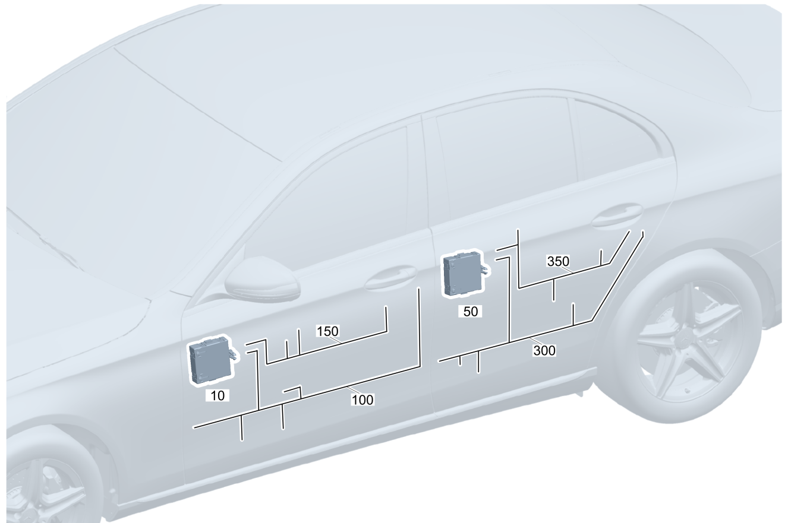

| № | Артикул | Название | Кол. | Примечание | Ограничение |
|---|---|---|---|---|---|
| 10 | A 206 900 22 10 | Блок управления | 1 | Блок управления двери спереди слева Рулевое управление: Влево [672] ДЕТАЛЬ ПОСЛЕ УСТАН.ПРОВЕРИТЬ НА АКТУАЛЬНОСТЬ "ПРОШИВНОГО" ПО | |
| 10 | A 206 900 02 12 | Блок управления | 1 | Блок управления двери спереди слева Рулевое управление: Влево [672] ДЕТАЛЬ ПОСЛЕ УСТАН.ПРОВЕРИТЬ НА АКТУАЛЬНОСТЬ "ПРОШИВНОГО" ПО [414] СТАРУЮ ДЕТАЛЬ УСТАНАВЛИВАТЬ БОЛЬШЕ НЕ РАЗРЕШАЕТСЯ | |
| 10 | A 206 900 01 13 | Блок управления (CONTROL UNIT) | 1 | Блок управления двери спереди слева Рулевое управление: Влево [672] ДЕТАЛЬ ПОСЛЕ УСТАН.ПРОВЕРИТЬ НА АКТУАЛЬНОСТЬ "ПРОШИВНОГО" ПО | |
| 10 | A 206 900 36 17 | Блок управления | 1 | Блок управления двери спереди слева Рулевое управление: Влево [672] ДЕТАЛЬ ПОСЛЕ УСТАН.ПРОВЕРИТЬ НА АКТУАЛЬНОСТЬ "ПРОШИВНОГО" ПО | |
| 10 | A 206 900 67 19 | Блок управления | 1 | Блок управления двери спереди слева Рулевое управление: Влево [672] ДЕТАЛЬ ПОСЛЕ УСТАН.ПРОВЕРИТЬ НА АКТУАЛЬНОСТЬ "ПРОШИВНОГО" ПО | |
| 10 | A 206 900 68 15 | Блок управления | 1 | Блок управления двери спереди слева Рулевое управление: Влево [672] ДЕТАЛЬ ПОСЛЕ УСТАН.ПРОВЕРИТЬ НА АКТУАЛЬНОСТЬ "ПРОШИВНОГО" ПО | |
| 10 | A 206 900 36 17 | Блок управления | 1 | Блок управления двери спереди слева Рулевое управление: Влево [672] ДЕТАЛЬ ПОСЛЕ УСТАН.ПРОВЕРИТЬ НА АКТУАЛЬНОСТЬ "ПРОШИВНОГО" ПО | |
| 10 | A 206 900 49 20 | Блок управления | 1 | Блок управления двери спереди слева Рулевое управление: Влево [672] ДЕТАЛЬ ПОСЛЕ УСТАН.ПРОВЕРИТЬ НА АКТУАЛЬНОСТЬ "ПРОШИВНОГО" ПО | |
| 10 | A 206 900 58 19 | Блок управления (CONTROL UNIT) | 1 | Блок управления двери спереди слева Рулевое управление: Влево [672] ДЕТАЛЬ ПОСЛЕ УСТАН.ПРОВЕРИТЬ НА АКТУАЛЬНОСТЬ "ПРОШИВНОГО" ПО | |
| 10 | A 206 900 23 10 | Блок управления | 1 | Блок управления двери спереди слева Рулевое управление: Влево [672] ДЕТАЛЬ ПОСЛЕ УСТАН.ПРОВЕРИТЬ НА АКТУАЛЬНОСТЬ "ПРОШИВНОГО" ПО | P49/275/401/830+500/873 |
| 10 | A 206 900 03 12 | Блок управления | 1 | Блок управления двери спереди слева Рулевое управление: Влево [672] ДЕТАЛЬ ПОСЛЕ УСТАН.ПРОВЕРИТЬ НА АКТУАЛЬНОСТЬ "ПРОШИВНОГО" ПО [414] СТАРУЮ ДЕТАЛЬ УСТАНАВЛИВАТЬ БОЛЬШЕ НЕ РАЗРЕШАЕТСЯ | P49/275/401/830+500/873 |
| 10 | A 206 900 02 13 | Блок управления | 1 | Блок управления двери спереди слева Рулевое управление: Влево [672] ДЕТАЛЬ ПОСЛЕ УСТАН.ПРОВЕРИТЬ НА АКТУАЛЬНОСТЬ "ПРОШИВНОГО" ПО | P49/275/401/830+500/873 |
| 10 | A 206 900 37 17 | Блок управления (CONTROL UNIT) | 1 | Блок управления двери спереди слева Рулевое управление: Влево [672] ДЕТАЛЬ ПОСЛЕ УСТАН.ПРОВЕРИТЬ НА АКТУАЛЬНОСТЬ "ПРОШИВНОГО" ПО | P49/275/401/830+500/873 |
| 10 | A 206 900 68 19 | Блок управления | 1 | Блок управления двери спереди слева Рулевое управление: Влево [672] ДЕТАЛЬ ПОСЛЕ УСТАН.ПРОВЕРИТЬ НА АКТУАЛЬНОСТЬ "ПРОШИВНОГО" ПО | P49/275/401/830+500/873 |
| 10 | A 206 900 69 15 | Блок управления (CONTROL UNIT) | 1 | Блок управления двери спереди слева Рулевое управление: Влево [672] ДЕТАЛЬ ПОСЛЕ УСТАН.ПРОВЕРИТЬ НА АКТУАЛЬНОСТЬ "ПРОШИВНОГО" ПО | P49/275/401/830+500/873 |
| 10 | A 206 900 37 17 | Блок управления (CONTROL UNIT) | 1 | Блок управления двери спереди слева Рулевое управление: Влево [672] ДЕТАЛЬ ПОСЛЕ УСТАН.ПРОВЕРИТЬ НА АКТУАЛЬНОСТЬ "ПРОШИВНОГО" ПО | P49/275/401/830+500/873 |
| 10 | A 206 900 50 20 | Блок управления (CONTROL UNIT) | 1 | Блок управления двери спереди слева Рулевое управление: Влево [672] ДЕТАЛЬ ПОСЛЕ УСТАН.ПРОВЕРИТЬ НА АКТУАЛЬНОСТЬ "ПРОШИВНОГО" ПО | P49/275/401/830+500/873 |
| 10 | A 206 900 59 19 | Блок управления (CONTROL UNIT) | 1 | Блок управления двери спереди слева Рулевое управление: Влево [672] ДЕТАЛЬ ПОСЛЕ УСТАН.ПРОВЕРИТЬ НА АКТУАЛЬНОСТЬ "ПРОШИВНОГО" ПО | P49/275/401/830+500/873 |
| 10 | A 223 900 69 21 | Блок управления | 1 | Блок управления двери спереди слева Рулевое управление: Влево [672] ДЕТАЛЬ ПОСЛЕ УСТАН.ПРОВЕРИТЬ НА АКТУАЛЬНОСТЬ "ПРОШИВНОГО" ПО | 233/234/885/889/(233/234/885/889)+(P49/275/401/830+500/873) |
| 10 | A 223 900 45 24 | Блок управления (CONTROL UNIT) | 1 | Блок управления двери спереди слева Рулевое управление: Влево [672] ДЕТАЛЬ ПОСЛЕ УСТАН.ПРОВЕРИТЬ НА АКТУАЛЬНОСТЬ "ПРОШИВНОГО" ПО [414] СТАРУЮ ДЕТАЛЬ УСТАНАВЛИВАТЬ БОЛЬШЕ НЕ РАЗРЕШАЕТСЯ | 233/234/885/889/(233/234/885/889)+(P49/275/401/830+500/873) |
| 10 | A 223 900 15 26 | Блок управления (CONTROL UNIT) | 1 | Блок управления двери спереди слева Рулевое управление: Влево [672] ДЕТАЛЬ ПОСЛЕ УСТАН.ПРОВЕРИТЬ НА АКТУАЛЬНОСТЬ "ПРОШИВНОГО" ПО | 233/234/885/889/(233/234/885/889)+(P49/275/401/830+500/873) |
| 10 | A 223 900 54 31 | Блок управления (CONTROL UNIT) | 1 | Блок управления двери спереди слева Рулевое управление: Влево [672] ДЕТАЛЬ ПОСЛЕ УСТАН.ПРОВЕРИТЬ НА АКТУАЛЬНОСТЬ "ПРОШИВНОГО" ПО | 233/234/885/889/(233/234/885/889)+(P49/275/401/830+500/873) |
| 10 | A 223 900 10 33 | Блок управления | 1 | Блок управления двери спереди слева Рулевое управление: Влево [672] ДЕТАЛЬ ПОСЛЕ УСТАН.ПРОВЕРИТЬ НА АКТУАЛЬНОСТЬ "ПРОШИВНОГО" ПО | 233/234/885/889/(233/234/885/889)+(P49/275/401/830+500/873) |
| 10 | A 223 900 50 29 | Блок управления (CONTROL UNIT) | 1 | Блок управления двери спереди слева Рулевое управление: Влево [672] ДЕТАЛЬ ПОСЛЕ УСТАН.ПРОВЕРИТЬ НА АКТУАЛЬНОСТЬ "ПРОШИВНОГО" ПО | 233/234/885/889/(233/234/885/889)+(P49/275/401/830+500/873) |
| 10 | A 223 900 54 31 | Блок управления (CONTROL UNIT) | 1 | Блок управления двери спереди слева Рулевое управление: Влево [672] ДЕТАЛЬ ПОСЛЕ УСТАН.ПРОВЕРИТЬ НА АКТУАЛЬНОСТЬ "ПРОШИВНОГО" ПО | 233/234/885/889/(233/234/885/889)+(P49/275/401/830+500/873) |
| 10 | A 223 900 40 36 | Блок управления | 1 | Блок управления двери спереди слева Рулевое управление: Влево [672] ДЕТАЛЬ ПОСЛЕ УСТАН.ПРОВЕРИТЬ НА АКТУАЛЬНОСТЬ "ПРОШИВНОГО" ПО | 233/234/885/889/(233/234/885/889)+(P49/275/401/830+500/873) |
| 10 | A 223 900 57 33 | Блок управления (CONTROL UNIT) | 1 | Блок управления двери спереди слева Рулевое управление: Влево [672] ДЕТАЛЬ ПОСЛЕ УСТАН.ПРОВЕРИТЬ НА АКТУАЛЬНОСТЬ "ПРОШИВНОГО" ПО | 233/234/885/889/(233/234/885/889)+(P49/275/401/830+500/873) |
| 10 | A 206 900 24 10 | Блок управления | 1 | Блок управления двери спереди слева Рулевое управление: Вправо [672] ДЕТАЛЬ ПОСЛЕ УСТАН.ПРОВЕРИТЬ НА АКТУАЛЬНОСТЬ "ПРОШИВНОГО" ПО | |
| 10 | A 206 900 04 12 | Блок управления | 1 | Блок управления двери спереди слева Рулевое управление: Вправо [672] ДЕТАЛЬ ПОСЛЕ УСТАН.ПРОВЕРИТЬ НА АКТУАЛЬНОСТЬ "ПРОШИВНОГО" ПО [414] СТАРУЮ ДЕТАЛЬ УСТАНАВЛИВАТЬ БОЛЬШЕ НЕ РАЗРЕШАЕТСЯ | |
| 10 | A 206 900 03 13 | Блок управления (CONTROL UNIT) | 1 | Блок управления двери спереди слева Рулевое управление: Вправо [672] ДЕТАЛЬ ПОСЛЕ УСТАН.ПРОВЕРИТЬ НА АКТУАЛЬНОСТЬ "ПРОШИВНОГО" ПО | |
| 10 | A 206 900 40 17 | Блок управления | 1 | Блок управления двери спереди слева Рулевое управление: Вправо [672] ДЕТАЛЬ ПОСЛЕ УСТАН.ПРОВЕРИТЬ НА АКТУАЛЬНОСТЬ "ПРОШИВНОГО" ПО | |
| 10 | A 206 900 69 19 | Блок управления | 1 | Блок управления двери спереди слева Рулевое управление: Вправо [672] ДЕТАЛЬ ПОСЛЕ УСТАН.ПРОВЕРИТЬ НА АКТУАЛЬНОСТЬ "ПРОШИВНОГО" ПО | |
| 10 | A 206 900 70 15 | Блок управления | 1 | Блок управления двери спереди слева Рулевое управление: Вправо [672] ДЕТАЛЬ ПОСЛЕ УСТАН.ПРОВЕРИТЬ НА АКТУАЛЬНОСТЬ "ПРОШИВНОГО" ПО | |
| 10 | A 206 900 40 17 | Блок управления | 1 | Блок управления двери спереди слева Рулевое управление: Вправо [672] ДЕТАЛЬ ПОСЛЕ УСТАН.ПРОВЕРИТЬ НА АКТУАЛЬНОСТЬ "ПРОШИВНОГО" ПО | |
| 10 | A 206 900 51 20 | Блок управления | 1 | Блок управления двери спереди слева Рулевое управление: Вправо [672] ДЕТАЛЬ ПОСЛЕ УСТАН.ПРОВЕРИТЬ НА АКТУАЛЬНОСТЬ "ПРОШИВНОГО" ПО | |
| 10 | A 206 900 60 19 | Блок управления (CONTROL UNIT) | 1 | Блок управления двери спереди слева Рулевое управление: Вправо [672] ДЕТАЛЬ ПОСЛЕ УСТАН.ПРОВЕРИТЬ НА АКТУАЛЬНОСТЬ "ПРОШИВНОГО" ПО | |
| 10 | A 206 900 25 10 | Блок управления | 1 | Блок управления двери спереди слева Рулевое управление: Вправо [672] ДЕТАЛЬ ПОСЛЕ УСТАН.ПРОВЕРИТЬ НА АКТУАЛЬНОСТЬ "ПРОШИВНОГО" ПО | P49/275/401/830+500/873 |
| 10 | A 206 900 05 12 | Блок управления | 1 | Блок управления двери спереди слева Рулевое управление: Вправо [672] ДЕТАЛЬ ПОСЛЕ УСТАН.ПРОВЕРИТЬ НА АКТУАЛЬНОСТЬ "ПРОШИВНОГО" ПО [414] СТАРУЮ ДЕТАЛЬ УСТАНАВЛИВАТЬ БОЛЬШЕ НЕ РАЗРЕШАЕТСЯ | P49/275/401/830+500/873 |
| 10 | A 206 900 04 13 | Блок управления | 1 | Блок управления двери спереди слева Рулевое управление: Вправо [672] ДЕТАЛЬ ПОСЛЕ УСТАН.ПРОВЕРИТЬ НА АКТУАЛЬНОСТЬ "ПРОШИВНОГО" ПО | P49/275/401/830+500/873 |
| 10 | A 206 900 41 17 | Блок управления (CONTROL UNIT) | 1 | Блок управления двери спереди слева Рулевое управление: Вправо [672] ДЕТАЛЬ ПОСЛЕ УСТАН.ПРОВЕРИТЬ НА АКТУАЛЬНОСТЬ "ПРОШИВНОГО" ПО | P49/275/401/830+500/873 |
| 10 | A 206 900 41 17 | Блок управления (CONTROL UNIT) | 1 | Блок управления двери спереди слева Рулевое управление: Вправо [672] ДЕТАЛЬ ПОСЛЕ УСТАН.ПРОВЕРИТЬ НА АКТУАЛЬНОСТЬ "ПРОШИВНОГО" ПО | P49/275/401/830+500/873 |
| 10 | A 206 900 70 19 | Блок управления | 1 | Блок управления двери спереди слева Рулевое управление: Вправо [672] ДЕТАЛЬ ПОСЛЕ УСТАН.ПРОВЕРИТЬ НА АКТУАЛЬНОСТЬ "ПРОШИВНОГО" ПО | P49/275/401/830+500/873 |
| 10 | A 206 900 71 15 | Блок управления (CONTROL UNIT) | 1 | Блок управления двери спереди слева Рулевое управление: Вправо [672] ДЕТАЛЬ ПОСЛЕ УСТАН.ПРОВЕРИТЬ НА АКТУАЛЬНОСТЬ "ПРОШИВНОГО" ПО | P49/275/401/830+500/873 |
| 10 | A 206 900 41 17 | Блок управления (CONTROL UNIT) | 1 | Блок управления двери спереди слева Рулевое управление: Вправо [672] ДЕТАЛЬ ПОСЛЕ УСТАН.ПРОВЕРИТЬ НА АКТУАЛЬНОСТЬ "ПРОШИВНОГО" ПО | P49/275/401/830+500/873 |
| 10 | A 206 900 52 20 | Блок управления (CONTROL UNIT) | 1 | Блок управления двери спереди слева Рулевое управление: Вправо [672] ДЕТАЛЬ ПОСЛЕ УСТАН.ПРОВЕРИТЬ НА АКТУАЛЬНОСТЬ "ПРОШИВНОГО" ПО | P49/275/401/830+500/873 |
| 10 | A 206 900 61 19 | Блок управления (CONTROL UNIT) | 1 | Блок управления двери спереди слева Рулевое управление: Вправо [672] ДЕТАЛЬ ПОСЛЕ УСТАН.ПРОВЕРИТЬ НА АКТУАЛЬНОСТЬ "ПРОШИВНОГО" ПО | P49/275/401/830+500/873 |
| 10 | A 223 900 72 21 | Блок управления | 1 | Блок управления двери спереди слева Рулевое управление: Вправо [672] ДЕТАЛЬ ПОСЛЕ УСТАН.ПРОВЕРИТЬ НА АКТУАЛЬНОСТЬ "ПРОШИВНОГО" ПО | 233/234/885/889/(233/234/885/889)+(P49/275/401/830+500/873) |
| 10 | A 223 900 46 24 | Блок управления (CONTROL UNIT) | 1 | Блок управления двери спереди слева Рулевое управление: Вправо [672] ДЕТАЛЬ ПОСЛЕ УСТАН.ПРОВЕРИТЬ НА АКТУАЛЬНОСТЬ "ПРОШИВНОГО" ПО | 233/234/885/889/(233/234/885/889)+(P49/275/401/830+500/873) |
| 10 | A 223 900 17 26 | Блок управления (CONTROL UNIT) | 1 | Блок управления двери спереди слева Рулевое управление: Вправо [672] ДЕТАЛЬ ПОСЛЕ УСТАН.ПРОВЕРИТЬ НА АКТУАЛЬНОСТЬ "ПРОШИВНОГО" ПО | 233/234/885/889/(233/234/885/889)+(P49/275/401/830+500/873) |
| 10 | A 223 900 56 31 | Блок управления (CONTROL UNIT) | 1 | Блок управления двери спереди слева Рулевое управление: Вправо [672] ДЕТАЛЬ ПОСЛЕ УСТАН.ПРОВЕРИТЬ НА АКТУАЛЬНОСТЬ "ПРОШИВНОГО" ПО | 233/234/885/889/(233/234/885/889)+(P49/275/401/830+500/873) |
| 10 | A 223 900 11 33 | Блок управления | 1 | Блок управления двери спереди слева Рулевое управление: Вправо [672] ДЕТАЛЬ ПОСЛЕ УСТАН.ПРОВЕРИТЬ НА АКТУАЛЬНОСТЬ "ПРОШИВНОГО" ПО | 233/234/885/889/(233/234/885/889)+(P49/275/401/830+500/873) |
| 10 | A 223 900 52 29 | Блок управления (CONTROL UNIT) | 1 | Блок управления двери спереди слева Рулевое управление: Вправо [672] ДЕТАЛЬ ПОСЛЕ УСТАН.ПРОВЕРИТЬ НА АКТУАЛЬНОСТЬ "ПРОШИВНОГО" ПО | 233/234/885/889/(233/234/885/889)+(P49/275/401/830+500/873) |
| 10 | A 223 900 56 31 | Блок управления (CONTROL UNIT) | 1 | Блок управления двери спереди слева Рулевое управление: Вправо [672] ДЕТАЛЬ ПОСЛЕ УСТАН.ПРОВЕРИТЬ НА АКТУАЛЬНОСТЬ "ПРОШИВНОГО" ПО | 233/234/885/889/(233/234/885/889)+(P49/275/401/830+500/873) |
| 10 | A 223 900 43 36 | Блок управления (CONTROL UNIT) | 1 | Блок управления двери спереди слева Рулевое управление: Вправо [672] ДЕТАЛЬ ПОСЛЕ УСТАН.ПРОВЕРИТЬ НА АКТУАЛЬНОСТЬ "ПРОШИВНОГО" ПО | 233/234/885/889/(233/234/885/889)+(P49/275/401/830+500/873) |
| 10 | A 223 900 59 33 | Блок управления (CONTROL UNIT) | 1 | Блок управления двери спереди слева Рулевое управление: Вправо [672] ДЕТАЛЬ ПОСЛЕ УСТАН.ПРОВЕРИТЬ НА АКТУАЛЬНОСТЬ "ПРОШИВНОГО" ПО | 233/234/885/889/(233/234/885/889)+(P49/275/401/830+500/873) |
| 10 | A 206 900 75 18 | Блок управления | 1 | Блок управления двери спереди слева Рулевое управление: Влево [672] ДЕТАЛЬ ПОСЛЕ УСТАН.ПРОВЕРИТЬ НА АКТУАЛЬНОСТЬ "ПРОШИВНОГО" ПО | 804 |
| 10 | A 206 900 75 18 | Блок управления | 1 | Блок управления двери спереди слева Рулевое управление: Влево [672] ДЕТАЛЬ ПОСЛЕ УСТАН.ПРОВЕРИТЬ НА АКТУАЛЬНОСТЬ "ПРОШИВНОГО" ПО | |
| 10 | A 206 900 94 21 | Блок управления | 1 | Блок управления двери спереди слева Рулевое управление: Влево [672] ДЕТАЛЬ ПОСЛЕ УСТАН.ПРОВЕРИТЬ НА АКТУАЛЬНОСТЬ "ПРОШИВНОГО" ПО | |
| 10 | A 206 900 76 18 | Блок управления (CONTROL UNIT) | 1 | Блок управления двери спереди слева Рулевое управление: Влево [672] ДЕТАЛЬ ПОСЛЕ УСТАН.ПРОВЕРИТЬ НА АКТУАЛЬНОСТЬ "ПРОШИВНОГО" ПО | 804+(P49/275/401/830+500/873) |
| 10 | A 206 900 76 18 | Блок управления (CONTROL UNIT) | 1 | Блок управления двери спереди слева Рулевое управление: Влево [672] ДЕТАЛЬ ПОСЛЕ УСТАН.ПРОВЕРИТЬ НА АКТУАЛЬНОСТЬ "ПРОШИВНОГО" ПО | (P49/275/401/830+500/873) |
| 10 | A 206 900 95 21 | Блок управления (CONTROL UNIT) | 1 | Блок управления двери спереди слева Рулевое управление: Влево [672] ДЕТАЛЬ ПОСЛЕ УСТАН.ПРОВЕРИТЬ НА АКТУАЛЬНОСТЬ "ПРОШИВНОГО" ПО | (P49/275/401/830+500/873) |
| 10 | A 223 900 63 34 | Блок управления (CONTROL UNIT) | 1 | Блок управления двери спереди слева Рулевое управление: Влево [672] ДЕТАЛЬ ПОСЛЕ УСТАН.ПРОВЕРИТЬ НА АКТУАЛЬНОСТЬ "ПРОШИВНОГО" ПО | 804+(233/234/885/889/(233/234/885/889)+(P49/275/401/830+500/873)) |
| 10 | A 223 900 63 34 | Блок управления (CONTROL UNIT) | 1 | Блок управления двери спереди слева Рулевое управление: Влево [672] ДЕТАЛЬ ПОСЛЕ УСТАН.ПРОВЕРИТЬ НА АКТУАЛЬНОСТЬ "ПРОШИВНОГО" ПО | (233/234/885/889/(233/234/885/889)+(P49/275/401/830+500/873)) |
| 10 | A 223 900 37 39 | Блок управления (CONTROL UNIT) | 1 | Блок управления двери спереди слева Рулевое управление: Влево [672] ДЕТАЛЬ ПОСЛЕ УСТАН.ПРОВЕРИТЬ НА АКТУАЛЬНОСТЬ "ПРОШИВНОГО" ПО | (233/234/885/889/(233/234/885/889)+(P49/275/401/830+500/873)) |
| 10 | A 206 900 77 18 | Блок управления | 1 | Блок управления двери спереди слева Рулевое управление: Вправо [672] ДЕТАЛЬ ПОСЛЕ УСТАН.ПРОВЕРИТЬ НА АКТУАЛЬНОСТЬ "ПРОШИВНОГО" ПО | 804 |
| 10 | A 206 900 77 18 | Блок управления | 1 | Блок управления двери спереди слева Рулевое управление: Вправо [672] ДЕТАЛЬ ПОСЛЕ УСТАН.ПРОВЕРИТЬ НА АКТУАЛЬНОСТЬ "ПРОШИВНОГО" ПО | |
| 10 | A 206 900 96 21 | Блок управления | 1 | Блок управления двери спереди слева Рулевое управление: Вправо [672] ДЕТАЛЬ ПОСЛЕ УСТАН.ПРОВЕРИТЬ НА АКТУАЛЬНОСТЬ "ПРОШИВНОГО" ПО | |
| 10 | A 206 900 78 18 | Блок управления (CONTROL UNIT) | 1 | Блок управления двери спереди слева Рулевое управление: Вправо [672] ДЕТАЛЬ ПОСЛЕ УСТАН.ПРОВЕРИТЬ НА АКТУАЛЬНОСТЬ "ПРОШИВНОГО" ПО | 804+(P49/275/401/830+500/873) |
| 10 | A 206 900 78 18 | Блок управления (CONTROL UNIT) | 1 | Блок управления двери спереди слева Рулевое управление: Вправо [672] ДЕТАЛЬ ПОСЛЕ УСТАН.ПРОВЕРИТЬ НА АКТУАЛЬНОСТЬ "ПРОШИВНОГО" ПО | (P49/275/401/830+500/873) |
| 10 | A 206 900 97 21 | Блок управления (CONTROL UNIT) | 1 | Блок управления двери спереди слева Рулевое управление: Вправо [672] ДЕТАЛЬ ПОСЛЕ УСТАН.ПРОВЕРИТЬ НА АКТУАЛЬНОСТЬ "ПРОШИВНОГО" ПО | (P49/275/401/830+500/873) |
| 10 | A 223 900 64 34 | Блок управления (CONTROL UNIT) | 1 | Блок управления двери спереди слева Рулевое управление: Вправо [672] ДЕТАЛЬ ПОСЛЕ УСТАН.ПРОВЕРИТЬ НА АКТУАЛЬНОСТЬ "ПРОШИВНОГО" ПО | 804+(233/234/885/889/(233/234/885/889)+(P49/275/401/830+500/873)) |
| 10 | A 223 900 64 34 | Блок управления (CONTROL UNIT) | 1 | Блок управления двери спереди слева Рулевое управление: Вправо [672] ДЕТАЛЬ ПОСЛЕ УСТАН.ПРОВЕРИТЬ НА АКТУАЛЬНОСТЬ "ПРОШИВНОГО" ПО | (233/234/885/889/(233/234/885/889)+(P49/275/401/830+500/873)) |
| 10 | A 223 900 40 39 | Блок управления (CONTROL UNIT) | 1 | Блок управления двери спереди слева Рулевое управление: Вправо [672] ДЕТАЛЬ ПОСЛЕ УСТАН.ПРОВЕРИТЬ НА АКТУАЛЬНОСТЬ "ПРОШИВНОГО" ПО | (233/234/885/889/(233/234/885/889)+(P49/275/401/830+500/873)) |
| 10 | A 206 900 91 20 | Блок управления | 1 | Блок управления двери спереди слева Рулевое управление: Влево [672] ДЕТАЛЬ ПОСЛЕ УСТАН.ПРОВЕРИТЬ НА АКТУАЛЬНОСТЬ "ПРОШИВНОГО" ПО | 804+054/805 |
| 10 | A 206 900 91 20 | Блок управления | 1 | Блок управления двери спереди слева Рулевое управление: Влево [672] ДЕТАЛЬ ПОСЛЕ УСТАН.ПРОВЕРИТЬ НА АКТУАЛЬНОСТЬ "ПРОШИВНОГО" ПО | 804+054 |
| 10 | A 206 900 91 20 | Блок управления | 1 | Блок управления двери спереди слева Рулевое управление: Влево [672] ДЕТАЛЬ ПОСЛЕ УСТАН.ПРОВЕРИТЬ НА АКТУАЛЬНОСТЬ "ПРОШИВНОГО" ПО | |
| 10 | A 206 900 91 20 | Блок управления | 1 | Блок управления двери спереди слева Рулевое управление: Влево [672] ДЕТАЛЬ ПОСЛЕ УСТАН.ПРОВЕРИТЬ НА АКТУАЛЬНОСТЬ "ПРОШИВНОГО" ПО | 805 |
| 10 | A 206 900 66 21 | Блок управления | 1 | Блок управления двери спереди слева Рулевое управление: Влево [672] ДЕТАЛЬ ПОСЛЕ УСТАН.ПРОВЕРИТЬ НА АКТУАЛЬНОСТЬ "ПРОШИВНОГО" ПО | 805 |
| 10 | A 206 900 66 21 | Блок управления | 1 | Блок управления двери спереди слева Рулевое управление: Влево [672] ДЕТАЛЬ ПОСЛЕ УСТАН.ПРОВЕРИТЬ НА АКТУАЛЬНОСТЬ "ПРОШИВНОГО" ПО | |
| 10 | A 206 900 92 20 | Блок управления (CONTROL UNIT) | 1 | Блок управления двери спереди слева Рулевое управление: Влево [672] ДЕТАЛЬ ПОСЛЕ УСТАН.ПРОВЕРИТЬ НА АКТУАЛЬНОСТЬ "ПРОШИВНОГО" ПО | (804+054/805)+(P49/275/401/830+500/873) |
| 10 | A 206 900 92 20 | Блок управления (CONTROL UNIT) | 1 | Блок управления двери спереди слева Рулевое управление: Влево [672] ДЕТАЛЬ ПОСЛЕ УСТАН.ПРОВЕРИТЬ НА АКТУАЛЬНОСТЬ "ПРОШИВНОГО" ПО | (804+054)+(P49/275/401/830+500/873) |
| 10 | A 206 900 92 20 | Блок управления (CONTROL UNIT) | 1 | Блок управления двери спереди слева Рулевое управление: Влево [672] ДЕТАЛЬ ПОСЛЕ УСТАН.ПРОВЕРИТЬ НА АКТУАЛЬНОСТЬ "ПРОШИВНОГО" ПО | (P49/275/401/830+500/873) |
| 10 | A 206 900 92 20 | Блок управления (CONTROL UNIT) | 1 | Блок управления двери спереди слева Рулевое управление: Влево [672] ДЕТАЛЬ ПОСЛЕ УСТАН.ПРОВЕРИТЬ НА АКТУАЛЬНОСТЬ "ПРОШИВНОГО" ПО | 805+(P49/275/401/830+500/873) |
| 10 | A 206 900 67 21 | Блок управления (CONTROL UNIT) | 1 | Блок управления двери спереди слева Рулевое управление: Влево [672] ДЕТАЛЬ ПОСЛЕ УСТАН.ПРОВЕРИТЬ НА АКТУАЛЬНОСТЬ "ПРОШИВНОГО" ПО | 805+(P49/275/401/830+500/873) |
| 10 | A 206 900 67 21 | Блок управления (CONTROL UNIT) | 1 | Блок управления двери спереди слева Рулевое управление: Влево [672] ДЕТАЛЬ ПОСЛЕ УСТАН.ПРОВЕРИТЬ НА АКТУАЛЬНОСТЬ "ПРОШИВНОГО" ПО | (P49/275/401/830+500/873) |
| 10 | A 223 900 95 36 | Блок управления (CONTROL UNIT) | 1 | Блок управления двери спереди слева Рулевое управление: Влево [672] ДЕТАЛЬ ПОСЛЕ УСТАН.ПРОВЕРИТЬ НА АКТУАЛЬНОСТЬ "ПРОШИВНОГО" ПО | (804+054/805)+(233/234/885/889/(233/234/885/889)+(P49/275/401/830+500/873)) |
| 10 | A 223 900 95 36 | Блок управления (CONTROL UNIT) | 1 | Блок управления двери спереди слева Рулевое управление: Влево [672] ДЕТАЛЬ ПОСЛЕ УСТАН.ПРОВЕРИТЬ НА АКТУАЛЬНОСТЬ "ПРОШИВНОГО" ПО | (804+054)+(233/234/889/(233/234/889)+(P49/275/401/830+500/873)) |
| 10 | A 223 900 95 36 | Блок управления (CONTROL UNIT) | 1 | Блок управления двери спереди слева Рулевое управление: Влево [672] ДЕТАЛЬ ПОСЛЕ УСТАН.ПРОВЕРИТЬ НА АКТУАЛЬНОСТЬ "ПРОШИВНОГО" ПО | (233/234/885/889/(233/234/885/889)+(P49/275/401/830+500/873)) |
| 10 | A 223 900 95 36 | Блок управления (CONTROL UNIT) | 1 | Блок управления двери спереди слева Рулевое управление: Влево [672] ДЕТАЛЬ ПОСЛЕ УСТАН.ПРОВЕРИТЬ НА АКТУАЛЬНОСТЬ "ПРОШИВНОГО" ПО | 805+(233/234/889/(233/234/889)+(P49/275/401/830+500/873)) |
| 10 | A 223 900 97 38 | Блок управления (CONTROL UNIT) | 1 | Блок управления двери спереди слева Рулевое управление: Влево [672] ДЕТАЛЬ ПОСЛЕ УСТАН.ПРОВЕРИТЬ НА АКТУАЛЬНОСТЬ "ПРОШИВНОГО" ПО | 805+(233/234/885/889/(233/234/885/889)+(P49/275/401/830+500/873)) |
| 10 | A 223 900 97 38 | Блок управления (CONTROL UNIT) | 1 | Блок управления двери спереди слева Рулевое управление: Влево [672] ДЕТАЛЬ ПОСЛЕ УСТАН.ПРОВЕРИТЬ НА АКТУАЛЬНОСТЬ "ПРОШИВНОГО" ПО | (233/234/885/889/(233/234/885/889)+(P49/275/401/830+500/873)) |
| 10 | A 206 900 93 20 | Блок управления | 1 | Блок управления двери спереди слева Рулевое управление: Вправо [672] ДЕТАЛЬ ПОСЛЕ УСТАН.ПРОВЕРИТЬ НА АКТУАЛЬНОСТЬ "ПРОШИВНОГО" ПО | (804+054/805) |
| 10 | A 206 900 93 20 | Блок управления | 1 | Блок управления двери спереди слева Рулевое управление: Вправо [672] ДЕТАЛЬ ПОСЛЕ УСТАН.ПРОВЕРИТЬ НА АКТУАЛЬНОСТЬ "ПРОШИВНОГО" ПО | (804+054) |
| 10 | A 206 900 93 20 | Блок управления | 1 | Блок управления двери спереди слева Рулевое управление: Вправо [672] ДЕТАЛЬ ПОСЛЕ УСТАН.ПРОВЕРИТЬ НА АКТУАЛЬНОСТЬ "ПРОШИВНОГО" ПО | |
| 10 | A 206 900 93 20 | Блок управления | 1 | Блок управления двери спереди слева Рулевое управление: Вправо [672] ДЕТАЛЬ ПОСЛЕ УСТАН.ПРОВЕРИТЬ НА АКТУАЛЬНОСТЬ "ПРОШИВНОГО" ПО | 805 |
| 10 | A 206 900 68 21 | Блок управления | 1 | Блок управления двери спереди слева Рулевое управление: Вправо [672] ДЕТАЛЬ ПОСЛЕ УСТАН.ПРОВЕРИТЬ НА АКТУАЛЬНОСТЬ "ПРОШИВНОГО" ПО | 805 |
| 10 | A 206 900 68 21 | Блок управления | 1 | Блок управления двери спереди слева Рулевое управление: Вправо [672] ДЕТАЛЬ ПОСЛЕ УСТАН.ПРОВЕРИТЬ НА АКТУАЛЬНОСТЬ "ПРОШИВНОГО" ПО | |
| 10 | A 206 900 94 20 | Блок управления (CONTROL UNIT) | 1 | Блок управления двери спереди слева Рулевое управление: Вправо [672] ДЕТАЛЬ ПОСЛЕ УСТАН.ПРОВЕРИТЬ НА АКТУАЛЬНОСТЬ "ПРОШИВНОГО" ПО | (804+054/805)+(P49/275/401/830+500/873) |
| 10 | A 206 900 94 20 | Блок управления (CONTROL UNIT) | 1 | Блок управления двери спереди слева Рулевое управление: Вправо [672] ДЕТАЛЬ ПОСЛЕ УСТАН.ПРОВЕРИТЬ НА АКТУАЛЬНОСТЬ "ПРОШИВНОГО" ПО | (804+054)+(P49/275/401/830+500/873) |
| 10 | A 206 900 94 20 | Блок управления (CONTROL UNIT) | 1 | Блок управления двери спереди слева Рулевое управление: Вправо [672] ДЕТАЛЬ ПОСЛЕ УСТАН.ПРОВЕРИТЬ НА АКТУАЛЬНОСТЬ "ПРОШИВНОГО" ПО | (P49/275/401/830+500/873) |
| 10 | A 206 900 94 20 | Блок управления (CONTROL UNIT) | 1 | Блок управления двери спереди слева Рулевое управление: Вправо [672] ДЕТАЛЬ ПОСЛЕ УСТАН.ПРОВЕРИТЬ НА АКТУАЛЬНОСТЬ "ПРОШИВНОГО" ПО | 805+(P49/275/401/830+500/873) |
| 10 | A 206 900 69 21 | Блок управления (CONTROL UNIT) | 1 | Блок управления двери спереди слева Рулевое управление: Вправо [672] ДЕТАЛЬ ПОСЛЕ УСТАН.ПРОВЕРИТЬ НА АКТУАЛЬНОСТЬ "ПРОШИВНОГО" ПО | 805+(P49/275/401/830+500/873) |
| 10 | A 206 900 69 21 | Блок управления (CONTROL UNIT) | 1 | Блок управления двери спереди слева Рулевое управление: Вправо [672] ДЕТАЛЬ ПОСЛЕ УСТАН.ПРОВЕРИТЬ НА АКТУАЛЬНОСТЬ "ПРОШИВНОГО" ПО | (P49/275/401/830+500/873) |
| 10 | A 223 900 98 36 | Блок управления (CONTROL UNIT) | 1 | Блок управления двери спереди слева Рулевое управление: Вправо [672] ДЕТАЛЬ ПОСЛЕ УСТАН.ПРОВЕРИТЬ НА АКТУАЛЬНОСТЬ "ПРОШИВНОГО" ПО | (804+054/805)+(233/234/885/889/(233/234/885/889)+(P49/275/401/830+500/873)) |
| 10 | A 223 900 98 36 | Блок управления (CONTROL UNIT) | 1 | Блок управления двери спереди слева Рулевое управление: Вправо [672] ДЕТАЛЬ ПОСЛЕ УСТАН.ПРОВЕРИТЬ НА АКТУАЛЬНОСТЬ "ПРОШИВНОГО" ПО | (804+054)+(233/234/885/889/(233/234/885/889)+(P49/275/401/830+500/873)) |
| 10 | A 223 900 98 36 | Блок управления (CONTROL UNIT) | 1 | Блок управления двери спереди слева Рулевое управление: Вправо [672] ДЕТАЛЬ ПОСЛЕ УСТАН.ПРОВЕРИТЬ НА АКТУАЛЬНОСТЬ "ПРОШИВНОГО" ПО | (233/234/885/889/(233/234/885/889)+(P49/275/401/830+500/873)) |
| 10 | A 223 900 98 36 | Блок управления (CONTROL UNIT) | 1 | Блок управления двери спереди слева Рулевое управление: Вправо [672] ДЕТАЛЬ ПОСЛЕ УСТАН.ПРОВЕРИТЬ НА АКТУАЛЬНОСТЬ "ПРОШИВНОГО" ПО | 805+(233/234/885/889/(233/234/885/889)+(P49/275/401/830+500/873)) |
| 10 | A 223 900 00 39 | Блок управления (CONTROL UNIT) | 1 | Блок управления двери спереди слева Рулевое управление: Вправо [672] ДЕТАЛЬ ПОСЛЕ УСТАН.ПРОВЕРИТЬ НА АКТУАЛЬНОСТЬ "ПРОШИВНОГО" ПО | 805+(233/234/885/889/(233/234/885/889)+(P49/275/401/830+500/873)) |
| 10 | A 223 900 00 39 | Блок управления (CONTROL UNIT) | 1 | Блок управления двери спереди слева Рулевое управление: Вправо [672] ДЕТАЛЬ ПОСЛЕ УСТАН.ПРОВЕРИТЬ НА АКТУАЛЬНОСТЬ "ПРОШИВНОГО" ПО | (233/234/885/889/(233/234/885/889)+(P49/275/401/830+500/873)) |
| 10 | A 206 900 74 23 | Блок управления | 1 | Блок управления двери спереди слева Рулевое управление: Влево [672] ДЕТАЛЬ ПОСЛЕ УСТАН.ПРОВЕРИТЬ НА АКТУАЛЬНОСТЬ "ПРОШИВНОГО" ПО | (805+055)/806 |
| 10 | A 206 900 74 23 | Блок управления | 1 | Блок управления двери спереди слева Рулевое управление: Влево [672] ДЕТАЛЬ ПОСЛЕ УСТАН.ПРОВЕРИТЬ НА АКТУАЛЬНОСТЬ "ПРОШИВНОГО" ПО | 805+055 |
| 10 | A 206 900 74 23 | Блок управления | 1 | Блок управления двери спереди слева Рулевое управление: Влево [672] ДЕТАЛЬ ПОСЛЕ УСТАН.ПРОВЕРИТЬ НА АКТУАЛЬНОСТЬ "ПРОШИВНОГО" ПО | |
| 10 | A 206 900 75 23 | Блок управления (CONTROL UNIT) | 1 | Блок управления двери спереди слева Рулевое управление: Влево [672] ДЕТАЛЬ ПОСЛЕ УСТАН.ПРОВЕРИТЬ НА АКТУАЛЬНОСТЬ "ПРОШИВНОГО" ПО | (805+055/806)+(P49/275/401/830+500/873) |
| 10 | A 206 900 75 23 | Блок управления (CONTROL UNIT) | 1 | Блок управления двери спереди слева Рулевое управление: Влево [672] ДЕТАЛЬ ПОСЛЕ УСТАН.ПРОВЕРИТЬ НА АКТУАЛЬНОСТЬ "ПРОШИВНОГО" ПО | (805+055)+(P49/275/401/830+500/873) |
| 10 | A 206 900 75 23 | Блок управления (CONTROL UNIT) | 1 | Блок управления двери спереди слева Рулевое управление: Влево [672] ДЕТАЛЬ ПОСЛЕ УСТАН.ПРОВЕРИТЬ НА АКТУАЛЬНОСТЬ "ПРОШИВНОГО" ПО | (P49/275/401/830+500/873) |
| 10 | A 223 900 10 42 | Блок управления (CONTROL UNIT) | 1 | Блок управления двери спереди слева Рулевое управление: Влево [672] ДЕТАЛЬ ПОСЛЕ УСТАН.ПРОВЕРИТЬ НА АКТУАЛЬНОСТЬ "ПРОШИВНОГО" ПО | (805+055/806)+(233/234/885/889/(233/234/885/889)+(P49/275/401/830+500/873)) |
| 10 | A 223 900 10 42 | Блок управления (CONTROL UNIT) | 1 | Блок управления двери спереди слева Рулевое управление: Влево [672] ДЕТАЛЬ ПОСЛЕ УСТАН.ПРОВЕРИТЬ НА АКТУАЛЬНОСТЬ "ПРОШИВНОГО" ПО | (805+055)+(233/234/885/889/(233/234/885/889)+(P49/275/401/830+500/873)) |
| 10 | A 223 900 10 42 | Блок управления (CONTROL UNIT) | 1 | Блок управления двери спереди слева Рулевое управление: Влево [672] ДЕТАЛЬ ПОСЛЕ УСТАН.ПРОВЕРИТЬ НА АКТУАЛЬНОСТЬ "ПРОШИВНОГО" ПО | (233/234/885/889/(233/234/885/889)+(P49/275/401/830+500/873)) |
| 10 | A 206 900 76 23 | Блок управления | 1 | Блок управления двери спереди слева Рулевое управление: Вправо [672] ДЕТАЛЬ ПОСЛЕ УСТАН.ПРОВЕРИТЬ НА АКТУАЛЬНОСТЬ "ПРОШИВНОГО" ПО | (805+055)/806 |
| 10 | A 206 900 76 23 | Блок управления | 1 | Блок управления двери спереди слева Рулевое управление: Вправо [672] ДЕТАЛЬ ПОСЛЕ УСТАН.ПРОВЕРИТЬ НА АКТУАЛЬНОСТЬ "ПРОШИВНОГО" ПО | 805+055 |
| 10 | A 206 900 76 23 | Блок управления | 1 | Блок управления двери спереди слева Рулевое управление: Вправо [672] ДЕТАЛЬ ПОСЛЕ УСТАН.ПРОВЕРИТЬ НА АКТУАЛЬНОСТЬ "ПРОШИВНОГО" ПО | |
| 10 | A 206 900 77 23 | Блок управления (CONTROL UNIT) | 1 | Блок управления двери спереди слева Рулевое управление: Вправо [672] ДЕТАЛЬ ПОСЛЕ УСТАН.ПРОВЕРИТЬ НА АКТУАЛЬНОСТЬ "ПРОШИВНОГО" ПО | (805+055/806)+(P49/275/401/830+500/873) |
| 10 | A 206 900 77 23 | Блок управления (CONTROL UNIT) | 1 | Блок управления двери спереди слева Рулевое управление: Вправо [672] ДЕТАЛЬ ПОСЛЕ УСТАН.ПРОВЕРИТЬ НА АКТУАЛЬНОСТЬ "ПРОШИВНОГО" ПО | (805+055)+(P49/275/401/830+500/873) |
| 10 | A 206 900 77 23 | Блок управления (CONTROL UNIT) | 1 | Блок управления двери спереди слева Рулевое управление: Вправо [672] ДЕТАЛЬ ПОСЛЕ УСТАН.ПРОВЕРИТЬ НА АКТУАЛЬНОСТЬ "ПРОШИВНОГО" ПО | (P49/275/401/830+500/873) |
| 10 | A 223 900 13 42 | Блок управления (CONTROL UNIT) | 1 | Блок управления двери спереди слева Рулевое управление: Вправо [672] ДЕТАЛЬ ПОСЛЕ УСТАН.ПРОВЕРИТЬ НА АКТУАЛЬНОСТЬ "ПРОШИВНОГО" ПО | (805+055/806)+(233/234/885/889/(233/234/885/889)+(P49/275/401/830+500/873)) |
| 10 | A 223 900 13 42 | Блок управления (CONTROL UNIT) | 1 | Блок управления двери спереди слева Рулевое управление: Вправо [672] ДЕТАЛЬ ПОСЛЕ УСТАН.ПРОВЕРИТЬ НА АКТУАЛЬНОСТЬ "ПРОШИВНОГО" ПО | (805+055)+(233/234/885/889/(233/234/885/889)+(P49/275/401/830+500/873)) |
| 10 | A 223 900 13 42 | Блок управления (CONTROL UNIT) | 1 | Блок управления двери спереди слева Рулевое управление: Вправо [672] ДЕТАЛЬ ПОСЛЕ УСТАН.ПРОВЕРИТЬ НА АКТУАЛЬНОСТЬ "ПРОШИВНОГО" ПО | (233/234/885/889/(233/234/885/889)+(P49/275/401/830+500/873)) |
| 10 | A 223 900 13 42 | Блок управления (CONTROL UNIT) | 1 | Блок управления двери спереди слева Рулевое управление: Вправо [672] ДЕТАЛЬ ПОСЛЕ УСТАН.ПРОВЕРИТЬ НА АКТУАЛЬНОСТЬ "ПРОШИВНОГО" ПО | (233/234/885/889/(233/234/885/889)+(P49/275/401/830+500/873)) |
| 10 | A 206 900 23 24 | Блок управления | 1 | Блок управления двери спереди слева Рулевое управление: Влево [672] ДЕТАЛЬ ПОСЛЕ УСТАН.ПРОВЕРИТЬ НА АКТУАЛЬНОСТЬ "ПРОШИВНОГО" ПО | 806 |
| 10 | A 206 900 23 24 | Блок управления | 1 | Блок управления двери спереди слева Рулевое управление: Влево [672] ДЕТАЛЬ ПОСЛЕ УСТАН.ПРОВЕРИТЬ НА АКТУАЛЬНОСТЬ "ПРОШИВНОГО" ПО | |
| 10 | A 206 900 24 24 | Блок управления (CONTROL UNIT) | 1 | Блок управления двери спереди слева Рулевое управление: Влево [672] ДЕТАЛЬ ПОСЛЕ УСТАН.ПРОВЕРИТЬ НА АКТУАЛЬНОСТЬ "ПРОШИВНОГО" ПО | 806+(P49/275/401/830+500/873) |
| 10 | A 206 900 24 24 | Блок управления (CONTROL UNIT) | 1 | Блок управления двери спереди слева Рулевое управление: Влево [672] ДЕТАЛЬ ПОСЛЕ УСТАН.ПРОВЕРИТЬ НА АКТУАЛЬНОСТЬ "ПРОШИВНОГО" ПО | (P49/275/401/830+500/873) |
| 10 | A 223 900 45 43 | Блок управления (CONTROL UNIT) | 1 | Блок управления двери спереди слева Рулевое управление: Влево [672] ДЕТАЛЬ ПОСЛЕ УСТАН.ПРОВЕРИТЬ НА АКТУАЛЬНОСТЬ "ПРОШИВНОГО" ПО | 806+(233/234/885/889/(233/234/885/889)+(P49/275/401/830+500/873)) |
| 10 | A 223 900 45 43 | Блок управления (CONTROL UNIT) | 1 | Блок управления двери спереди слева Рулевое управление: Влево [672] ДЕТАЛЬ ПОСЛЕ УСТАН.ПРОВЕРИТЬ НА АКТУАЛЬНОСТЬ "ПРОШИВНОГО" ПО | (233/234/885/889/(233/234/885/889)+(P49/275/401/830+500/873)) |
| 10 | A 206 900 25 24 | Блок управления | 1 | Блок управления двери спереди слева Рулевое управление: Вправо [672] ДЕТАЛЬ ПОСЛЕ УСТАН.ПРОВЕРИТЬ НА АКТУАЛЬНОСТЬ "ПРОШИВНОГО" ПО | 806 |
| 10 | A 206 900 25 24 | Блок управления | 1 | Блок управления двери спереди слева Рулевое управление: Вправо [672] ДЕТАЛЬ ПОСЛЕ УСТАН.ПРОВЕРИТЬ НА АКТУАЛЬНОСТЬ "ПРОШИВНОГО" ПО | |
| 10 | A 206 900 26 24 | Блок управления (CONTROL UNIT) | 1 | Блок управления двери спереди слева Рулевое управление: Вправо [672] ДЕТАЛЬ ПОСЛЕ УСТАН.ПРОВЕРИТЬ НА АКТУАЛЬНОСТЬ "ПРОШИВНОГО" ПО | 806+(P49/275/401/830+500/873) |
| 10 | A 206 900 26 24 | Блок управления (CONTROL UNIT) | 1 | Блок управления двери спереди слева Рулевое управление: Вправо [672] ДЕТАЛЬ ПОСЛЕ УСТАН.ПРОВЕРИТЬ НА АКТУАЛЬНОСТЬ "ПРОШИВНОГО" ПО | (P49/275/401/830+500/873) |
| 10 | A 223 900 48 43 | Блок управления (CONTROL UNIT) | 1 | Блок управления двери спереди слева Рулевое управление: Вправо [672] ДЕТАЛЬ ПОСЛЕ УСТАН.ПРОВЕРИТЬ НА АКТУАЛЬНОСТЬ "ПРОШИВНОГО" ПО | 806+(233/234/885/889/(233/234/885/889)+(P49/275/401/830+500/873)) |
| 10 | A 223 900 48 43 | Блок управления (CONTROL UNIT) | 1 | Блок управления двери спереди слева Рулевое управление: Вправо [672] ДЕТАЛЬ ПОСЛЕ УСТАН.ПРОВЕРИТЬ НА АКТУАЛЬНОСТЬ "ПРОШИВНОГО" ПО | (233/234/885/889/(233/234/885/889)+(P49/275/401/830+500/873)) |
| 10 | A 206 900 67 24 | Блок управления | 1 | Блок управления двери спереди слева Рулевое управление: Влево [672] ДЕТАЛЬ ПОСЛЕ УСТАН.ПРОВЕРИТЬ НА АКТУАЛЬНОСТЬ "ПРОШИВНОГО" ПО | (807) |
| 10 | A 206 900 67 24 | Блок управления | 1 | Блок управления двери спереди слева Рулевое управление: Влево [672] ДЕТАЛЬ ПОСЛЕ УСТАН.ПРОВЕРИТЬ НА АКТУАЛЬНОСТЬ "ПРОШИВНОГО" ПО | (807/808) |
| 10 | A 206 900 68 24 | Блок управления | 1 | Блок управления двери спереди слева Рулевое управление: Влево [672] ДЕТАЛЬ ПОСЛЕ УСТАН.ПРОВЕРИТЬ НА АКТУАЛЬНОСТЬ "ПРОШИВНОГО" ПО | (807)+(P49/275/401/830+500/873) |
| 10 | A 206 900 68 24 | Блок управления | 1 | Блок управления двери спереди слева Рулевое управление: Влево [672] ДЕТАЛЬ ПОСЛЕ УСТАН.ПРОВЕРИТЬ НА АКТУАЛЬНОСТЬ "ПРОШИВНОГО" ПО | (807/808)+(P49/275/401/830+500/873) |
| 10 | A 223 900 15 45 | Блок управления (CONTROL UNIT) | 1 | Блок управления двери спереди слева Рулевое управление: Влево [672] ДЕТАЛЬ ПОСЛЕ УСТАН.ПРОВЕРИТЬ НА АКТУАЛЬНОСТЬ "ПРОШИВНОГО" ПО | (807)+(4B1/885/889/(4B1/885/889)+(P49/275/401/830+500/873)) |
| 10 | A 223 900 15 45 | Блок управления (CONTROL UNIT) | 1 | Блок управления двери спереди слева Рулевое управление: Влево [672] ДЕТАЛЬ ПОСЛЕ УСТАН.ПРОВЕРИТЬ НА АКТУАЛЬНОСТЬ "ПРОШИВНОГО" ПО | (807/808)+(4B1/885/889/(4B1/885/889)+(P49/275/401/830+500/873)) |
| 10 | A 206 900 69 24 | Блок управления | 1 | Блок управления двери спереди слева Рулевое управление: Вправо [672] ДЕТАЛЬ ПОСЛЕ УСТАН.ПРОВЕРИТЬ НА АКТУАЛЬНОСТЬ "ПРОШИВНОГО" ПО | (807) |
| 10 | A 206 900 69 24 | Блок управления | 1 | Блок управления двери спереди слева Рулевое управление: Вправо [672] ДЕТАЛЬ ПОСЛЕ УСТАН.ПРОВЕРИТЬ НА АКТУАЛЬНОСТЬ "ПРОШИВНОГО" ПО | (807/808) |
| 10 | A 206 900 70 24 | Блок управления | 1 | Блок управления двери спереди слева Рулевое управление: Вправо [672] ДЕТАЛЬ ПОСЛЕ УСТАН.ПРОВЕРИТЬ НА АКТУАЛЬНОСТЬ "ПРОШИВНОГО" ПО | (807/808/29X)+(P49/275/401/830+500/873) |
| 10 | A 206 900 70 24 | Блок управления | 1 | Блок управления двери спереди слева Рулевое управление: Вправо [672] ДЕТАЛЬ ПОСЛЕ УСТАН.ПРОВЕРИТЬ НА АКТУАЛЬНОСТЬ "ПРОШИВНОГО" ПО | (807)+(P49/275/401/830+500/873) |
| 10 | A 206 900 70 24 | Блок управления | 1 | Блок управления двери спереди слева Рулевое управление: Вправо [672] ДЕТАЛЬ ПОСЛЕ УСТАН.ПРОВЕРИТЬ НА АКТУАЛЬНОСТЬ "ПРОШИВНОГО" ПО | (807/808)+(P49/275/401/830+500/873) |
| 10 | A 223 900 18 45 | Блок управления (CONTROL UNIT) | 1 | Блок управления двери спереди слева Рулевое управление: Вправо [672] ДЕТАЛЬ ПОСЛЕ УСТАН.ПРОВЕРИТЬ НА АКТУАЛЬНОСТЬ "ПРОШИВНОГО" ПО | (807/808/29X)+(4B1/885/889/(4B1/885/889)+(P49/275/401/830+500/873)) |
| 10 | A 223 900 18 45 | Блок управления (CONTROL UNIT) | 1 | Блок управления двери спереди слева Рулевое управление: Вправо [672] ДЕТАЛЬ ПОСЛЕ УСТАН.ПРОВЕРИТЬ НА АКТУАЛЬНОСТЬ "ПРОШИВНОГО" ПО | (807)+(4B1/885/889/(4B1/885/889)+(P49/275/401/830+500/873)) |
| 10 | A 223 900 18 45 | Блок управления (CONTROL UNIT) | 1 | Блок управления двери спереди слева Рулевое управление: Вправо [672] ДЕТАЛЬ ПОСЛЕ УСТАН.ПРОВЕРИТЬ НА АКТУАЛЬНОСТЬ "ПРОШИВНОГО" ПО | (807/808)+(4B1/885/889/(4B1/885/889)+(P49/275/401/830+500/873)) |
| 10 | A 206 900 01 13 | Блок управления (CONTROL UNIT) | 1 | Блок управления двери спереди слева Рулевое управление: Влево [672] ДЕТАЛЬ ПОСЛЕ УСТАН.ПРОВЕРИТЬ НА АКТУАЛЬНОСТЬ "ПРОШИВНОГО" ПО | 803 |
| 10 | A 206 900 68 15 | Блок управления | 1 | Блок управления двери спереди слева Рулевое управление: Влево [672] ДЕТАЛЬ ПОСЛЕ УСТАН.ПРОВЕРИТЬ НА АКТУАЛЬНОСТЬ "ПРОШИВНОГО" ПО | 803+165 |
| 10 | A 206 900 68 15 | Блок управления | 1 | Блок управления двери спереди слева Рулевое управление: Влево [672] ДЕТАЛЬ ПОСЛЕ УСТАН.ПРОВЕРИТЬ НА АКТУАЛЬНОСТЬ "ПРОШИВНОГО" ПО | 803 |
| 10 | A 206 900 02 13 | Блок управления | 1 | Блок управления двери спереди слева Рулевое управление: Влево [672] ДЕТАЛЬ ПОСЛЕ УСТАН.ПРОВЕРИТЬ НА АКТУАЛЬНОСТЬ "ПРОШИВНОГО" ПО | 803+(P49/275/401/830+500/873) |
| 10 | A 206 900 69 15 | Блок управления (CONTROL UNIT) | 1 | Блок управления двери спереди слева Рулевое управление: Влево [672] ДЕТАЛЬ ПОСЛЕ УСТАН.ПРОВЕРИТЬ НА АКТУАЛЬНОСТЬ "ПРОШИВНОГО" ПО | 803+165+(P49/275/401/830+500/873) |
| 10 | A 206 900 69 15 | Блок управления (CONTROL UNIT) | 1 | Блок управления двери спереди слева Рулевое управление: Влево [672] ДЕТАЛЬ ПОСЛЕ УСТАН.ПРОВЕРИТЬ НА АКТУАЛЬНОСТЬ "ПРОШИВНОГО" ПО | 803+(P49/275/401/830+500/873) |
| 10 | A 223 900 15 26 | Блок управления (CONTROL UNIT) | 1 | Блок управления двери спереди слева Рулевое управление: Влево [672] ДЕТАЛЬ ПОСЛЕ УСТАН.ПРОВЕРИТЬ НА АКТУАЛЬНОСТЬ "ПРОШИВНОГО" ПО | 803+(233/234/885/(233/234/885)+(P49/275/401/830+500/873)) |
| 10 | A 223 900 50 29 | Блок управления (CONTROL UNIT) | 1 | Блок управления двери спереди слева Рулевое управление: Влево [672] ДЕТАЛЬ ПОСЛЕ УСТАН.ПРОВЕРИТЬ НА АКТУАЛЬНОСТЬ "ПРОШИВНОГО" ПО | 803+165+(233/234/885/(233/234/885)+(P49/275/401/830+500/873)) |
| 10 | A 223 900 50 29 | Блок управления (CONTROL UNIT) | 1 | Блок управления двери спереди слева Рулевое управление: Влево [672] ДЕТАЛЬ ПОСЛЕ УСТАН.ПРОВЕРИТЬ НА АКТУАЛЬНОСТЬ "ПРОШИВНОГО" ПО | 803+(233/234/885/(233/234/885)+(P49/275/401/830+500/873)) |
| 10 | A 206 900 03 13 | Блок управления (CONTROL UNIT) | 1 | Блок управления двери спереди слева Рулевое управление: Вправо [672] ДЕТАЛЬ ПОСЛЕ УСТАН.ПРОВЕРИТЬ НА АКТУАЛЬНОСТЬ "ПРОШИВНОГО" ПО | 803 |
| 10 | A 206 900 70 15 | Блок управления | 1 | Блок управления двери спереди слева Рулевое управление: Вправо [672] ДЕТАЛЬ ПОСЛЕ УСТАН.ПРОВЕРИТЬ НА АКТУАЛЬНОСТЬ "ПРОШИВНОГО" ПО | 803+165 |
| 10 | A 206 900 70 15 | Блок управления | 1 | Блок управления двери спереди слева Рулевое управление: Вправо [672] ДЕТАЛЬ ПОСЛЕ УСТАН.ПРОВЕРИТЬ НА АКТУАЛЬНОСТЬ "ПРОШИВНОГО" ПО | 803 |
| 10 | A 206 900 04 13 | Блок управления | 1 | Блок управления двери спереди слева Рулевое управление: Вправо [672] ДЕТАЛЬ ПОСЛЕ УСТАН.ПРОВЕРИТЬ НА АКТУАЛЬНОСТЬ "ПРОШИВНОГО" ПО | 803+(P49/275/401/830+500/873) |
| 10 | A 206 900 71 15 | Блок управления (CONTROL UNIT) | 1 | Блок управления двери спереди слева Рулевое управление: Вправо [672] ДЕТАЛЬ ПОСЛЕ УСТАН.ПРОВЕРИТЬ НА АКТУАЛЬНОСТЬ "ПРОШИВНОГО" ПО | 803+165+(P49/275/401/830+500/873) |
| 10 | A 206 900 71 15 | Блок управления (CONTROL UNIT) | 1 | Блок управления двери спереди слева Рулевое управление: Вправо [672] ДЕТАЛЬ ПОСЛЕ УСТАН.ПРОВЕРИТЬ НА АКТУАЛЬНОСТЬ "ПРОШИВНОГО" ПО | 803+(P49/275/401/830+500/873) |
| 10 | A 223 900 17 26 | Блок управления (CONTROL UNIT) | 1 | Блок управления двери спереди слева Рулевое управление: Вправо [672] ДЕТАЛЬ ПОСЛЕ УСТАН.ПРОВЕРИТЬ НА АКТУАЛЬНОСТЬ "ПРОШИВНОГО" ПО | 803+(233/234/885/(233/234/885)+(P49/275/401/830+500/873)) |
| 10 | A 223 900 52 29 | Блок управления (CONTROL UNIT) | 1 | Блок управления двери спереди слева Рулевое управление: Вправо [672] ДЕТАЛЬ ПОСЛЕ УСТАН.ПРОВЕРИТЬ НА АКТУАЛЬНОСТЬ "ПРОШИВНОГО" ПО | 803+165+(233/234/885/(233/234/885)+(P49/275/401/830+500/873)) |
| 10 | A 223 900 52 29 | Блок управления (CONTROL UNIT) | 1 | Блок управления двери спереди слева Рулевое управление: Вправо [672] ДЕТАЛЬ ПОСЛЕ УСТАН.ПРОВЕРИТЬ НА АКТУАЛЬНОСТЬ "ПРОШИВНОГО" ПО | 803+(233/234/885/(233/234/885)+(P49/275/401/830+500/873)) |
| 10 | A 206 900 24 10 | Блок управления | 1 | Блок управления двери спереди справа Рулевое управление: Влево [672] ДЕТАЛЬ ПОСЛЕ УСТАН.ПРОВЕРИТЬ НА АКТУАЛЬНОСТЬ "ПРОШИВНОГО" ПО | |
| 10 | A 206 900 04 12 | Блок управления | 1 | Блок управления двери спереди справа Рулевое управление: Влево [672] ДЕТАЛЬ ПОСЛЕ УСТАН.ПРОВЕРИТЬ НА АКТУАЛЬНОСТЬ "ПРОШИВНОГО" ПО [414] СТАРУЮ ДЕТАЛЬ УСТАНАВЛИВАТЬ БОЛЬШЕ НЕ РАЗРЕШАЕТСЯ | |
| 10 | A 206 900 03 13 | Блок управления (CONTROL UNIT) | 1 | Блок управления двери спереди справа Рулевое управление: Влево [672] ДЕТАЛЬ ПОСЛЕ УСТАН.ПРОВЕРИТЬ НА АКТУАЛЬНОСТЬ "ПРОШИВНОГО" ПО | |
| 10 | A 206 900 40 17 | Блок управления | 1 | Блок управления двери спереди справа Рулевое управление: Влево [672] ДЕТАЛЬ ПОСЛЕ УСТАН.ПРОВЕРИТЬ НА АКТУАЛЬНОСТЬ "ПРОШИВНОГО" ПО | |
| 10 | A 206 900 69 19 | Блок управления | 1 | Блок управления двери спереди справа Рулевое управление: Влево [672] ДЕТАЛЬ ПОСЛЕ УСТАН.ПРОВЕРИТЬ НА АКТУАЛЬНОСТЬ "ПРОШИВНОГО" ПО | |
| 10 | A 206 900 70 15 | Блок управления | 1 | Блок управления двери спереди справа Рулевое управление: Влево [672] ДЕТАЛЬ ПОСЛЕ УСТАН.ПРОВЕРИТЬ НА АКТУАЛЬНОСТЬ "ПРОШИВНОГО" ПО | |
| 10 | A 206 900 40 17 | Блок управления | 1 | Блок управления двери спереди справа Рулевое управление: Влево [672] ДЕТАЛЬ ПОСЛЕ УСТАН.ПРОВЕРИТЬ НА АКТУАЛЬНОСТЬ "ПРОШИВНОГО" ПО | |
| 10 | A 206 900 51 20 | Блок управления | 1 | Блок управления двери спереди справа Рулевое управление: Влево [672] ДЕТАЛЬ ПОСЛЕ УСТАН.ПРОВЕРИТЬ НА АКТУАЛЬНОСТЬ "ПРОШИВНОГО" ПО | |
| 10 | A 206 900 60 19 | Блок управления (CONTROL UNIT) | 1 | Блок управления двери спереди справа Рулевое управление: Влево [672] ДЕТАЛЬ ПОСЛЕ УСТАН.ПРОВЕРИТЬ НА АКТУАЛЬНОСТЬ "ПРОШИВНОГО" ПО | |
| 10 | A 206 900 25 10 | Блок управления | 1 | Блок управления двери спереди справа Рулевое управление: Влево [672] ДЕТАЛЬ ПОСЛЕ УСТАН.ПРОВЕРИТЬ НА АКТУАЛЬНОСТЬ "ПРОШИВНОГО" ПО | P49/275/401/830+500/873 |
| 10 | A 206 900 05 12 | Блок управления | 1 | Блок управления двери спереди справа Рулевое управление: Влево [672] ДЕТАЛЬ ПОСЛЕ УСТАН.ПРОВЕРИТЬ НА АКТУАЛЬНОСТЬ "ПРОШИВНОГО" ПО [414] СТАРУЮ ДЕТАЛЬ УСТАНАВЛИВАТЬ БОЛЬШЕ НЕ РАЗРЕШАЕТСЯ | P49/275/401/830+500/873 |
| 10 | A 206 900 04 13 | Блок управления | 1 | Блок управления двери спереди справа Рулевое управление: Влево [672] ДЕТАЛЬ ПОСЛЕ УСТАН.ПРОВЕРИТЬ НА АКТУАЛЬНОСТЬ "ПРОШИВНОГО" ПО | P49/275/401/830+500/873 |
| 10 | A 206 900 41 17 | Блок управления (CONTROL UNIT) | 1 | Блок управления двери спереди справа Рулевое управление: Влево [672] ДЕТАЛЬ ПОСЛЕ УСТАН.ПРОВЕРИТЬ НА АКТУАЛЬНОСТЬ "ПРОШИВНОГО" ПО | P49/275/401/830+500/873 |
| 10 | A 206 900 70 19 | Блок управления | 1 | Блок управления двери спереди справа Рулевое управление: Влево [672] ДЕТАЛЬ ПОСЛЕ УСТАН.ПРОВЕРИТЬ НА АКТУАЛЬНОСТЬ "ПРОШИВНОГО" ПО | P49/275/401/830+500/873 |
| 10 | A 206 900 71 15 | Блок управления (CONTROL UNIT) | 1 | Блок управления двери спереди справа Рулевое управление: Влево [672] ДЕТАЛЬ ПОСЛЕ УСТАН.ПРОВЕРИТЬ НА АКТУАЛЬНОСТЬ "ПРОШИВНОГО" ПО | P49/275/401/830+500/873 |
| 10 | A 206 900 41 17 | Блок управления (CONTROL UNIT) | 1 | Блок управления двери спереди справа Рулевое управление: Влево [672] ДЕТАЛЬ ПОСЛЕ УСТАН.ПРОВЕРИТЬ НА АКТУАЛЬНОСТЬ "ПРОШИВНОГО" ПО | P49/275/401/830+500/873 |
| 10 | A 206 900 52 20 | Блок управления (CONTROL UNIT) | 1 | Блок управления двери спереди справа Рулевое управление: Влево [672] ДЕТАЛЬ ПОСЛЕ УСТАН.ПРОВЕРИТЬ НА АКТУАЛЬНОСТЬ "ПРОШИВНОГО" ПО | P49/275/401/830+500/873 |
| 10 | A 206 900 61 19 | Блок управления (CONTROL UNIT) | 1 | Блок управления двери спереди справа Рулевое управление: Влево [672] ДЕТАЛЬ ПОСЛЕ УСТАН.ПРОВЕРИТЬ НА АКТУАЛЬНОСТЬ "ПРОШИВНОГО" ПО | P49/275/401/830+500/873 |
| 10 | A 223 900 72 21 | Блок управления | 1 | Блок управления двери спереди справа Рулевое управление: Влево [672] ДЕТАЛЬ ПОСЛЕ УСТАН.ПРОВЕРИТЬ НА АКТУАЛЬНОСТЬ "ПРОШИВНОГО" ПО | 233/234/885/889/(233/234/885/889)+(P49/275/401/830+500/873) |
| 10 | A 223 900 46 24 | Блок управления (CONTROL UNIT) | 1 | Блок управления двери спереди справа Рулевое управление: Влево [672] ДЕТАЛЬ ПОСЛЕ УСТАН.ПРОВЕРИТЬ НА АКТУАЛЬНОСТЬ "ПРОШИВНОГО" ПО | 233/234/885/889/(233/234/885/889)+(P49/275/401/830+500/873) |
| 10 | A 223 900 17 26 | Блок управления (CONTROL UNIT) | 1 | Блок управления двери спереди справа Рулевое управление: Влево [672] ДЕТАЛЬ ПОСЛЕ УСТАН.ПРОВЕРИТЬ НА АКТУАЛЬНОСТЬ "ПРОШИВНОГО" ПО | 233/234/885/889/(233/234/885/889)+(P49/275/401/830+500/873) |
| 10 | A 223 900 56 31 | Блок управления (CONTROL UNIT) | 1 | Блок управления двери спереди справа Рулевое управление: Влево [672] ДЕТАЛЬ ПОСЛЕ УСТАН.ПРОВЕРИТЬ НА АКТУАЛЬНОСТЬ "ПРОШИВНОГО" ПО | 233/234/885/889/(233/234/885/889)+(P49/275/401/830+500/873) |
| 10 | A 223 900 11 33 | Блок управления | 1 | Блок управления двери спереди справа Рулевое управление: Влево [672] ДЕТАЛЬ ПОСЛЕ УСТАН.ПРОВЕРИТЬ НА АКТУАЛЬНОСТЬ "ПРОШИВНОГО" ПО | 233/234/885/889/(233/234/885/889)+(P49/275/401/830+500/873) |
| 10 | A 223 900 52 29 | Блок управления (CONTROL UNIT) | 1 | Блок управления двери спереди справа Рулевое управление: Влево [672] ДЕТАЛЬ ПОСЛЕ УСТАН.ПРОВЕРИТЬ НА АКТУАЛЬНОСТЬ "ПРОШИВНОГО" ПО | 233/234/885/889/(233/234/885/889)+(P49/275/401/830+500/873) |
| 10 | A 223 900 56 31 | Блок управления (CONTROL UNIT) | 1 | Блок управления двери спереди справа Рулевое управление: Влево [672] ДЕТАЛЬ ПОСЛЕ УСТАН.ПРОВЕРИТЬ НА АКТУАЛЬНОСТЬ "ПРОШИВНОГО" ПО | 233/234/885/889/(233/234/885/889)+(P49/275/401/830+500/873) |
| 10 | A 223 900 43 36 | Блок управления (CONTROL UNIT) | 1 | Блок управления двери спереди справа Рулевое управление: Влево [672] ДЕТАЛЬ ПОСЛЕ УСТАН.ПРОВЕРИТЬ НА АКТУАЛЬНОСТЬ "ПРОШИВНОГО" ПО | 233/234/885/889/(233/234/885/889)+(P49/275/401/830+500/873) |
| 10 | A 223 900 59 33 | Блок управления (CONTROL UNIT) | 1 | Блок управления двери спереди справа Рулевое управление: Влево [672] ДЕТАЛЬ ПОСЛЕ УСТАН.ПРОВЕРИТЬ НА АКТУАЛЬНОСТЬ "ПРОШИВНОГО" ПО | 233/234/885/889/(233/234/885/889)+(P49/275/401/830+500/873) |
| 10 | A 206 900 22 10 | Блок управления | 1 | Блок управления двери спереди справа Рулевое управление: Вправо [672] ДЕТАЛЬ ПОСЛЕ УСТАН.ПРОВЕРИТЬ НА АКТУАЛЬНОСТЬ "ПРОШИВНОГО" ПО | |
| 10 | A 206 900 02 12 | Блок управления | 1 | Блок управления двери спереди справа Рулевое управление: Вправо [672] ДЕТАЛЬ ПОСЛЕ УСТАН.ПРОВЕРИТЬ НА АКТУАЛЬНОСТЬ "ПРОШИВНОГО" ПО [414] СТАРУЮ ДЕТАЛЬ УСТАНАВЛИВАТЬ БОЛЬШЕ НЕ РАЗРЕШАЕТСЯ | |
| 10 | A 206 900 01 13 | Блок управления (CONTROL UNIT) | 1 | Блок управления двери спереди справа Рулевое управление: Вправо [672] ДЕТАЛЬ ПОСЛЕ УСТАН.ПРОВЕРИТЬ НА АКТУАЛЬНОСТЬ "ПРОШИВНОГО" ПО | |
| 10 | A 206 900 36 17 | Блок управления | 1 | Блок управления двери спереди справа Рулевое управление: Вправо [672] ДЕТАЛЬ ПОСЛЕ УСТАН.ПРОВЕРИТЬ НА АКТУАЛЬНОСТЬ "ПРОШИВНОГО" ПО | |
| 10 | A 206 900 67 19 | Блок управления | 1 | Блок управления двери спереди справа Рулевое управление: Вправо [672] ДЕТАЛЬ ПОСЛЕ УСТАН.ПРОВЕРИТЬ НА АКТУАЛЬНОСТЬ "ПРОШИВНОГО" ПО | |
| 10 | A 206 900 68 15 | Блок управления | 1 | Блок управления двери спереди справа Рулевое управление: Вправо [672] ДЕТАЛЬ ПОСЛЕ УСТАН.ПРОВЕРИТЬ НА АКТУАЛЬНОСТЬ "ПРОШИВНОГО" ПО | |
| 10 | A 206 900 36 17 | Блок управления | 1 | Блок управления двери спереди справа Рулевое управление: Вправо [672] ДЕТАЛЬ ПОСЛЕ УСТАН.ПРОВЕРИТЬ НА АКТУАЛЬНОСТЬ "ПРОШИВНОГО" ПО | |
| 10 | A 206 900 49 20 | Блок управления | 1 | Блок управления двери спереди справа Рулевое управление: Вправо [672] ДЕТАЛЬ ПОСЛЕ УСТАН.ПРОВЕРИТЬ НА АКТУАЛЬНОСТЬ "ПРОШИВНОГО" ПО | |
| 10 | A 206 900 58 19 | Блок управления (CONTROL UNIT) | 1 | Блок управления двери спереди справа Рулевое управление: Вправо [672] ДЕТАЛЬ ПОСЛЕ УСТАН.ПРОВЕРИТЬ НА АКТУАЛЬНОСТЬ "ПРОШИВНОГО" ПО | |
| 10 | A 206 900 23 10 | Блок управления | 1 | Блок управления двери спереди справа Рулевое управление: Вправо [672] ДЕТАЛЬ ПОСЛЕ УСТАН.ПРОВЕРИТЬ НА АКТУАЛЬНОСТЬ "ПРОШИВНОГО" ПО | P49/275/401/830+500/873 |
| 10 | A 206 900 03 12 | Блок управления | 1 | Блок управления двери спереди справа Рулевое управление: Вправо [672] ДЕТАЛЬ ПОСЛЕ УСТАН.ПРОВЕРИТЬ НА АКТУАЛЬНОСТЬ "ПРОШИВНОГО" ПО [414] СТАРУЮ ДЕТАЛЬ УСТАНАВЛИВАТЬ БОЛЬШЕ НЕ РАЗРЕШАЕТСЯ | P49/275/401/830+500/873 |
| 10 | A 206 900 02 13 | Блок управления | 1 | Блок управления двери спереди справа Рулевое управление: Вправо [672] ДЕТАЛЬ ПОСЛЕ УСТАН.ПРОВЕРИТЬ НА АКТУАЛЬНОСТЬ "ПРОШИВНОГО" ПО | P49/275/401/830+500/873 |
| 10 | A 206 900 37 17 | Блок управления (CONTROL UNIT) | 1 | Блок управления двери спереди справа Рулевое управление: Вправо [672] ДЕТАЛЬ ПОСЛЕ УСТАН.ПРОВЕРИТЬ НА АКТУАЛЬНОСТЬ "ПРОШИВНОГО" ПО | P49/275/401/830+500/873 |
| 10 | A 206 900 37 17 | Блок управления (CONTROL UNIT) | 1 | Блок управления двери спереди справа Рулевое управление: Вправо [672] ДЕТАЛЬ ПОСЛЕ УСТАН.ПРОВЕРИТЬ НА АКТУАЛЬНОСТЬ "ПРОШИВНОГО" ПО | P49/275/401/830+500/873 |
| 10 | A 206 900 68 19 | Блок управления | 1 | Блок управления двери спереди справа Рулевое управление: Вправо [672] ДЕТАЛЬ ПОСЛЕ УСТАН.ПРОВЕРИТЬ НА АКТУАЛЬНОСТЬ "ПРОШИВНОГО" ПО | P49/275/401/830+500/873 |
| 10 | A 206 900 69 15 | Блок управления (CONTROL UNIT) | 1 | Блок управления двери спереди справа Рулевое управление: Вправо [672] ДЕТАЛЬ ПОСЛЕ УСТАН.ПРОВЕРИТЬ НА АКТУАЛЬНОСТЬ "ПРОШИВНОГО" ПО | P49/275/401/830+500/873 |
| 10 | A 206 900 37 17 | Блок управления (CONTROL UNIT) | 1 | Блок управления двери спереди справа Рулевое управление: Вправо [672] ДЕТАЛЬ ПОСЛЕ УСТАН.ПРОВЕРИТЬ НА АКТУАЛЬНОСТЬ "ПРОШИВНОГО" ПО | P49/275/401/830+500/873 |
| 10 | A 206 900 50 20 | Блок управления (CONTROL UNIT) | 1 | Блок управления двери спереди справа Рулевое управление: Вправо [672] ДЕТАЛЬ ПОСЛЕ УСТАН.ПРОВЕРИТЬ НА АКТУАЛЬНОСТЬ "ПРОШИВНОГО" ПО | P49/275/401/830+500/873 |
| 10 | A 206 900 59 19 | Блок управления (CONTROL UNIT) | 1 | Блок управления двери спереди справа Рулевое управление: Вправо [672] ДЕТАЛЬ ПОСЛЕ УСТАН.ПРОВЕРИТЬ НА АКТУАЛЬНОСТЬ "ПРОШИВНОГО" ПО | P49/275/401/830+500/873 |
| 10 | A 223 900 69 21 | Блок управления | 1 | Блок управления двери спереди справа Рулевое управление: Вправо [672] ДЕТАЛЬ ПОСЛЕ УСТАН.ПРОВЕРИТЬ НА АКТУАЛЬНОСТЬ "ПРОШИВНОГО" ПО | 233/234/885/889/(233/234/885/889)+(P49/275/401/830+500/873) |
| 10 | A 223 900 45 24 | Блок управления (CONTROL UNIT) | 1 | Блок управления двери спереди справа Рулевое управление: Вправо [672] ДЕТАЛЬ ПОСЛЕ УСТАН.ПРОВЕРИТЬ НА АКТУАЛЬНОСТЬ "ПРОШИВНОГО" ПО [414] СТАРУЮ ДЕТАЛЬ УСТАНАВЛИВАТЬ БОЛЬШЕ НЕ РАЗРЕШАЕТСЯ | 233/234/885/889/(233/234/885/889)+(P49/275/401/830+500/873) |
| 10 | A 223 900 15 26 | Блок управления (CONTROL UNIT) | 1 | Блок управления двери спереди справа Рулевое управление: Вправо [672] ДЕТАЛЬ ПОСЛЕ УСТАН.ПРОВЕРИТЬ НА АКТУАЛЬНОСТЬ "ПРОШИВНОГО" ПО | 233/234/885/889/(233/234/885/889)+(P49/275/401/830+500/873) |
| 10 | A 223 900 54 31 | Блок управления (CONTROL UNIT) | 1 | Блок управления двери спереди справа Рулевое управление: Вправо [672] ДЕТАЛЬ ПОСЛЕ УСТАН.ПРОВЕРИТЬ НА АКТУАЛЬНОСТЬ "ПРОШИВНОГО" ПО | 233/234/885/889/(233/234/885/889)+(P49/275/401/830+500/873) |
| 10 | A 223 900 10 33 | Блок управления | 1 | Блок управления двери спереди справа Рулевое управление: Вправо [672] ДЕТАЛЬ ПОСЛЕ УСТАН.ПРОВЕРИТЬ НА АКТУАЛЬНОСТЬ "ПРОШИВНОГО" ПО | 233/234/885/889/(233/234/885/889)+(P49/275/401/830+500/873) |
| 10 | A 223 900 50 29 | Блок управления (CONTROL UNIT) | 1 | Блок управления двери спереди справа Рулевое управление: Вправо [672] ДЕТАЛЬ ПОСЛЕ УСТАН.ПРОВЕРИТЬ НА АКТУАЛЬНОСТЬ "ПРОШИВНОГО" ПО | 233/234/885/889/(233/234/885/889)+(P49/275/401/830+500/873) |
| 10 | A 223 900 54 31 | Блок управления (CONTROL UNIT) | 1 | Блок управления двери спереди справа Рулевое управление: Вправо [672] ДЕТАЛЬ ПОСЛЕ УСТАН.ПРОВЕРИТЬ НА АКТУАЛЬНОСТЬ "ПРОШИВНОГО" ПО | 233/234/885/889/(233/234/885/889)+(P49/275/401/830+500/873) |
| 10 | A 223 900 40 36 | Блок управления | 1 | Блок управления двери спереди справа Рулевое управление: Вправо [672] ДЕТАЛЬ ПОСЛЕ УСТАН.ПРОВЕРИТЬ НА АКТУАЛЬНОСТЬ "ПРОШИВНОГО" ПО | 233/234/885/889/(233/234/885/889)+(P49/275/401/830+500/873) |
| 10 | A 223 900 57 33 | Блок управления (CONTROL UNIT) | 1 | Блок управления двери спереди справа Рулевое управление: Вправо [672] ДЕТАЛЬ ПОСЛЕ УСТАН.ПРОВЕРИТЬ НА АКТУАЛЬНОСТЬ "ПРОШИВНОГО" ПО | 233/234/885/889/(233/234/885/889)+(P49/275/401/830+500/873) |
| 10 | A 206 900 77 18 | Блок управления | 1 | Блок управления двери спереди справа Рулевое управление: Влево [672] ДЕТАЛЬ ПОСЛЕ УСТАН.ПРОВЕРИТЬ НА АКТУАЛЬНОСТЬ "ПРОШИВНОГО" ПО | 804 |
| 10 | A 206 900 77 18 | Блок управления | 1 | Блок управления двери спереди справа Рулевое управление: Влево [672] ДЕТАЛЬ ПОСЛЕ УСТАН.ПРОВЕРИТЬ НА АКТУАЛЬНОСТЬ "ПРОШИВНОГО" ПО | |
| 10 | A 206 900 96 21 | Блок управления | 1 | Блок управления двери спереди справа Рулевое управление: Влево [672] ДЕТАЛЬ ПОСЛЕ УСТАН.ПРОВЕРИТЬ НА АКТУАЛЬНОСТЬ "ПРОШИВНОГО" ПО | |
| 10 | A 206 900 78 18 | Блок управления (CONTROL UNIT) | 1 | Блок управления двери спереди справа Рулевое управление: Влево [672] ДЕТАЛЬ ПОСЛЕ УСТАН.ПРОВЕРИТЬ НА АКТУАЛЬНОСТЬ "ПРОШИВНОГО" ПО | 804+(P49/275/401/830+500/873) |
| 10 | A 206 900 78 18 | Блок управления (CONTROL UNIT) | 1 | Блок управления двери спереди справа Рулевое управление: Влево [672] ДЕТАЛЬ ПОСЛЕ УСТАН.ПРОВЕРИТЬ НА АКТУАЛЬНОСТЬ "ПРОШИВНОГО" ПО | (P49/275/401/830+500/873) |
| 10 | A 206 900 97 21 | Блок управления (CONTROL UNIT) | 1 | Блок управления двери спереди справа Рулевое управление: Влево [672] ДЕТАЛЬ ПОСЛЕ УСТАН.ПРОВЕРИТЬ НА АКТУАЛЬНОСТЬ "ПРОШИВНОГО" ПО | (P49/275/401/830+500/873) |
| 10 | A 223 900 64 34 | Блок управления (CONTROL UNIT) | 1 | Блок управления двери спереди справа Рулевое управление: Влево [672] ДЕТАЛЬ ПОСЛЕ УСТАН.ПРОВЕРИТЬ НА АКТУАЛЬНОСТЬ "ПРОШИВНОГО" ПО | 804+(233/234/885/889/(233/234/885/889)+(P49/275/401/830+500/873)) |
| 10 | A 223 900 64 34 | Блок управления (CONTROL UNIT) | 1 | Блок управления двери спереди справа Рулевое управление: Влево [672] ДЕТАЛЬ ПОСЛЕ УСТАН.ПРОВЕРИТЬ НА АКТУАЛЬНОСТЬ "ПРОШИВНОГО" ПО | (233/234/885/889/(233/234/885/889)+(P49/275/401/830+500/873)) |
| 10 | A 223 900 40 39 | Блок управления (CONTROL UNIT) | 1 | Блок управления двери спереди справа Рулевое управление: Влево [672] ДЕТАЛЬ ПОСЛЕ УСТАН.ПРОВЕРИТЬ НА АКТУАЛЬНОСТЬ "ПРОШИВНОГО" ПО | (233/234/885/889/(233/234/885/889)+(P49/275/401/830+500/873)) |
| 10 | A 206 900 75 18 | Блок управления | 1 | Блок управления двери спереди справа Рулевое управление: Вправо [672] ДЕТАЛЬ ПОСЛЕ УСТАН.ПРОВЕРИТЬ НА АКТУАЛЬНОСТЬ "ПРОШИВНОГО" ПО | 804 |
| 10 | A 206 900 75 18 | Блок управления | 1 | Блок управления двери спереди справа Рулевое управление: Вправо [672] ДЕТАЛЬ ПОСЛЕ УСТАН.ПРОВЕРИТЬ НА АКТУАЛЬНОСТЬ "ПРОШИВНОГО" ПО | |
| 10 | A 206 900 94 21 | Блок управления | 1 | Блок управления двери спереди справа Рулевое управление: Вправо [672] ДЕТАЛЬ ПОСЛЕ УСТАН.ПРОВЕРИТЬ НА АКТУАЛЬНОСТЬ "ПРОШИВНОГО" ПО | |
| 10 | A 206 900 76 18 | Блок управления (CONTROL UNIT) | 1 | Блок управления двери спереди справа Рулевое управление: Вправо [672] ДЕТАЛЬ ПОСЛЕ УСТАН.ПРОВЕРИТЬ НА АКТУАЛЬНОСТЬ "ПРОШИВНОГО" ПО | 804+(P49/275/401/830+500/873) |
| 10 | A 206 900 76 18 | Блок управления (CONTROL UNIT) | 1 | Блок управления двери спереди справа Рулевое управление: Вправо [672] ДЕТАЛЬ ПОСЛЕ УСТАН.ПРОВЕРИТЬ НА АКТУАЛЬНОСТЬ "ПРОШИВНОГО" ПО | (P49/275/401/830+500/873) |
| 10 | A 206 900 95 21 | Блок управления (CONTROL UNIT) | 1 | Блок управления двери спереди справа Рулевое управление: Вправо [672] ДЕТАЛЬ ПОСЛЕ УСТАН.ПРОВЕРИТЬ НА АКТУАЛЬНОСТЬ "ПРОШИВНОГО" ПО | (P49/275/401/830+500/873) |
| 10 | A 223 900 63 34 | Блок управления (CONTROL UNIT) | 1 | Блок управления двери спереди справа Рулевое управление: Вправо [672] ДЕТАЛЬ ПОСЛЕ УСТАН.ПРОВЕРИТЬ НА АКТУАЛЬНОСТЬ "ПРОШИВНОГО" ПО | 804+(233/234/885/889/(233/234/885/889)+(P49/275/401/830+500/873)) |
| 10 | A 223 900 63 34 | Блок управления (CONTROL UNIT) | 1 | Блок управления двери спереди справа Рулевое управление: Вправо [672] ДЕТАЛЬ ПОСЛЕ УСТАН.ПРОВЕРИТЬ НА АКТУАЛЬНОСТЬ "ПРОШИВНОГО" ПО | (233/234/885/889/(233/234/885/889)+(P49/275/401/830+500/873)) |
| 10 | A 223 900 37 39 | Блок управления (CONTROL UNIT) | 1 | Блок управления двери спереди справа Рулевое управление: Вправо [672] ДЕТАЛЬ ПОСЛЕ УСТАН.ПРОВЕРИТЬ НА АКТУАЛЬНОСТЬ "ПРОШИВНОГО" ПО | (233/234/885/889/(233/234/885/889)+(P49/275/401/830+500/873)) |
| 10 | A 206 900 93 20 | Блок управления | 1 | Блок управления двери спереди справа Рулевое управление: Влево [672] ДЕТАЛЬ ПОСЛЕ УСТАН.ПРОВЕРИТЬ НА АКТУАЛЬНОСТЬ "ПРОШИВНОГО" ПО | (804+054/805) |
| 10 | A 206 900 93 20 | Блок управления | 1 | Блок управления двери спереди справа Рулевое управление: Влево [672] ДЕТАЛЬ ПОСЛЕ УСТАН.ПРОВЕРИТЬ НА АКТУАЛЬНОСТЬ "ПРОШИВНОГО" ПО | (804+054) |
| 10 | A 206 900 93 20 | Блок управления | 1 | Блок управления двери спереди справа Рулевое управление: Влево [672] ДЕТАЛЬ ПОСЛЕ УСТАН.ПРОВЕРИТЬ НА АКТУАЛЬНОСТЬ "ПРОШИВНОГО" ПО | |
| 10 | A 206 900 93 20 | Блок управления | 1 | Блок управления двери спереди справа Рулевое управление: Влево [672] ДЕТАЛЬ ПОСЛЕ УСТАН.ПРОВЕРИТЬ НА АКТУАЛЬНОСТЬ "ПРОШИВНОГО" ПО | 805 |
| 10 | A 206 900 68 21 | Блок управления | 1 | Блок управления двери спереди справа Рулевое управление: Влево [672] ДЕТАЛЬ ПОСЛЕ УСТАН.ПРОВЕРИТЬ НА АКТУАЛЬНОСТЬ "ПРОШИВНОГО" ПО | 805 |
| 10 | A 206 900 68 21 | Блок управления | 1 | Блок управления двери спереди справа Рулевое управление: Влево [672] ДЕТАЛЬ ПОСЛЕ УСТАН.ПРОВЕРИТЬ НА АКТУАЛЬНОСТЬ "ПРОШИВНОГО" ПО | |
| 10 | A 206 900 94 20 | Блок управления (CONTROL UNIT) | 1 | Блок управления двери спереди справа Рулевое управление: Влево [672] ДЕТАЛЬ ПОСЛЕ УСТАН.ПРОВЕРИТЬ НА АКТУАЛЬНОСТЬ "ПРОШИВНОГО" ПО | (804+054/805)+(P49/275/401/830+500/873) |
| 10 | A 206 900 94 20 | Блок управления (CONTROL UNIT) | 1 | Блок управления двери спереди справа Рулевое управление: Влево [672] ДЕТАЛЬ ПОСЛЕ УСТАН.ПРОВЕРИТЬ НА АКТУАЛЬНОСТЬ "ПРОШИВНОГО" ПО | (804+054)+(P49/275/401/830+500/873) |
| 10 | A 206 900 94 20 | Блок управления (CONTROL UNIT) | 1 | Блок управления двери спереди справа Рулевое управление: Влево [672] ДЕТАЛЬ ПОСЛЕ УСТАН.ПРОВЕРИТЬ НА АКТУАЛЬНОСТЬ "ПРОШИВНОГО" ПО | (P49/275/401/830+500/873) |
| 10 | A 206 900 94 20 | Блок управления (CONTROL UNIT) | 1 | Блок управления двери спереди справа Рулевое управление: Влево [672] ДЕТАЛЬ ПОСЛЕ УСТАН.ПРОВЕРИТЬ НА АКТУАЛЬНОСТЬ "ПРОШИВНОГО" ПО | 805+(P49/275/401/830+500/873) |
| 10 | A 206 900 69 21 | Блок управления (CONTROL UNIT) | 1 | Блок управления двери спереди справа Рулевое управление: Влево [672] ДЕТАЛЬ ПОСЛЕ УСТАН.ПРОВЕРИТЬ НА АКТУАЛЬНОСТЬ "ПРОШИВНОГО" ПО | 805+(P49/275/401/830+500/873) |
| 10 | A 206 900 69 21 | Блок управления (CONTROL UNIT) | 1 | Блок управления двери спереди справа Рулевое управление: Влево [672] ДЕТАЛЬ ПОСЛЕ УСТАН.ПРОВЕРИТЬ НА АКТУАЛЬНОСТЬ "ПРОШИВНОГО" ПО | (P49/275/401/830+500/873) |
| 10 | A 223 900 98 36 | Блок управления (CONTROL UNIT) | 1 | Блок управления двери спереди справа Рулевое управление: Влево [672] ДЕТАЛЬ ПОСЛЕ УСТАН.ПРОВЕРИТЬ НА АКТУАЛЬНОСТЬ "ПРОШИВНОГО" ПО | (804+054/805)+(233/234/885/889/(233/234/885/889)+(P49/275/401/830+500/873)) |
| 10 | A 223 900 98 36 | Блок управления (CONTROL UNIT) | 1 | Блок управления двери спереди справа Рулевое управление: Влево [672] ДЕТАЛЬ ПОСЛЕ УСТАН.ПРОВЕРИТЬ НА АКТУАЛЬНОСТЬ "ПРОШИВНОГО" ПО | (804+054)+(233/234/889/(233/234/889)+(P49/275/401/830+500/873)) |
| 10 | A 223 900 98 36 | Блок управления (CONTROL UNIT) | 1 | Блок управления двери спереди справа Рулевое управление: Влево [672] ДЕТАЛЬ ПОСЛЕ УСТАН.ПРОВЕРИТЬ НА АКТУАЛЬНОСТЬ "ПРОШИВНОГО" ПО | (233/234/885/889/(233/234/885/889)+(P49/275/401/830+500/873)) |
| 10 | A 223 900 98 36 | Блок управления (CONTROL UNIT) | 1 | Блок управления двери спереди справа Рулевое управление: Влево [672] ДЕТАЛЬ ПОСЛЕ УСТАН.ПРОВЕРИТЬ НА АКТУАЛЬНОСТЬ "ПРОШИВНОГО" ПО | 805+(233/234/889/(233/234/889)+(P49/275/401/830+500/873)) |
| 10 | A 223 900 00 39 | Блок управления (CONTROL UNIT) | 1 | Блок управления двери спереди справа Рулевое управление: Влево [672] ДЕТАЛЬ ПОСЛЕ УСТАН.ПРОВЕРИТЬ НА АКТУАЛЬНОСТЬ "ПРОШИВНОГО" ПО | 805+(233/234/885/889/(233/234/885/889)+(P49/275/401/830+500/873)) |
| 10 | A 223 900 00 39 | Блок управления (CONTROL UNIT) | 1 | Блок управления двери спереди справа Рулевое управление: Влево [672] ДЕТАЛЬ ПОСЛЕ УСТАН.ПРОВЕРИТЬ НА АКТУАЛЬНОСТЬ "ПРОШИВНОГО" ПО | (233/234/885/889/(233/234/885/889)+(P49/275/401/830+500/873)) |
| 10 | A 206 900 91 20 | Блок управления | 1 | Блок управления двери спереди справа Рулевое управление: Вправо [672] ДЕТАЛЬ ПОСЛЕ УСТАН.ПРОВЕРИТЬ НА АКТУАЛЬНОСТЬ "ПРОШИВНОГО" ПО | 804+054/805 |
| 10 | A 206 900 91 20 | Блок управления | 1 | Блок управления двери спереди справа Рулевое управление: Вправо [672] ДЕТАЛЬ ПОСЛЕ УСТАН.ПРОВЕРИТЬ НА АКТУАЛЬНОСТЬ "ПРОШИВНОГО" ПО | 804+054 |
| 10 | A 206 900 91 20 | Блок управления | 1 | Блок управления двери спереди справа Рулевое управление: Вправо [672] ДЕТАЛЬ ПОСЛЕ УСТАН.ПРОВЕРИТЬ НА АКТУАЛЬНОСТЬ "ПРОШИВНОГО" ПО | |
| 10 | A 206 900 91 20 | Блок управления | 1 | Блок управления двери спереди справа Рулевое управление: Вправо [672] ДЕТАЛЬ ПОСЛЕ УСТАН.ПРОВЕРИТЬ НА АКТУАЛЬНОСТЬ "ПРОШИВНОГО" ПО | 805 |
| 10 | A 206 900 66 21 | Блок управления | 1 | Блок управления двери спереди справа Рулевое управление: Вправо [672] ДЕТАЛЬ ПОСЛЕ УСТАН.ПРОВЕРИТЬ НА АКТУАЛЬНОСТЬ "ПРОШИВНОГО" ПО | 805 |
| 10 | A 206 900 66 21 | Блок управления | 1 | Блок управления двери спереди справа Рулевое управление: Вправо [672] ДЕТАЛЬ ПОСЛЕ УСТАН.ПРОВЕРИТЬ НА АКТУАЛЬНОСТЬ "ПРОШИВНОГО" ПО | |
| 10 | A 206 900 92 20 | Блок управления (CONTROL UNIT) | 1 | Блок управления двери спереди справа Рулевое управление: Вправо [672] ДЕТАЛЬ ПОСЛЕ УСТАН.ПРОВЕРИТЬ НА АКТУАЛЬНОСТЬ "ПРОШИВНОГО" ПО | (804+054/805)+(P49/275/401/830+500/873) |
| 10 | A 206 900 92 20 | Блок управления (CONTROL UNIT) | 1 | Блок управления двери спереди справа Рулевое управление: Вправо [672] ДЕТАЛЬ ПОСЛЕ УСТАН.ПРОВЕРИТЬ НА АКТУАЛЬНОСТЬ "ПРОШИВНОГО" ПО | (804+054)+(P49/275/401/830+500/873) |
| 10 | A 206 900 92 20 | Блок управления (CONTROL UNIT) | 1 | Блок управления двери спереди справа Рулевое управление: Вправо [672] ДЕТАЛЬ ПОСЛЕ УСТАН.ПРОВЕРИТЬ НА АКТУАЛЬНОСТЬ "ПРОШИВНОГО" ПО | (P49/275/401/830+500/873) |
| 10 | A 206 900 92 20 | Блок управления (CONTROL UNIT) | 1 | Блок управления двери спереди справа Рулевое управление: Вправо [672] ДЕТАЛЬ ПОСЛЕ УСТАН.ПРОВЕРИТЬ НА АКТУАЛЬНОСТЬ "ПРОШИВНОГО" ПО | 805+(P49/275/401/830+500/873) |
| 10 | A 206 900 67 21 | Блок управления (CONTROL UNIT) | 1 | Блок управления двери спереди справа Рулевое управление: Вправо [672] ДЕТАЛЬ ПОСЛЕ УСТАН.ПРОВЕРИТЬ НА АКТУАЛЬНОСТЬ "ПРОШИВНОГО" ПО | 805+(P49/275/401/830+500/873) |
| 10 | A 206 900 67 21 | Блок управления (CONTROL UNIT) | 1 | Блок управления двери спереди справа Рулевое управление: Вправо [672] ДЕТАЛЬ ПОСЛЕ УСТАН.ПРОВЕРИТЬ НА АКТУАЛЬНОСТЬ "ПРОШИВНОГО" ПО | (P49/275/401/830+500/873) |
| 10 | A 223 900 95 36 | Блок управления (CONTROL UNIT) | 1 | Блок управления двери спереди справа Рулевое управление: Вправо [672] ДЕТАЛЬ ПОСЛЕ УСТАН.ПРОВЕРИТЬ НА АКТУАЛЬНОСТЬ "ПРОШИВНОГО" ПО | (804+054/805)+(233/234/885/889/(233/234/885/889)+(P49/275/401/830+500/873)) |
| 10 | A 223 900 95 36 | Блок управления (CONTROL UNIT) | 1 | Блок управления двери спереди справа Рулевое управление: Вправо [672] ДЕТАЛЬ ПОСЛЕ УСТАН.ПРОВЕРИТЬ НА АКТУАЛЬНОСТЬ "ПРОШИВНОГО" ПО | (804+054)+(233/234/885/889/(233/234/885/889)+(P49/275/401/830+500/873)) |
| 10 | A 223 900 95 36 | Блок управления (CONTROL UNIT) | 1 | Блок управления двери спереди справа Рулевое управление: Вправо [672] ДЕТАЛЬ ПОСЛЕ УСТАН.ПРОВЕРИТЬ НА АКТУАЛЬНОСТЬ "ПРОШИВНОГО" ПО | (233/234/885/889/(233/234/885/889)+(P49/275/401/830+500/873)) |
| 10 | A 223 900 95 36 | Блок управления (CONTROL UNIT) | 1 | Блок управления двери спереди справа Рулевое управление: Вправо [672] ДЕТАЛЬ ПОСЛЕ УСТАН.ПРОВЕРИТЬ НА АКТУАЛЬНОСТЬ "ПРОШИВНОГО" ПО | 805+(233/234/885/889/(233/234/885/889)+(P49/275/401/830+500/873)) |
| 10 | A 223 900 97 38 | Блок управления (CONTROL UNIT) | 1 | Блок управления двери спереди справа Рулевое управление: Вправо [672] ДЕТАЛЬ ПОСЛЕ УСТАН.ПРОВЕРИТЬ НА АКТУАЛЬНОСТЬ "ПРОШИВНОГО" ПО | 805+(233/234/885/889/(233/234/885/889)+(P49/275/401/830+500/873)) |
| 10 | A 223 900 97 38 | Блок управления (CONTROL UNIT) | 1 | Блок управления двери спереди справа Рулевое управление: Вправо [672] ДЕТАЛЬ ПОСЛЕ УСТАН.ПРОВЕРИТЬ НА АКТУАЛЬНОСТЬ "ПРОШИВНОГО" ПО | (233/234/885/889/(233/234/885/889)+(P49/275/401/830+500/873)) |
| 10 | A 206 900 76 23 | Блок управления | 1 | Блок управления двери спереди справа Рулевое управление: Влево [672] ДЕТАЛЬ ПОСЛЕ УСТАН.ПРОВЕРИТЬ НА АКТУАЛЬНОСТЬ "ПРОШИВНОГО" ПО | (805+055)/806 |
| 10 | A 206 900 76 23 | Блок управления | 1 | Блок управления двери спереди справа Рулевое управление: Влево [672] ДЕТАЛЬ ПОСЛЕ УСТАН.ПРОВЕРИТЬ НА АКТУАЛЬНОСТЬ "ПРОШИВНОГО" ПО | 805+055 |
| 10 | A 206 900 76 23 | Блок управления | 1 | Блок управления двери спереди справа Рулевое управление: Влево [672] ДЕТАЛЬ ПОСЛЕ УСТАН.ПРОВЕРИТЬ НА АКТУАЛЬНОСТЬ "ПРОШИВНОГО" ПО | |
| 10 | A 206 900 77 23 | Блок управления (CONTROL UNIT) | 1 | Блок управления двери спереди справа Рулевое управление: Влево [672] ДЕТАЛЬ ПОСЛЕ УСТАН.ПРОВЕРИТЬ НА АКТУАЛЬНОСТЬ "ПРОШИВНОГО" ПО | (805+055/806)+(P49/275/401/830+500/873) |
| 10 | A 206 900 77 23 | Блок управления (CONTROL UNIT) | 1 | Блок управления двери спереди справа Рулевое управление: Влево [672] ДЕТАЛЬ ПОСЛЕ УСТАН.ПРОВЕРИТЬ НА АКТУАЛЬНОСТЬ "ПРОШИВНОГО" ПО | (805+055)+(P49/275/401/830+500/873) |
| 10 | A 206 900 77 23 | Блок управления (CONTROL UNIT) | 1 | Блок управления двери спереди справа Рулевое управление: Влево [672] ДЕТАЛЬ ПОСЛЕ УСТАН.ПРОВЕРИТЬ НА АКТУАЛЬНОСТЬ "ПРОШИВНОГО" ПО | (P49/275/401/830+500/873) |
| 10 | A 223 900 13 42 | Блок управления (CONTROL UNIT) | 1 | Блок управления двери спереди справа Рулевое управление: Влево [672] ДЕТАЛЬ ПОСЛЕ УСТАН.ПРОВЕРИТЬ НА АКТУАЛЬНОСТЬ "ПРОШИВНОГО" ПО | (805+055/806)+(233/234/885/889/(233/234/885/889)+(P49/275/401/830+500/873)) |
| 10 | A 223 900 13 42 | Блок управления (CONTROL UNIT) | 1 | Блок управления двери спереди справа Рулевое управление: Влево [672] ДЕТАЛЬ ПОСЛЕ УСТАН.ПРОВЕРИТЬ НА АКТУАЛЬНОСТЬ "ПРОШИВНОГО" ПО | (805+055)+(233/234/885/889/(233/234/885/889)+(P49/275/401/830+500/873)) |
| 10 | A 223 900 13 42 | Блок управления (CONTROL UNIT) | 1 | Блок управления двери спереди справа Рулевое управление: Влево [672] ДЕТАЛЬ ПОСЛЕ УСТАН.ПРОВЕРИТЬ НА АКТУАЛЬНОСТЬ "ПРОШИВНОГО" ПО | (233/234/885/889/(233/234/885/889)+(P49/275/401/830+500/873)) |
| 10 | A 206 900 74 23 | Блок управления | 1 | Блок управления двери спереди справа Рулевое управление: Вправо [672] ДЕТАЛЬ ПОСЛЕ УСТАН.ПРОВЕРИТЬ НА АКТУАЛЬНОСТЬ "ПРОШИВНОГО" ПО | (805+055)/806 |
| 10 | A 206 900 74 23 | Блок управления | 1 | Блок управления двери спереди справа Рулевое управление: Вправо [672] ДЕТАЛЬ ПОСЛЕ УСТАН.ПРОВЕРИТЬ НА АКТУАЛЬНОСТЬ "ПРОШИВНОГО" ПО | 805+055 |
| 10 | A 206 900 74 23 | Блок управления | 1 | Блок управления двери спереди справа Рулевое управление: Вправо [672] ДЕТАЛЬ ПОСЛЕ УСТАН.ПРОВЕРИТЬ НА АКТУАЛЬНОСТЬ "ПРОШИВНОГО" ПО | |
| 10 | A 206 900 75 23 | Блок управления (CONTROL UNIT) | 1 | Блок управления двери спереди справа Рулевое управление: Вправо [672] ДЕТАЛЬ ПОСЛЕ УСТАН.ПРОВЕРИТЬ НА АКТУАЛЬНОСТЬ "ПРОШИВНОГО" ПО | (805+055/806)+(P49/275/401/830+500/873) |
| 10 | A 206 900 75 23 | Блок управления (CONTROL UNIT) | 1 | Блок управления двери спереди справа Рулевое управление: Вправо [672] ДЕТАЛЬ ПОСЛЕ УСТАН.ПРОВЕРИТЬ НА АКТУАЛЬНОСТЬ "ПРОШИВНОГО" ПО | (805+055)+(P49/275/401/830+500/873) |
| 10 | A 206 900 75 23 | Блок управления (CONTROL UNIT) | 1 | Блок управления двери спереди справа Рулевое управление: Вправо [672] ДЕТАЛЬ ПОСЛЕ УСТАН.ПРОВЕРИТЬ НА АКТУАЛЬНОСТЬ "ПРОШИВНОГО" ПО | (P49/275/401/830+500/873) |
| 10 | A 223 900 10 42 | Блок управления (CONTROL UNIT) | 1 | Блок управления двери спереди справа Рулевое управление: Вправо [672] ДЕТАЛЬ ПОСЛЕ УСТАН.ПРОВЕРИТЬ НА АКТУАЛЬНОСТЬ "ПРОШИВНОГО" ПО | (805+055/806)+(233/234/885/889/(233/234/885/889)+(P49/275/401/830+500/873)) |
| 10 | A 223 900 10 42 | Блок управления (CONTROL UNIT) | 1 | Блок управления двери спереди справа Рулевое управление: Вправо [672] ДЕТАЛЬ ПОСЛЕ УСТАН.ПРОВЕРИТЬ НА АКТУАЛЬНОСТЬ "ПРОШИВНОГО" ПО | (805+055)+(233/234/885/889/(233/234/885/889)+(P49/275/401/830+500/873)) |
| 10 | A 223 900 10 42 | Блок управления (CONTROL UNIT) | 1 | Блок управления двери спереди справа Рулевое управление: Вправо [672] ДЕТАЛЬ ПОСЛЕ УСТАН.ПРОВЕРИТЬ НА АКТУАЛЬНОСТЬ "ПРОШИВНОГО" ПО | (233/234/885/889/(233/234/885/889)+(P49/275/401/830+500/873)) |
| 10 | A 206 900 25 24 | Блок управления | 1 | Блок управления двери спереди справа Рулевое управление: Влево [672] ДЕТАЛЬ ПОСЛЕ УСТАН.ПРОВЕРИТЬ НА АКТУАЛЬНОСТЬ "ПРОШИВНОГО" ПО | 806 |
| 10 | A 206 900 25 24 | Блок управления | 1 | Блок управления двери спереди справа Рулевое управление: Влево [672] ДЕТАЛЬ ПОСЛЕ УСТАН.ПРОВЕРИТЬ НА АКТУАЛЬНОСТЬ "ПРОШИВНОГО" ПО | |
| 10 | A 206 900 26 24 | Блок управления (CONTROL UNIT) | 1 | Блок управления двери спереди справа Рулевое управление: Влево [672] ДЕТАЛЬ ПОСЛЕ УСТАН.ПРОВЕРИТЬ НА АКТУАЛЬНОСТЬ "ПРОШИВНОГО" ПО | 806+(P49/275/401/830+500/873) |
| 10 | A 206 900 26 24 | Блок управления (CONTROL UNIT) | 1 | Блок управления двери спереди справа Рулевое управление: Влево [672] ДЕТАЛЬ ПОСЛЕ УСТАН.ПРОВЕРИТЬ НА АКТУАЛЬНОСТЬ "ПРОШИВНОГО" ПО | (P49/275/401/830+500/873) |
| 10 | A 223 900 48 43 | Блок управления (CONTROL UNIT) | 1 | Блок управления двери спереди справа Рулевое управление: Влево [672] ДЕТАЛЬ ПОСЛЕ УСТАН.ПРОВЕРИТЬ НА АКТУАЛЬНОСТЬ "ПРОШИВНОГО" ПО | 806+(233/234/885/889/(233/234/885/889)+(P49/275/401/830+500/873)) |
| 10 | A 223 900 48 43 | Блок управления (CONTROL UNIT) | 1 | Блок управления двери спереди справа Рулевое управление: Влево [672] ДЕТАЛЬ ПОСЛЕ УСТАН.ПРОВЕРИТЬ НА АКТУАЛЬНОСТЬ "ПРОШИВНОГО" ПО | (233/234/885/889/(233/234/885/889)+(P49/275/401/830+500/873)) |
| 10 | A 206 900 23 24 | Блок управления | 1 | Блок управления двери спереди справа Рулевое управление: Вправо [672] ДЕТАЛЬ ПОСЛЕ УСТАН.ПРОВЕРИТЬ НА АКТУАЛЬНОСТЬ "ПРОШИВНОГО" ПО | 806 |
| 10 | A 206 900 23 24 | Блок управления | 1 | Блок управления двери спереди справа Рулевое управление: Вправо [672] ДЕТАЛЬ ПОСЛЕ УСТАН.ПРОВЕРИТЬ НА АКТУАЛЬНОСТЬ "ПРОШИВНОГО" ПО | |
| 10 | A 206 900 24 24 | Блок управления (CONTROL UNIT) | 1 | Блок управления двери спереди справа Рулевое управление: Вправо [672] ДЕТАЛЬ ПОСЛЕ УСТАН.ПРОВЕРИТЬ НА АКТУАЛЬНОСТЬ "ПРОШИВНОГО" ПО | 806+(P49/275/401/830+500/873) |
| 10 | A 206 900 24 24 | Блок управления (CONTROL UNIT) | 1 | Блок управления двери спереди справа Рулевое управление: Вправо [672] ДЕТАЛЬ ПОСЛЕ УСТАН.ПРОВЕРИТЬ НА АКТУАЛЬНОСТЬ "ПРОШИВНОГО" ПО | (P49/275/401/830+500/873) |
| 10 | A 223 900 45 43 | Блок управления (CONTROL UNIT) | 1 | Блок управления двери спереди справа Рулевое управление: Вправо [672] ДЕТАЛЬ ПОСЛЕ УСТАН.ПРОВЕРИТЬ НА АКТУАЛЬНОСТЬ "ПРОШИВНОГО" ПО | 806+(233/234/885/889/(233/234/885/889)+(P49/275/401/830+500/873)) |
| 10 | A 223 900 45 43 | Блок управления (CONTROL UNIT) | 1 | Блок управления двери спереди справа Рулевое управление: Вправо [672] ДЕТАЛЬ ПОСЛЕ УСТАН.ПРОВЕРИТЬ НА АКТУАЛЬНОСТЬ "ПРОШИВНОГО" ПО | (233/234/885/889/(233/234/885/889)+(P49/275/401/830+500/873)) |
| 10 | A 206 900 69 24 | Блок управления | 1 | Блок управления двери спереди справа Рулевое управление: Влево [672] ДЕТАЛЬ ПОСЛЕ УСТАН.ПРОВЕРИТЬ НА АКТУАЛЬНОСТЬ "ПРОШИВНОГО" ПО | (807/808/29X) |
| 10 | A 206 900 69 24 | Блок управления | 1 | Блок управления двери спереди справа Рулевое управление: Влево [672] ДЕТАЛЬ ПОСЛЕ УСТАН.ПРОВЕРИТЬ НА АКТУАЛЬНОСТЬ "ПРОШИВНОГО" ПО | (807) |
| 10 | A 206 900 69 24 | Блок управления | 1 | Блок управления двери спереди справа Рулевое управление: Влево [672] ДЕТАЛЬ ПОСЛЕ УСТАН.ПРОВЕРИТЬ НА АКТУАЛЬНОСТЬ "ПРОШИВНОГО" ПО | (807/808) |
| 10 | A 206 900 70 24 | Блок управления | 1 | Блок управления двери спереди справа Рулевое управление: Влево [672] ДЕТАЛЬ ПОСЛЕ УСТАН.ПРОВЕРИТЬ НА АКТУАЛЬНОСТЬ "ПРОШИВНОГО" ПО | (807/808/29X)+(P49/275/401/830+500/873) |
| 10 | A 206 900 70 24 | Блок управления | 1 | Блок управления двери спереди справа Рулевое управление: Влево [672] ДЕТАЛЬ ПОСЛЕ УСТАН.ПРОВЕРИТЬ НА АКТУАЛЬНОСТЬ "ПРОШИВНОГО" ПО | (807)+(P49/275/401/830+500/873) |
| 10 | A 206 900 70 24 | Блок управления | 1 | Блок управления двери спереди справа Рулевое управление: Влево [672] ДЕТАЛЬ ПОСЛЕ УСТАН.ПРОВЕРИТЬ НА АКТУАЛЬНОСТЬ "ПРОШИВНОГО" ПО | (807/808)+(P49/275/401/830+500/873) |
| 10 | A 223 900 18 45 | Блок управления (CONTROL UNIT) | 1 | Блок управления двери спереди справа Рулевое управление: Влево [672] ДЕТАЛЬ ПОСЛЕ УСТАН.ПРОВЕРИТЬ НА АКТУАЛЬНОСТЬ "ПРОШИВНОГО" ПО | (807/808/29X)+(4B1/885/889/(4B1/885/889)+(P49/275/401/830+500/873)) |
| 10 | A 223 900 18 45 | Блок управления (CONTROL UNIT) | 1 | Блок управления двери спереди справа Рулевое управление: Влево [672] ДЕТАЛЬ ПОСЛЕ УСТАН.ПРОВЕРИТЬ НА АКТУАЛЬНОСТЬ "ПРОШИВНОГО" ПО | (807)+(4B1/885/889/(4B1/885/889)+(P49/275/401/830+500/873)) |
| 10 | A 223 900 18 45 | Блок управления (CONTROL UNIT) | 1 | Блок управления двери спереди справа Рулевое управление: Влево [672] ДЕТАЛЬ ПОСЛЕ УСТАН.ПРОВЕРИТЬ НА АКТУАЛЬНОСТЬ "ПРОШИВНОГО" ПО | (807/808)+(4B1/885/889/(4B1/885/889)+(P49/275/401/830+500/873)) |
| 10 | A 206 900 67 24 | Блок управления | 1 | Блок управления двери спереди справа Рулевое управление: Вправо [672] ДЕТАЛЬ ПОСЛЕ УСТАН.ПРОВЕРИТЬ НА АКТУАЛЬНОСТЬ "ПРОШИВНОГО" ПО | (807/808/29X) |
| 10 | A 206 900 67 24 | Блок управления | 1 | Блок управления двери спереди справа Рулевое управление: Вправо [672] ДЕТАЛЬ ПОСЛЕ УСТАН.ПРОВЕРИТЬ НА АКТУАЛЬНОСТЬ "ПРОШИВНОГО" ПО | (807) |
| 10 | A 206 900 67 24 | Блок управления | 1 | Блок управления двери спереди справа Рулевое управление: Вправо [672] ДЕТАЛЬ ПОСЛЕ УСТАН.ПРОВЕРИТЬ НА АКТУАЛЬНОСТЬ "ПРОШИВНОГО" ПО | (807/808) |
| 10 | A 206 900 68 24 | Блок управления | 1 | Блок управления двери спереди справа Рулевое управление: Вправо [672] ДЕТАЛЬ ПОСЛЕ УСТАН.ПРОВЕРИТЬ НА АКТУАЛЬНОСТЬ "ПРОШИВНОГО" ПО | (807/808/29X)+(P49/275/401/830+500/873) |
| 10 | A 206 900 68 24 | Блок управления | 1 | Блок управления двери спереди справа Рулевое управление: Вправо [672] ДЕТАЛЬ ПОСЛЕ УСТАН.ПРОВЕРИТЬ НА АКТУАЛЬНОСТЬ "ПРОШИВНОГО" ПО | (807)+(P49/275/401/830+500/873) |
| 10 | A 206 900 68 24 | Блок управления | 1 | Блок управления двери спереди справа Рулевое управление: Вправо [672] ДЕТАЛЬ ПОСЛЕ УСТАН.ПРОВЕРИТЬ НА АКТУАЛЬНОСТЬ "ПРОШИВНОГО" ПО | (807/808)+(P49/275/401/830+500/873) |
| 10 | A 223 900 15 45 | Блок управления (CONTROL UNIT) | 1 | Блок управления двери спереди справа Рулевое управление: Вправо [672] ДЕТАЛЬ ПОСЛЕ УСТАН.ПРОВЕРИТЬ НА АКТУАЛЬНОСТЬ "ПРОШИВНОГО" ПО | (807/808/29X)+(4B1/885/889/(4B1/885/889)+(P49/275/401/830+500/873)) |
| 10 | A 223 900 15 45 | Блок управления (CONTROL UNIT) | 1 | Блок управления двери спереди справа Рулевое управление: Вправо [672] ДЕТАЛЬ ПОСЛЕ УСТАН.ПРОВЕРИТЬ НА АКТУАЛЬНОСТЬ "ПРОШИВНОГО" ПО | (807)+(4B1/885/889/(4B1/885/889)+(P49/275/401/830+500/873)) |
| 10 | A 223 900 15 45 | Блок управления (CONTROL UNIT) | 1 | Блок управления двери спереди справа Рулевое управление: Вправо [672] ДЕТАЛЬ ПОСЛЕ УСТАН.ПРОВЕРИТЬ НА АКТУАЛЬНОСТЬ "ПРОШИВНОГО" ПО | (807/808)+(4B1/885/889/(4B1/885/889)+(P49/275/401/830+500/873)) |
| 10 | A 206 900 03 13 | Блок управления (CONTROL UNIT) | 1 | Блок управления двери спереди справа Рулевое управление: Влево [672] ДЕТАЛЬ ПОСЛЕ УСТАН.ПРОВЕРИТЬ НА АКТУАЛЬНОСТЬ "ПРОШИВНОГО" ПО | 803 |
| 10 | A 206 900 70 15 | Блок управления | 1 | Блок управления двери спереди справа Рулевое управление: Влево [672] ДЕТАЛЬ ПОСЛЕ УСТАН.ПРОВЕРИТЬ НА АКТУАЛЬНОСТЬ "ПРОШИВНОГО" ПО | 803+165 |
| 10 | A 206 900 70 15 | Блок управления | 1 | Блок управления двери спереди справа Рулевое управление: Влево [672] ДЕТАЛЬ ПОСЛЕ УСТАН.ПРОВЕРИТЬ НА АКТУАЛЬНОСТЬ "ПРОШИВНОГО" ПО | 803 |
| 10 | A 206 900 04 13 | Блок управления | 1 | Блок управления двери спереди справа Рулевое управление: Влево [672] ДЕТАЛЬ ПОСЛЕ УСТАН.ПРОВЕРИТЬ НА АКТУАЛЬНОСТЬ "ПРОШИВНОГО" ПО | 803+(P49/275/401/830+500/873) |
| 10 | A 206 900 71 15 | Блок управления (CONTROL UNIT) | 1 | Блок управления двери спереди справа Рулевое управление: Влево [672] ДЕТАЛЬ ПОСЛЕ УСТАН.ПРОВЕРИТЬ НА АКТУАЛЬНОСТЬ "ПРОШИВНОГО" ПО | 803+165+(P49/275/401/830+500/873) |
| 10 | A 206 900 71 15 | Блок управления (CONTROL UNIT) | 1 | Блок управления двери спереди справа Рулевое управление: Влево [672] ДЕТАЛЬ ПОСЛЕ УСТАН.ПРОВЕРИТЬ НА АКТУАЛЬНОСТЬ "ПРОШИВНОГО" ПО | 803+(P49/275/401/830+500/873) |
| 10 | A 223 900 17 26 | Блок управления (CONTROL UNIT) | 1 | Блок управления двери спереди справа Рулевое управление: Влево [672] ДЕТАЛЬ ПОСЛЕ УСТАН.ПРОВЕРИТЬ НА АКТУАЛЬНОСТЬ "ПРОШИВНОГО" ПО | 803+(233/234/885/(233/234/885)+(P49/275/401/830+500/873)) |
| 10 | A 223 900 52 29 | Блок управления (CONTROL UNIT) | 1 | Блок управления двери спереди справа Рулевое управление: Влево [672] ДЕТАЛЬ ПОСЛЕ УСТАН.ПРОВЕРИТЬ НА АКТУАЛЬНОСТЬ "ПРОШИВНОГО" ПО | 803+165+(233/234/885/(233/234/885)+(P49/275/401/830+500/873)) |
| 10 | A 223 900 52 29 | Блок управления (CONTROL UNIT) | 1 | Блок управления двери спереди справа Рулевое управление: Влево [672] ДЕТАЛЬ ПОСЛЕ УСТАН.ПРОВЕРИТЬ НА АКТУАЛЬНОСТЬ "ПРОШИВНОГО" ПО | 803+(233/234/885/(233/234/885)+(P49/275/401/830+500/873)) |
| 10 | A 206 900 01 13 | Блок управления (CONTROL UNIT) | 1 | Блок управления двери спереди справа Рулевое управление: Вправо [672] ДЕТАЛЬ ПОСЛЕ УСТАН.ПРОВЕРИТЬ НА АКТУАЛЬНОСТЬ "ПРОШИВНОГО" ПО | 803 |
| 10 | A 206 900 68 15 | Блок управления | 1 | Блок управления двери спереди справа Рулевое управление: Вправо [672] ДЕТАЛЬ ПОСЛЕ УСТАН.ПРОВЕРИТЬ НА АКТУАЛЬНОСТЬ "ПРОШИВНОГО" ПО | 803+165 |
| 10 | A 206 900 68 15 | Блок управления | 1 | Блок управления двери спереди справа Рулевое управление: Вправо [672] ДЕТАЛЬ ПОСЛЕ УСТАН.ПРОВЕРИТЬ НА АКТУАЛЬНОСТЬ "ПРОШИВНОГО" ПО | 803 |
| 10 | A 206 900 02 13 | Блок управления | 1 | Блок управления двери спереди справа Рулевое управление: Вправо [672] ДЕТАЛЬ ПОСЛЕ УСТАН.ПРОВЕРИТЬ НА АКТУАЛЬНОСТЬ "ПРОШИВНОГО" ПО | 803+(P49/275/401/830+500/873) |
| 10 | A 206 900 69 15 | Блок управления (CONTROL UNIT) | 1 | Блок управления двери спереди справа Рулевое управление: Вправо [672] ДЕТАЛЬ ПОСЛЕ УСТАН.ПРОВЕРИТЬ НА АКТУАЛЬНОСТЬ "ПРОШИВНОГО" ПО | 803+165+(P49/275/401/830+500/873) |
| 10 | A 206 900 69 15 | Блок управления (CONTROL UNIT) | 1 | Блок управления двери спереди справа Рулевое управление: Вправо [672] ДЕТАЛЬ ПОСЛЕ УСТАН.ПРОВЕРИТЬ НА АКТУАЛЬНОСТЬ "ПРОШИВНОГО" ПО | 803+(P49/275/401/830+500/873) |
| 10 | A 223 900 15 26 | Блок управления (CONTROL UNIT) | 1 | Блок управления двери спереди справа Рулевое управление: Вправо [672] ДЕТАЛЬ ПОСЛЕ УСТАН.ПРОВЕРИТЬ НА АКТУАЛЬНОСТЬ "ПРОШИВНОГО" ПО | 803+(233/234/885/(233/234/885)+(P49/275/401/830+500/873)) |
| 10 | A 223 900 50 29 | Блок управления (CONTROL UNIT) | 1 | Блок управления двери спереди справа Рулевое управление: Вправо [672] ДЕТАЛЬ ПОСЛЕ УСТАН.ПРОВЕРИТЬ НА АКТУАЛЬНОСТЬ "ПРОШИВНОГО" ПО | 803+165+(233/234/885/(233/234/885)+(P49/275/401/830+500/873)) |
| 10 | A 223 900 50 29 | Блок управления (CONTROL UNIT) | 1 | Блок управления двери спереди справа Рулевое управление: Вправо [672] ДЕТАЛЬ ПОСЛЕ УСТАН.ПРОВЕРИТЬ НА АКТУАЛЬНОСТЬ "ПРОШИВНОГО" ПО | 803+(233/234/885/(233/234/885)+(P49/275/401/830+500/873)) |
| 50 | A 206 900 26 10 | Блок управления | 1 | Блок управления двери сзади слева [672] ДЕТАЛЬ ПОСЛЕ УСТАН.ПРОВЕРИТЬ НА АКТУАЛЬНОСТЬ "ПРОШИВНОГО" ПО | |
| 50 | A 206 900 06 12 | Блок управления | 1 | Блок управления двери сзади слева [672] ДЕТАЛЬ ПОСЛЕ УСТАН.ПРОВЕРИТЬ НА АКТУАЛЬНОСТЬ "ПРОШИВНОГО" ПО [414] СТАРУЮ ДЕТАЛЬ УСТАНАВЛИВАТЬ БОЛЬШЕ НЕ РАЗРЕШАЕТСЯ | |
| 50 | A 206 900 05 13 | Блок управления (CONTROL UNIT) | 1 | Блок управления двери сзади слева [672] ДЕТАЛЬ ПОСЛЕ УСТАН.ПРОВЕРИТЬ НА АКТУАЛЬНОСТЬ "ПРОШИВНОГО" ПО | |
| 50 | A 206 900 44 17 | Блок управления (CONTROL UNIT) | 1 | Блок управления двери сзади слева [672] ДЕТАЛЬ ПОСЛЕ УСТАН.ПРОВЕРИТЬ НА АКТУАЛЬНОСТЬ "ПРОШИВНОГО" ПО | |
| 50 | A 206 900 44 17 | Блок управления (CONTROL UNIT) | 1 | Блок управления двери сзади слева [672] ДЕТАЛЬ ПОСЛЕ УСТАН.ПРОВЕРИТЬ НА АКТУАЛЬНОСТЬ "ПРОШИВНОГО" ПО | |
| 50 | A 206 900 71 19 | Блок управления | 1 | Блок управления двери сзади слева [672] ДЕТАЛЬ ПОСЛЕ УСТАН.ПРОВЕРИТЬ НА АКТУАЛЬНОСТЬ "ПРОШИВНОГО" ПО | |
| 50 | A 206 900 72 15 | Блок управления (CONTROL UNIT) | 1 | Блок управления двери сзади слева [672] ДЕТАЛЬ ПОСЛЕ УСТАН.ПРОВЕРИТЬ НА АКТУАЛЬНОСТЬ "ПРОШИВНОГО" ПО | |
| 50 | A 206 900 44 17 | Блок управления (CONTROL UNIT) | 1 | Блок управления двери сзади слева [672] ДЕТАЛЬ ПОСЛЕ УСТАН.ПРОВЕРИТЬ НА АКТУАЛЬНОСТЬ "ПРОШИВНОГО" ПО | |
| 50 | A 206 900 53 20 | Блок управления (CONTROL UNIT) | 1 | Блок управления двери сзади слева [672] ДЕТАЛЬ ПОСЛЕ УСТАН.ПРОВЕРИТЬ НА АКТУАЛЬНОСТЬ "ПРОШИВНОГО" ПО | |
| 50 | A 206 900 62 19 | Блок управления (CONTROL UNIT) | 1 | Блок управления двери сзади слева [672] ДЕТАЛЬ ПОСЛЕ УСТАН.ПРОВЕРИТЬ НА АКТУАЛЬНОСТЬ "ПРОШИВНОГО" ПО | |
| 50 | A 223 900 74 21 | Блок управления | 1 | Блок управления двери сзади слева [672] ДЕТАЛЬ ПОСЛЕ УСТАН.ПРОВЕРИТЬ НА АКТУАЛЬНОСТЬ "ПРОШИВНОГО" ПО | 872/885/889 |
| 50 | A 223 900 47 24 | Блок управления (CONTROL UNIT) | 1 | Блок управления двери сзади слева [672] ДЕТАЛЬ ПОСЛЕ УСТАН.ПРОВЕРИТЬ НА АКТУАЛЬНОСТЬ "ПРОШИВНОГО" ПО | 872/885/889 |
| 50 | A 223 900 19 26 | Блок управления (CONTROL UNIT) | 1 | Блок управления двери сзади слева [672] ДЕТАЛЬ ПОСЛЕ УСТАН.ПРОВЕРИТЬ НА АКТУАЛЬНОСТЬ "ПРОШИВНОГО" ПО | 872/885/889 |
| 50 | A 223 900 58 31 | Блок управления (CONTROL UNIT) | 1 | Блок управления двери сзади слева [672] ДЕТАЛЬ ПОСЛЕ УСТАН.ПРОВЕРИТЬ НА АКТУАЛЬНОСТЬ "ПРОШИВНОГО" ПО | 872/885/889 |
| 50 | A 223 900 12 33 | Блок управления | 1 | Блок управления двери сзади слева [672] ДЕТАЛЬ ПОСЛЕ УСТАН.ПРОВЕРИТЬ НА АКТУАЛЬНОСТЬ "ПРОШИВНОГО" ПО | 872/885/889 |
| 50 | A 223 900 54 29 | Блок управления (CONTROL UNIT) | 1 | Блок управления двери сзади слева [672] ДЕТАЛЬ ПОСЛЕ УСТАН.ПРОВЕРИТЬ НА АКТУАЛЬНОСТЬ "ПРОШИВНОГО" ПО | 872/885/889 |
| 50 | A 223 900 58 31 | Блок управления (CONTROL UNIT) | 1 | Блок управления двери сзади слева [672] ДЕТАЛЬ ПОСЛЕ УСТАН.ПРОВЕРИТЬ НА АКТУАЛЬНОСТЬ "ПРОШИВНОГО" ПО | 872/885/889 |
| 50 | A 223 900 46 36 | Блок управления (CONTROL UNIT) | 1 | Блок управления двери сзади слева [672] ДЕТАЛЬ ПОСЛЕ УСТАН.ПРОВЕРИТЬ НА АКТУАЛЬНОСТЬ "ПРОШИВНОГО" ПО | 872/885/889 |
| 50 | A 223 900 61 33 | Блок управления (CONTROL UNIT) | 1 | Блок управления двери сзади слева [672] ДЕТАЛЬ ПОСЛЕ УСТАН.ПРОВЕРИТЬ НА АКТУАЛЬНОСТЬ "ПРОШИВНОГО" ПО | 872/885/889 |
| 50 | A 206 900 79 18 | Блок управления (CONTROL UNIT) | 1 | Блок управления двери сзади слева [672] ДЕТАЛЬ ПОСЛЕ УСТАН.ПРОВЕРИТЬ НА АКТУАЛЬНОСТЬ "ПРОШИВНОГО" ПО | 804 |
| 50 | A 206 900 79 18 | Блок управления (CONTROL UNIT) | 1 | Блок управления двери сзади слева [672] ДЕТАЛЬ ПОСЛЕ УСТАН.ПРОВЕРИТЬ НА АКТУАЛЬНОСТЬ "ПРОШИВНОГО" ПО | |
| 50 | A 206 900 98 21 | Блок управления (CONTROL UNIT) | 1 | Блок управления двери сзади слева [672] ДЕТАЛЬ ПОСЛЕ УСТАН.ПРОВЕРИТЬ НА АКТУАЛЬНОСТЬ "ПРОШИВНОГО" ПО | |
| 50 | A 223 900 65 34 | Блок управления (CONTROL UNIT) | 1 | Блок управления двери сзади слева [672] ДЕТАЛЬ ПОСЛЕ УСТАН.ПРОВЕРИТЬ НА АКТУАЛЬНОСТЬ "ПРОШИВНОГО" ПО | 804+(872/885/889) |
| 50 | A 223 900 65 34 | Блок управления (CONTROL UNIT) | 1 | Блок управления двери сзади слева [672] ДЕТАЛЬ ПОСЛЕ УСТАН.ПРОВЕРИТЬ НА АКТУАЛЬНОСТЬ "ПРОШИВНОГО" ПО | (872/885/889) |
| 50 | A 223 900 43 39 | Блок управления (CONTROL UNIT) | 1 | Блок управления двери сзади слева [672] ДЕТАЛЬ ПОСЛЕ УСТАН.ПРОВЕРИТЬ НА АКТУАЛЬНОСТЬ "ПРОШИВНОГО" ПО | (872/885/889) |
| 50 | A 206 900 95 20 | Блок управления (CONTROL UNIT) | 1 | Блок управления двери сзади слева [672] ДЕТАЛЬ ПОСЛЕ УСТАН.ПРОВЕРИТЬ НА АКТУАЛЬНОСТЬ "ПРОШИВНОГО" ПО | 804+054/805 |
| 50 | A 206 900 95 20 | Блок управления (CONTROL UNIT) | 1 | Блок управления двери сзади слева [672] ДЕТАЛЬ ПОСЛЕ УСТАН.ПРОВЕРИТЬ НА АКТУАЛЬНОСТЬ "ПРОШИВНОГО" ПО | 804+054 |
| 50 | A 206 900 95 20 | Блок управления (CONTROL UNIT) | 1 | Блок управления двери сзади слева [672] ДЕТАЛЬ ПОСЛЕ УСТАН.ПРОВЕРИТЬ НА АКТУАЛЬНОСТЬ "ПРОШИВНОГО" ПО | |
| 50 | A 206 900 95 20 | Блок управления (CONTROL UNIT) | 1 | Блок управления двери сзади слева [672] ДЕТАЛЬ ПОСЛЕ УСТАН.ПРОВЕРИТЬ НА АКТУАЛЬНОСТЬ "ПРОШИВНОГО" ПО | 805 |
| 50 | A 206 900 74 21 | Блок управления (CONTROL UNIT) | 1 | Блок управления двери сзади слева [672] ДЕТАЛЬ ПОСЛЕ УСТАН.ПРОВЕРИТЬ НА АКТУАЛЬНОСТЬ "ПРОШИВНОГО" ПО | 805 |
| 50 | A 206 900 74 21 | Блок управления (CONTROL UNIT) | 1 | Блок управления двери сзади слева [672] ДЕТАЛЬ ПОСЛЕ УСТАН.ПРОВЕРИТЬ НА АКТУАЛЬНОСТЬ "ПРОШИВНОГО" ПО | |
| 50 | A 223 900 01 37 | Блок управления (CONTROL UNIT) | 1 | Блок управления двери сзади слева [672] ДЕТАЛЬ ПОСЛЕ УСТАН.ПРОВЕРИТЬ НА АКТУАЛЬНОСТЬ "ПРОШИВНОГО" ПО | (804+054/805)+(872/885/889) |
| 50 | A 223 900 01 37 | Блок управления (CONTROL UNIT) | 1 | Блок управления двери сзади слева [672] ДЕТАЛЬ ПОСЛЕ УСТАН.ПРОВЕРИТЬ НА АКТУАЛЬНОСТЬ "ПРОШИВНОГО" ПО | (804+054)+(872/885/889) |
| 50 | A 223 900 01 37 | Блок управления (CONTROL UNIT) | 1 | Блок управления двери сзади слева [672] ДЕТАЛЬ ПОСЛЕ УСТАН.ПРОВЕРИТЬ НА АКТУАЛЬНОСТЬ "ПРОШИВНОГО" ПО | (872/885/889) |
| 50 | A 223 900 01 37 | Блок управления (CONTROL UNIT) | 1 | Блок управления двери сзади слева [672] ДЕТАЛЬ ПОСЛЕ УСТАН.ПРОВЕРИТЬ НА АКТУАЛЬНОСТЬ "ПРОШИВНОГО" ПО | 805+(872/885/889) |
| 50 | A 223 900 03 39 | Блок управления (CONTROL UNIT) | 1 | Блок управления двери сзади слева [672] ДЕТАЛЬ ПОСЛЕ УСТАН.ПРОВЕРИТЬ НА АКТУАЛЬНОСТЬ "ПРОШИВНОГО" ПО | 805+(872/885/889) |
| 50 | A 223 900 03 39 | Блок управления (CONTROL UNIT) | 1 | Блок управления двери сзади слева [672] ДЕТАЛЬ ПОСЛЕ УСТАН.ПРОВЕРИТЬ НА АКТУАЛЬНОСТЬ "ПРОШИВНОГО" ПО | 872/885/889 |
| 50 | A 206 900 78 23 | Блок управления (CONTROL UNIT) | 1 | Блок управления двери сзади слева [672] ДЕТАЛЬ ПОСЛЕ УСТАН.ПРОВЕРИТЬ НА АКТУАЛЬНОСТЬ "ПРОШИВНОГО" ПО | (805+055)/806 |
| 50 | A 206 900 78 23 | Блок управления (CONTROL UNIT) | 1 | Блок управления двери сзади слева [672] ДЕТАЛЬ ПОСЛЕ УСТАН.ПРОВЕРИТЬ НА АКТУАЛЬНОСТЬ "ПРОШИВНОГО" ПО | 805+055 |
| 50 | A 206 900 78 23 | Блок управления (CONTROL UNIT) | 1 | Блок управления двери сзади слева [672] ДЕТАЛЬ ПОСЛЕ УСТАН.ПРОВЕРИТЬ НА АКТУАЛЬНОСТЬ "ПРОШИВНОГО" ПО | |
| 50 | A 223 900 16 42 | Блок управления (CONTROL UNIT) | 1 | Блок управления двери сзади слева [672] ДЕТАЛЬ ПОСЛЕ УСТАН.ПРОВЕРИТЬ НА АКТУАЛЬНОСТЬ "ПРОШИВНОГО" ПО | (805+055/806)+(872/885/889) |
| 50 | A 223 900 16 42 | Блок управления (CONTROL UNIT) | 1 | Блок управления двери сзади слева [672] ДЕТАЛЬ ПОСЛЕ УСТАН.ПРОВЕРИТЬ НА АКТУАЛЬНОСТЬ "ПРОШИВНОГО" ПО | (805+055)+(872/885/889) |
| 50 | A 223 900 16 42 | Блок управления (CONTROL UNIT) | 1 | Блок управления двери сзади слева [672] ДЕТАЛЬ ПОСЛЕ УСТАН.ПРОВЕРИТЬ НА АКТУАЛЬНОСТЬ "ПРОШИВНОГО" ПО | (872/885/889) |
| 50 | A 206 900 27 24 | Блок управления (CONTROL UNIT) | 1 | Блок управления двери сзади слева [672] ДЕТАЛЬ ПОСЛЕ УСТАН.ПРОВЕРИТЬ НА АКТУАЛЬНОСТЬ "ПРОШИВНОГО" ПО | 806 |
| 50 | A 206 900 27 24 | Блок управления (CONTROL UNIT) | 1 | Блок управления двери сзади слева [672] ДЕТАЛЬ ПОСЛЕ УСТАН.ПРОВЕРИТЬ НА АКТУАЛЬНОСТЬ "ПРОШИВНОГО" ПО | |
| 50 | A 223 900 51 43 | Блок управления (CONTROL UNIT) | 1 | Блок управления двери сзади слева [672] ДЕТАЛЬ ПОСЛЕ УСТАН.ПРОВЕРИТЬ НА АКТУАЛЬНОСТЬ "ПРОШИВНОГО" ПО | 806+(872/885/889) |
| 50 | A 223 900 51 43 | Блок управления (CONTROL UNIT) | 1 | Блок управления двери сзади слева [672] ДЕТАЛЬ ПОСЛЕ УСТАН.ПРОВЕРИТЬ НА АКТУАЛЬНОСТЬ "ПРОШИВНОГО" ПО | (872/885/889) |
| 50 | A 206 900 71 24 | Блок управления (CONTROL UNIT) | 1 | Блок управления двери сзади слева [672] ДЕТАЛЬ ПОСЛЕ УСТАН.ПРОВЕРИТЬ НА АКТУАЛЬНОСТЬ "ПРОШИВНОГО" ПО | (807/808/29X) |
| 50 | A 206 900 71 24 | Блок управления (CONTROL UNIT) | 1 | Блок управления двери сзади слева [672] ДЕТАЛЬ ПОСЛЕ УСТАН.ПРОВЕРИТЬ НА АКТУАЛЬНОСТЬ "ПРОШИВНОГО" ПО | (807) |
| 50 | A 206 900 71 24 | Блок управления (CONTROL UNIT) | 1 | Блок управления двери сзади слева [672] ДЕТАЛЬ ПОСЛЕ УСТАН.ПРОВЕРИТЬ НА АКТУАЛЬНОСТЬ "ПРОШИВНОГО" ПО | (807/808) |
| 50 | A 223 900 21 45 | Блок управления | 1 | Блок управления двери сзади слева [672] ДЕТАЛЬ ПОСЛЕ УСТАН.ПРОВЕРИТЬ НА АКТУАЛЬНОСТЬ "ПРОШИВНОГО" ПО | (807/808/29X)+(872/885/889) |
| 50 | A 223 900 21 45 | Блок управления | 1 | Блок управления двери сзади слева [672] ДЕТАЛЬ ПОСЛЕ УСТАН.ПРОВЕРИТЬ НА АКТУАЛЬНОСТЬ "ПРОШИВНОГО" ПО | (807)+(872/885/889) |
| 50 | A 223 900 21 45 | Блок управления | 1 | Блок управления двери сзади слева [672] ДЕТАЛЬ ПОСЛЕ УСТАН.ПРОВЕРИТЬ НА АКТУАЛЬНОСТЬ "ПРОШИВНОГО" ПО | (807/808)+(872/885/889) |
| 50 | A 206 900 05 13 | Блок управления (CONTROL UNIT) | 1 | Блок управления двери сзади слева [672] ДЕТАЛЬ ПОСЛЕ УСТАН.ПРОВЕРИТЬ НА АКТУАЛЬНОСТЬ "ПРОШИВНОГО" ПО | 803 |
| 50 | A 206 900 72 15 | Блок управления (CONTROL UNIT) | 1 | Блок управления двери сзади слева [672] ДЕТАЛЬ ПОСЛЕ УСТАН.ПРОВЕРИТЬ НА АКТУАЛЬНОСТЬ "ПРОШИВНОГО" ПО | 803+165 |
| 50 | A 206 900 72 15 | Блок управления (CONTROL UNIT) | 1 | Блок управления двери сзади слева [672] ДЕТАЛЬ ПОСЛЕ УСТАН.ПРОВЕРИТЬ НА АКТУАЛЬНОСТЬ "ПРОШИВНОГО" ПО | 803 |
| 50 | A 223 900 19 26 | Блок управления (CONTROL UNIT) | 1 | Блок управления двери сзади слева [672] ДЕТАЛЬ ПОСЛЕ УСТАН.ПРОВЕРИТЬ НА АКТУАЛЬНОСТЬ "ПРОШИВНОГО" ПО | 803+(872/885) |
| 50 | A 223 900 54 29 | Блок управления (CONTROL UNIT) | 1 | Блок управления двери сзади слева [672] ДЕТАЛЬ ПОСЛЕ УСТАН.ПРОВЕРИТЬ НА АКТУАЛЬНОСТЬ "ПРОШИВНОГО" ПО | 803+165+(872/885) |
| 50 | A 223 900 54 29 | Блок управления (CONTROL UNIT) | 1 | Блок управления двери сзади слева [672] ДЕТАЛЬ ПОСЛЕ УСТАН.ПРОВЕРИТЬ НА АКТУАЛЬНОСТЬ "ПРОШИВНОГО" ПО | 803+(872/885) |
| 50 | A 206 900 27 10 | Блок управления | 1 | Блок управления двери сзади справа [672] ДЕТАЛЬ ПОСЛЕ УСТАН.ПРОВЕРИТЬ НА АКТУАЛЬНОСТЬ "ПРОШИВНОГО" ПО | |
| 50 | A 206 900 07 12 | Блок управления | 1 | Блок управления двери сзади справа [672] ДЕТАЛЬ ПОСЛЕ УСТАН.ПРОВЕРИТЬ НА АКТУАЛЬНОСТЬ "ПРОШИВНОГО" ПО [414] СТАРУЮ ДЕТАЛЬ УСТАНАВЛИВАТЬ БОЛЬШЕ НЕ РАЗРЕШАЕТСЯ | |
| 50 | A 206 900 06 13 | Блок управления (CONTROL UNIT) | 1 | Блок управления двери сзади справа [672] ДЕТАЛЬ ПОСЛЕ УСТАН.ПРОВЕРИТЬ НА АКТУАЛЬНОСТЬ "ПРОШИВНОГО" ПО | |
| 50 | A 206 900 47 17 | Блок управления (CONTROL UNIT) | 1 | Блок управления двери сзади справа [672] ДЕТАЛЬ ПОСЛЕ УСТАН.ПРОВЕРИТЬ НА АКТУАЛЬНОСТЬ "ПРОШИВНОГО" ПО | |
| 50 | A 206 900 47 17 | Блок управления (CONTROL UNIT) | 1 | Блок управления двери сзади справа [672] ДЕТАЛЬ ПОСЛЕ УСТАН.ПРОВЕРИТЬ НА АКТУАЛЬНОСТЬ "ПРОШИВНОГО" ПО | |
| 50 | A 206 900 73 19 | Блок управления (CONTROL UNIT) | 1 | Блок управления двери сзади справа [672] ДЕТАЛЬ ПОСЛЕ УСТАН.ПРОВЕРИТЬ НА АКТУАЛЬНОСТЬ "ПРОШИВНОГО" ПО | |
| 50 | A 206 900 74 15 | Блок управления (CONTROL UNIT) | 1 | Блок управления двери сзади справа [672] ДЕТАЛЬ ПОСЛЕ УСТАН.ПРОВЕРИТЬ НА АКТУАЛЬНОСТЬ "ПРОШИВНОГО" ПО | |
| 50 | A 206 900 47 17 | Блок управления (CONTROL UNIT) | 1 | Блок управления двери сзади справа [672] ДЕТАЛЬ ПОСЛЕ УСТАН.ПРОВЕРИТЬ НА АКТУАЛЬНОСТЬ "ПРОШИВНОГО" ПО | |
| 50 | A 206 900 55 20 | Блок управления (CONTROL UNIT) | 1 | Блок управления двери сзади справа [672] ДЕТАЛЬ ПОСЛЕ УСТАН.ПРОВЕРИТЬ НА АКТУАЛЬНОСТЬ "ПРОШИВНОГО" ПО | |
| 50 | A 206 900 64 19 | Блок управления (CONTROL UNIT) | 1 | Блок управления двери сзади справа [672] ДЕТАЛЬ ПОСЛЕ УСТАН.ПРОВЕРИТЬ НА АКТУАЛЬНОСТЬ "ПРОШИВНОГО" ПО | |
| 50 | A 223 900 77 21 | Блок управления | 1 | Блок управления двери сзади справа [672] ДЕТАЛЬ ПОСЛЕ УСТАН.ПРОВЕРИТЬ НА АКТУАЛЬНОСТЬ "ПРОШИВНОГО" ПО | 872/885/889 |
| 50 | A 223 900 54 24 | Блок управления (CONTROL UNIT) | 1 | Блок управления двери сзади справа [672] ДЕТАЛЬ ПОСЛЕ УСТАН.ПРОВЕРИТЬ НА АКТУАЛЬНОСТЬ "ПРОШИВНОГО" ПО | 872/885/889 |
| 50 | A 223 900 21 26 | Блок управления (CONTROL UNIT) | 1 | Блок управления двери сзади справа [672] ДЕТАЛЬ ПОСЛЕ УСТАН.ПРОВЕРИТЬ НА АКТУАЛЬНОСТЬ "ПРОШИВНОГО" ПО | 872/885/889 |
| 50 | A 223 900 60 31 | Блок управления (CONTROL UNIT) | 1 | Блок управления двери сзади справа [672] ДЕТАЛЬ ПОСЛЕ УСТАН.ПРОВЕРИТЬ НА АКТУАЛЬНОСТЬ "ПРОШИВНОГО" ПО | 872/885/889 |
| 50 | A 223 900 13 33 | Блок управления (CONTROL UNIT) | 1 | Блок управления двери сзади справа [672] ДЕТАЛЬ ПОСЛЕ УСТАН.ПРОВЕРИТЬ НА АКТУАЛЬНОСТЬ "ПРОШИВНОГО" ПО | 872/885/889 |
| 50 | A 223 900 56 29 | Блок управления (CONTROL UNIT) | 1 | Блок управления двери сзади справа [672] ДЕТАЛЬ ПОСЛЕ УСТАН.ПРОВЕРИТЬ НА АКТУАЛЬНОСТЬ "ПРОШИВНОГО" ПО | 872/885/889 |
| 50 | A 223 900 60 31 | Блок управления (CONTROL UNIT) | 1 | Блок управления двери сзади справа [672] ДЕТАЛЬ ПОСЛЕ УСТАН.ПРОВЕРИТЬ НА АКТУАЛЬНОСТЬ "ПРОШИВНОГО" ПО | 872/885/889 |
| 50 | A 223 900 49 36 | Блок управления (CONTROL UNIT) | 1 | Блок управления двери сзади справа [672] ДЕТАЛЬ ПОСЛЕ УСТАН.ПРОВЕРИТЬ НА АКТУАЛЬНОСТЬ "ПРОШИВНОГО" ПО | 872/885/889 |
| 50 | A 223 900 63 33 | Блок управления (CONTROL UNIT) | 1 | Блок управления двери сзади справа [672] ДЕТАЛЬ ПОСЛЕ УСТАН.ПРОВЕРИТЬ НА АКТУАЛЬНОСТЬ "ПРОШИВНОГО" ПО | 872/885/889 |
| 50 | A 206 900 81 18 | Блок управления (CONTROL UNIT) | 1 | Блок управления двери сзади справа [672] ДЕТАЛЬ ПОСЛЕ УСТАН.ПРОВЕРИТЬ НА АКТУАЛЬНОСТЬ "ПРОШИВНОГО" ПО | 804 |
| 50 | A 206 900 81 18 | Блок управления (CONTROL UNIT) | 1 | Блок управления двери сзади справа [672] ДЕТАЛЬ ПОСЛЕ УСТАН.ПРОВЕРИТЬ НА АКТУАЛЬНОСТЬ "ПРОШИВНОГО" ПО | |
| 50 | A 206 900 00 22 | Блок управления (CONTROL UNIT) | 1 | Блок управления двери сзади справа [672] ДЕТАЛЬ ПОСЛЕ УСТАН.ПРОВЕРИТЬ НА АКТУАЛЬНОСТЬ "ПРОШИВНОГО" ПО | |
| 50 | A 223 900 66 34 | Блок управления (CONTROL UNIT) | 1 | Блок управления двери сзади справа [672] ДЕТАЛЬ ПОСЛЕ УСТАН.ПРОВЕРИТЬ НА АКТУАЛЬНОСТЬ "ПРОШИВНОГО" ПО | 804+(872/885/889) |
| 50 | A 223 900 66 34 | Блок управления (CONTROL UNIT) | 1 | Блок управления двери сзади справа [672] ДЕТАЛЬ ПОСЛЕ УСТАН.ПРОВЕРИТЬ НА АКТУАЛЬНОСТЬ "ПРОШИВНОГО" ПО | (872/885/889) |
| 50 | A 223 900 46 39 | Блок управления (CONTROL UNIT) | 1 | Блок управления двери сзади справа [672] ДЕТАЛЬ ПОСЛЕ УСТАН.ПРОВЕРИТЬ НА АКТУАЛЬНОСТЬ "ПРОШИВНОГО" ПО | (872/885/889) |
| 50 | A 206 900 97 20 | Блок управления (CONTROL UNIT) | 1 | Блок управления двери сзади справа [672] ДЕТАЛЬ ПОСЛЕ УСТАН.ПРОВЕРИТЬ НА АКТУАЛЬНОСТЬ "ПРОШИВНОГО" ПО | (804+054/805) |
| 50 | A 206 900 97 20 | Блок управления (CONTROL UNIT) | 1 | Блок управления двери сзади справа [672] ДЕТАЛЬ ПОСЛЕ УСТАН.ПРОВЕРИТЬ НА АКТУАЛЬНОСТЬ "ПРОШИВНОГО" ПО | (804+054) |
| 50 | A 206 900 97 20 | Блок управления (CONTROL UNIT) | 1 | Блок управления двери сзади справа [672] ДЕТАЛЬ ПОСЛЕ УСТАН.ПРОВЕРИТЬ НА АКТУАЛЬНОСТЬ "ПРОШИВНОГО" ПО | |
| 50 | A 206 900 97 20 | Блок управления (CONTROL UNIT) | 1 | Блок управления двери сзади справа [672] ДЕТАЛЬ ПОСЛЕ УСТАН.ПРОВЕРИТЬ НА АКТУАЛЬНОСТЬ "ПРОШИВНОГО" ПО | 805 |
| 50 | A 206 900 72 21 | Блок управления (CONTROL UNIT) | 1 | Блок управления двери сзади справа [672] ДЕТАЛЬ ПОСЛЕ УСТАН.ПРОВЕРИТЬ НА АКТУАЛЬНОСТЬ "ПРОШИВНОГО" ПО | 805 |
| 50 | A 206 900 72 21 | Блок управления (CONTROL UNIT) | 1 | Блок управления двери сзади справа [672] ДЕТАЛЬ ПОСЛЕ УСТАН.ПРОВЕРИТЬ НА АКТУАЛЬНОСТЬ "ПРОШИВНОГО" ПО | |
| 50 | A 223 900 04 37 | Блок управления (CONTROL UNIT) | 1 | Блок управления двери сзади справа [672] ДЕТАЛЬ ПОСЛЕ УСТАН.ПРОВЕРИТЬ НА АКТУАЛЬНОСТЬ "ПРОШИВНОГО" ПО | (804+054/805)+(872/885/889) |
| 50 | A 223 900 04 37 | Блок управления (CONTROL UNIT) | 1 | Блок управления двери сзади справа [672] ДЕТАЛЬ ПОСЛЕ УСТАН.ПРОВЕРИТЬ НА АКТУАЛЬНОСТЬ "ПРОШИВНОГО" ПО | (804+054)+(872/885/889) |
| 50 | A 223 900 04 37 | Блок управления (CONTROL UNIT) | 1 | Блок управления двери сзади справа [672] ДЕТАЛЬ ПОСЛЕ УСТАН.ПРОВЕРИТЬ НА АКТУАЛЬНОСТЬ "ПРОШИВНОГО" ПО | (872/885/889) |
| 50 | A 223 900 04 37 | Блок управления (CONTROL UNIT) | 1 | Блок управления двери сзади справа [672] ДЕТАЛЬ ПОСЛЕ УСТАН.ПРОВЕРИТЬ НА АКТУАЛЬНОСТЬ "ПРОШИВНОГО" ПО | 805+(872/885/889) |
| 50 | A 223 900 06 39 | Блок управления (CONTROL UNIT) | 1 | Блок управления двери сзади справа [672] ДЕТАЛЬ ПОСЛЕ УСТАН.ПРОВЕРИТЬ НА АКТУАЛЬНОСТЬ "ПРОШИВНОГО" ПО | 805+(872/885/889) |
| 50 | A 223 900 06 39 | Блок управления (CONTROL UNIT) | 1 | Блок управления двери сзади справа [672] ДЕТАЛЬ ПОСЛЕ УСТАН.ПРОВЕРИТЬ НА АКТУАЛЬНОСТЬ "ПРОШИВНОГО" ПО | 872/885/889 |
| 50 | A 206 900 79 23 | Блок управления (CONTROL UNIT) | 1 | Блок управления двери сзади справа [672] ДЕТАЛЬ ПОСЛЕ УСТАН.ПРОВЕРИТЬ НА АКТУАЛЬНОСТЬ "ПРОШИВНОГО" ПО | (805+055)/806 |
| 50 | A 206 900 79 23 | Блок управления (CONTROL UNIT) | 1 | Блок управления двери сзади справа [672] ДЕТАЛЬ ПОСЛЕ УСТАН.ПРОВЕРИТЬ НА АКТУАЛЬНОСТЬ "ПРОШИВНОГО" ПО | 805+055 |
| 50 | A 206 900 79 23 | Блок управления (CONTROL UNIT) | 1 | Блок управления двери сзади справа [672] ДЕТАЛЬ ПОСЛЕ УСТАН.ПРОВЕРИТЬ НА АКТУАЛЬНОСТЬ "ПРОШИВНОГО" ПО | |
| 50 | A 223 900 19 42 | Блок управления (CONTROL UNIT) | 1 | Блок управления двери сзади справа [672] ДЕТАЛЬ ПОСЛЕ УСТАН.ПРОВЕРИТЬ НА АКТУАЛЬНОСТЬ "ПРОШИВНОГО" ПО | (805+055/806)+(872/885/889) |
| 50 | A 223 900 19 42 | Блок управления (CONTROL UNIT) | 1 | Блок управления двери сзади справа [672] ДЕТАЛЬ ПОСЛЕ УСТАН.ПРОВЕРИТЬ НА АКТУАЛЬНОСТЬ "ПРОШИВНОГО" ПО | (805+055)+(872/885/889) |
| 50 | A 223 900 19 42 | Блок управления (CONTROL UNIT) | 1 | Блок управления двери сзади справа [672] ДЕТАЛЬ ПОСЛЕ УСТАН.ПРОВЕРИТЬ НА АКТУАЛЬНОСТЬ "ПРОШИВНОГО" ПО | (872/885/889) |
| 50 | A 206 900 28 24 | Блок управления (CONTROL UNIT) | 1 | Блок управления двери сзади справа [672] ДЕТАЛЬ ПОСЛЕ УСТАН.ПРОВЕРИТЬ НА АКТУАЛЬНОСТЬ "ПРОШИВНОГО" ПО | 806 |
| 50 | A 206 900 28 24 | Блок управления (CONTROL UNIT) | 1 | Блок управления двери сзади справа [672] ДЕТАЛЬ ПОСЛЕ УСТАН.ПРОВЕРИТЬ НА АКТУАЛЬНОСТЬ "ПРОШИВНОГО" ПО | |
| 50 | A 223 900 54 43 | Блок управления (CONTROL UNIT) | 1 | Блок управления двери сзади справа [672] ДЕТАЛЬ ПОСЛЕ УСТАН.ПРОВЕРИТЬ НА АКТУАЛЬНОСТЬ "ПРОШИВНОГО" ПО | 806+(872/885/889) |
| 50 | A 223 900 54 43 | Блок управления (CONTROL UNIT) | 1 | Блок управления двери сзади справа [672] ДЕТАЛЬ ПОСЛЕ УСТАН.ПРОВЕРИТЬ НА АКТУАЛЬНОСТЬ "ПРОШИВНОГО" ПО | (872/885/889) |
| 50 | A 206 900 72 24 | Блок управления (CONTROL UNIT) | 1 | Блок управления двери сзади справа [672] ДЕТАЛЬ ПОСЛЕ УСТАН.ПРОВЕРИТЬ НА АКТУАЛЬНОСТЬ "ПРОШИВНОГО" ПО | (807/808/29X) |
| 50 | A 206 900 72 24 | Блок управления (CONTROL UNIT) | 1 | Блок управления двери сзади справа [672] ДЕТАЛЬ ПОСЛЕ УСТАН.ПРОВЕРИТЬ НА АКТУАЛЬНОСТЬ "ПРОШИВНОГО" ПО | (807) |
| 50 | A 206 900 72 24 | Блок управления (CONTROL UNIT) | 1 | Блок управления двери сзади справа [672] ДЕТАЛЬ ПОСЛЕ УСТАН.ПРОВЕРИТЬ НА АКТУАЛЬНОСТЬ "ПРОШИВНОГО" ПО | (807/808) |
| 50 | A 223 900 24 45 | Блок управления | 1 | Блок управления двери сзади справа [672] ДЕТАЛЬ ПОСЛЕ УСТАН.ПРОВЕРИТЬ НА АКТУАЛЬНОСТЬ "ПРОШИВНОГО" ПО | (807/808/29X)+(872/885/889) |
| 50 | A 223 900 24 45 | Блок управления | 1 | Блок управления двери сзади справа [672] ДЕТАЛЬ ПОСЛЕ УСТАН.ПРОВЕРИТЬ НА АКТУАЛЬНОСТЬ "ПРОШИВНОГО" ПО | (807)+(872/885/889) |
| 50 | A 223 900 24 45 | Блок управления | 1 | Блок управления двери сзади справа [672] ДЕТАЛЬ ПОСЛЕ УСТАН.ПРОВЕРИТЬ НА АКТУАЛЬНОСТЬ "ПРОШИВНОГО" ПО | (807/808)+(872/885/889) |
| 50 | A 206 900 06 13 | Блок управления (CONTROL UNIT) | 1 | Блок управления двери сзади справа [672] ДЕТАЛЬ ПОСЛЕ УСТАН.ПРОВЕРИТЬ НА АКТУАЛЬНОСТЬ "ПРОШИВНОГО" ПО | 803 |
| 50 | A 206 900 74 15 | Блок управления (CONTROL UNIT) | 1 | Блок управления двери сзади справа [672] ДЕТАЛЬ ПОСЛЕ УСТАН.ПРОВЕРИТЬ НА АКТУАЛЬНОСТЬ "ПРОШИВНОГО" ПО | 803+165 |
| 50 | A 206 900 74 15 | Блок управления (CONTROL UNIT) | 1 | Блок управления двери сзади справа [672] ДЕТАЛЬ ПОСЛЕ УСТАН.ПРОВЕРИТЬ НА АКТУАЛЬНОСТЬ "ПРОШИВНОГО" ПО | 803 |
| 50 | A 223 900 21 26 | Блок управления (CONTROL UNIT) | 1 | Блок управления двери сзади справа [672] ДЕТАЛЬ ПОСЛЕ УСТАН.ПРОВЕРИТЬ НА АКТУАЛЬНОСТЬ "ПРОШИВНОГО" ПО | 803+(872/885) |
| 50 | A 223 900 56 29 | Блок управления (CONTROL UNIT) | 1 | Блок управления двери сзади справа [672] ДЕТАЛЬ ПОСЛЕ УСТАН.ПРОВЕРИТЬ НА АКТУАЛЬНОСТЬ "ПРОШИВНОГО" ПО | 803+165+(872/885) |
| 50 | A 223 900 56 29 | Блок управления (CONTROL UNIT) | 1 | Блок управления двери сзади справа [672] ДЕТАЛЬ ПОСЛЕ УСТАН.ПРОВЕРИТЬ НА АКТУАЛЬНОСТЬ "ПРОШИВНОГО" ПО | 803+(872/885) |
| 100 | A 206 540 78 40 | Электрический жгут (ELECTRICAL WIRING HARNESS) | 1 | Дверь спереди слева, разъем двери к блоку управления и потребителю | |
| 100 | A 206 540 79 40 | Электрический жгут (ELECTRICAL WIRING HARNESS) | 1 | Дверь спереди слева, разъем двери к блоку управления и потребителю | 891 |
| 100 | A 206 540 80 40 | Электрический жгут (ELECTRICAL WIRING HARNESS) | 1 | Дверь спереди слева, разъем двери к блоку управления и потребителю | 885 |
| 100 | A 206 540 81 40 | Электрический жгут (ELECTRICAL WIRING HARNESS) | 1 | Дверь спереди слева, разъем двери к блоку управления и потребителю | 885+891 |
| 100 | A 206 540 82 40 | Электрический жгут (ELECTRICAL WIRING HARNESS) | 1 | Дверь спереди слева, разъем двери к блоку управления и потребителю | 853 |
| 100 | A 206 540 83 40 | Электрический жгут (ELECTRICAL WIRING HARNESS) | 1 | Дверь спереди слева, разъем двери к блоку управления и потребителю | 853+891 |
| 100 | A 206 540 84 40 | Электрический жгут (ELECTRICAL WIRING HARNESS) | 1 | Дверь спереди слева, разъем двери к блоку управления и потребителю | 853+885 |
| 100 | A 206 540 85 40 | Электрический жгут (ELECTRICAL WIRING HARNESS) | 1 | Дверь спереди слева, разъем двери к блоку управления и потребителю | 853+885+891 |
| 100 | A 206 540 86 40 | Электрический жгут (ELECTRICAL WIRING HARNESS) | 1 | Дверь спереди слева, разъем двери к блоку управления и потребителю | 810 |
| 100 | A 206 540 87 40 | Электрический жгут (ELECTRICAL WIRING HARNESS) | 1 | Дверь спереди слева, разъем двери к блоку управления и потребителю | 810+891 |
| 100 | A 206 540 88 40 | Электрический жгут (ELECTRICAL WIRING HARNESS) | 1 | Дверь спереди слева, разъем двери к блоку управления и потребителю | 810+885 |
| 100 | A 206 540 89 40 | Электрический жгут (ELECTRICAL WIRING HARNESS) | 1 | Дверь спереди слева, разъем двери к блоку управления и потребителю | 810+885+891 |
| 100 | A 206 540 80 40 | Электрический жгут (ELECTRICAL WIRING HARNESS) | 1 | Жгут электропроводки передней двери слева | (804+054) |
| 100 | A 206 540 80 40 | Электрический жгут (ELECTRICAL WIRING HARNESS) | 1 | Жгут электропроводки передней двери слева | |
| 100 | A 206 540 81 40 | Электрический жгут (ELECTRICAL WIRING HARNESS) | 1 | Жгут электропроводки передней двери слева | (804+054)+891 |
| 100 | A 206 540 81 40 | Электрический жгут (ELECTRICAL WIRING HARNESS) | 1 | Жгут электропроводки передней двери слева | 891 |
| 100 | A 206 540 84 40 | Электрический жгут (ELECTRICAL WIRING HARNESS) | 1 | Жгут электропроводки передней двери слева | (804+054)+853 |
| 100 | A 206 540 84 40 | Электрический жгут (ELECTRICAL WIRING HARNESS) | 1 | Жгут электропроводки передней двери слева | 853 |
| 100 | A 206 540 85 40 | Электрический жгут (ELECTRICAL WIRING HARNESS) | 1 | Жгут электропроводки передней двери слева | (804+054)+853+891 |
| 100 | A 206 540 85 40 | Электрический жгут (ELECTRICAL WIRING HARNESS) | 1 | Жгут электропроводки передней двери слева | 853+891 |
| 100 | A 206 540 88 40 | Электрический жгут (ELECTRICAL WIRING HARNESS) | 1 | Жгут электропроводки передней двери слева | (804+054)+810 |
| 100 | A 206 540 88 40 | Электрический жгут (ELECTRICAL WIRING HARNESS) | 1 | Жгут электропроводки передней двери слева | 810 |
| 100 | A 206 540 89 40 | Электрический жгут (ELECTRICAL WIRING HARNESS) | 1 | Жгут электропроводки передней двери слева | (804+054)+810+891 |
| 100 | A 206 540 89 40 | Электрический жгут (ELECTRICAL WIRING HARNESS) | 1 | Жгут электропроводки передней двери слева | 810+891 |
| 100 | A 206 540 81 40 | Электрический жгут (ELECTRICAL WIRING HARNESS) | 1 | Жгут электропроводки передней двери слева | (805/806) |
| 100 | A 206 540 81 40 | Электрический жгут (ELECTRICAL WIRING HARNESS) | 1 | Жгут электропроводки передней двери слева | |
| 100 | A 206 540 85 40 | Электрический жгут (ELECTRICAL WIRING HARNESS) | 1 | Жгут электропроводки передней двери слева | (805/806)+853 |
| 100 | A 206 540 85 40 | Электрический жгут (ELECTRICAL WIRING HARNESS) | 1 | Жгут электропроводки передней двери слева | 853 |
| 100 | A 206 540 89 40 | Электрический жгут (ELECTRICAL WIRING HARNESS) | 1 | Жгут электропроводки передней двери слева | (805/806)+810 |
| 100 | A 206 540 89 40 | Электрический жгут (ELECTRICAL WIRING HARNESS) | 1 | Жгут электропроводки передней двери слева | 810 |
| 100 | A 206 540 09 45 | Электрический жгут (ELECTRICAL WIRING HARNESS) | 1 | Дверь спереди слева, разъем двери к блоку управления и потребителю | 889 |
| 100 | A 206 540 10 45 | Электрический жгут (ELECTRICAL WIRING HARNESS) | 1 | Дверь спереди слева, разъем двери к блоку управления и потребителю | 889+891 |
| 100 | A 206 540 11 45 | Электрический жгут (ELECTRICAL WIRING HARNESS) | 1 | Дверь спереди слева, разъем двери к блоку управления и потребителю | 889+885 |
| 100 | A 206 540 12 45 | Электрический жгут (ELECTRICAL WIRING HARNESS) | 1 | Дверь спереди слева, разъем двери к блоку управления и потребителю | 889+885+891 |
| 100 | A 206 540 13 45 | Электрический жгут (ELECTRICAL WIRING HARNESS) | 1 | Дверь спереди слева, разъем двери к блоку управления и потребителю | 889+853 |
| 100 | A 206 540 14 45 | Электрический жгут (ELECTRICAL WIRING HARNESS) | 1 | Дверь спереди слева, разъем двери к блоку управления и потребителю | 889+853+891 |
| 100 | A 206 540 15 45 | Электрический жгут (ELECTRICAL WIRING HARNESS) | 1 | Дверь спереди слева, разъем двери к блоку управления и потребителю | 889+853+885 |
| 100 | A 206 540 16 45 | Электрический жгут (ELECTRICAL WIRING HARNESS) | 1 | Дверь спереди слева, разъем двери к блоку управления и потребителю | 889+853+885+891 |
| 100 | A 206 540 17 45 | Электрический жгут (ELECTRICAL WIRING HARNESS) | 1 | Дверь спереди слева, разъем двери к блоку управления и потребителю | 889+810 |
| 100 | A 206 540 18 45 | Электрический жгут (ELECTRICAL WIRING HARNESS) | 1 | Дверь спереди слева, разъем двери к блоку управления и потребителю | 889+810+891 |
| 100 | A 206 540 19 45 | Электрический жгут (ELECTRICAL WIRING HARNESS) | 1 | Дверь спереди слева, разъем двери к блоку управления и потребителю | 889+810+885 |
| 100 | A 206 540 20 45 | Электрический жгут (ELECTRICAL WIRING HARNESS) | 1 | Дверь спереди слева, разъем двери к блоку управления и потребителю | 889+810+885+891 |
| 100 | A 206 540 69 72 | Электрический жгут | 1 | Жгут электропроводки передней двери слева | 804+889 |
| 100 | A 206 540 69 72 | Электрический жгут | 1 | Жгут электропроводки передней двери слева | 889 |
| 100 | A 206 540 70 72 | Электрический жгут (ELECTRICAL WIRING HARNESS) | 1 | Жгут электропроводки передней двери слева | 804+889+891 |
| 100 | A 206 540 70 72 | Электрический жгут (ELECTRICAL WIRING HARNESS) | 1 | Жгут электропроводки передней двери слева | 889+891 |
| 100 | A 206 540 71 72 | Электрический жгут | 1 | Жгут электропроводки передней двери слева | 804+889+885 |
| 100 | A 206 540 71 72 | Электрический жгут | 1 | Жгут электропроводки передней двери слева | 889+885 |
| 100 | A 206 540 72 72 | Электрический жгут (ELECTRICAL WIRING HARNESS) | 1 | Жгут электропроводки передней двери слева | 804+889+885+891 |
| 100 | A 206 540 72 72 | Электрический жгут (ELECTRICAL WIRING HARNESS) | 1 | Жгут электропроводки передней двери слева | 889+885+891 |
| 100 | A 206 540 73 72 | Электрический жгут | 1 | Жгут электропроводки передней двери слева | 804+889+853 |
| 100 | A 206 540 73 72 | Электрический жгут | 1 | Жгут электропроводки передней двери слева | 889+853 |
| 100 | A 206 540 74 72 | Электрический жгут | 1 | Жгут электропроводки передней двери слева | 804+889+853+891 |
| 100 | A 206 540 74 72 | Электрический жгут | 1 | Жгут электропроводки передней двери слева | 889+853+891 |
| 100 | A 206 540 75 72 | Электрический жгут | 1 | Жгут электропроводки передней двери слева | 804+889+853+885 |
| 100 | A 206 540 75 72 | Электрический жгут | 1 | Жгут электропроводки передней двери слева | 889+853+885 |
| 100 | A 206 540 76 72 | Электрический жгут (ELECTRICAL WIRING HARNESS) | 1 | Жгут электропроводки передней двери слева | 804+889+853+885+891 |
| 100 | A 206 540 76 72 | Электрический жгут (ELECTRICAL WIRING HARNESS) | 1 | Жгут электропроводки передней двери слева | 889+853+885+891 |
| 100 | A 206 540 77 72 | Электрический жгут | 1 | Жгут электропроводки передней двери слева | 804+889+810 |
| 100 | A 206 540 77 72 | Электрический жгут | 1 | Жгут электропроводки передней двери слева | 889+810 |
| 100 | A 206 540 78 72 | Электрический жгут | 1 | Жгут электропроводки передней двери слева | 804+889+810+891 |
| 100 | A 206 540 78 72 | Электрический жгут | 1 | Жгут электропроводки передней двери слева | 889+810+891 |
| 100 | A 206 540 79 72 | Электрический жгут | 1 | Жгут электропроводки передней двери слева | 804+889+810+885 |
| 100 | A 206 540 79 72 | Электрический жгут | 1 | Жгут электропроводки передней двери слева | 889+810+885 |
| 100 | A 206 540 80 72 | Электрический жгут (ELECTRICAL WIRING HARNESS) | 1 | Жгут электропроводки передней двери слева | 804+889+810+885+891 |
| 100 | A 206 540 80 72 | Электрический жгут (ELECTRICAL WIRING HARNESS) | 1 | Жгут электропроводки передней двери слева | 889+810+885+891 |
| 100 | A 206 540 71 72 | Электрический жгут | 1 | Жгут электропроводки передней двери слева | (804+054)+889 |
| 100 | A 206 540 71 72 | Электрический жгут | 1 | Жгут электропроводки передней двери слева | 889 |
| 100 | A 206 540 72 72 | Электрический жгут (ELECTRICAL WIRING HARNESS) | 1 | Жгут электропроводки передней двери слева | (804+054)+889+891 |
| 100 | A 206 540 72 72 | Электрический жгут (ELECTRICAL WIRING HARNESS) | 1 | Жгут электропроводки передней двери слева | 889+891 |
| 100 | A 206 540 75 72 | Электрический жгут | 1 | Жгут электропроводки передней двери слева | (804+054)+889+853 |
| 100 | A 206 540 75 72 | Электрический жгут | 1 | Жгут электропроводки передней двери слева | 889+853 |
| 100 | A 206 540 76 72 | Электрический жгут (ELECTRICAL WIRING HARNESS) | 1 | Жгут электропроводки передней двери слева | (804+054)+889+853+891 |
| 100 | A 206 540 76 72 | Электрический жгут (ELECTRICAL WIRING HARNESS) | 1 | Жгут электропроводки передней двери слева | 889+853+891 |
| 100 | A 206 540 79 72 | Электрический жгут | 1 | Жгут электропроводки передней двери слева | (804+054)+889+810 |
| 100 | A 206 540 79 72 | Электрический жгут | 1 | Жгут электропроводки передней двери слева | 889+810 |
| 100 | A 206 540 80 72 | Электрический жгут (ELECTRICAL WIRING HARNESS) | 1 | Жгут электропроводки передней двери слева | (804+054)+889+810+891 |
| 100 | A 206 540 80 72 | Электрический жгут (ELECTRICAL WIRING HARNESS) | 1 | Жгут электропроводки передней двери слева | 889+810+891 |
| 100 | A 206 540 72 72 | Электрический жгут (ELECTRICAL WIRING HARNESS) | 1 | Жгут электропроводки передней двери слева | (805/806)+889 |
| 100 | A 206 540 72 72 | Электрический жгут (ELECTRICAL WIRING HARNESS) | 1 | Жгут электропроводки передней двери слева | 889 |
| 100 | A 206 540 76 72 | Электрический жгут (ELECTRICAL WIRING HARNESS) | 1 | Жгут электропроводки передней двери слева | (805/806)+889+853 |
| 100 | A 206 540 76 72 | Электрический жгут (ELECTRICAL WIRING HARNESS) | 1 | Жгут электропроводки передней двери слева | 889+853 |
| 100 | A 206 540 80 72 | Электрический жгут (ELECTRICAL WIRING HARNESS) | 1 | Жгут электропроводки передней двери слева | (805/806)+889+810 |
| 100 | A 206 540 80 72 | Электрический жгут (ELECTRICAL WIRING HARNESS) | 1 | Жгут электропроводки передней двери слева | 889+810 |
| 100 | A 206 540 26 41 | Электрический жгут (ELECTRICAL WIRING HARNESS) | 1 | Дверь спереди слева, разъем двери к блоку управления и потребителю | 501 |
| 100 | A 206 540 27 41 | Электрический жгут (ELECTRICAL WIRING HARNESS) | 1 | Дверь спереди слева, разъем двери к блоку управления и потребителю | 501+891 |
| 100 | A 206 540 28 41 | Электрический жгут (ELECTRICAL WIRING HARNESS) | 1 | Дверь спереди слева, разъем двери к блоку управления и потребителю | 501+885 |
| 100 | A 206 540 29 41 | Электрический жгут (ELECTRICAL WIRING HARNESS) | 1 | Дверь спереди слева, разъем двери к блоку управления и потребителю | 501+885+891 |
| 100 | A 206 540 30 41 | Электрический жгут (ELECTRICAL WIRING HARNESS) | 1 | Дверь спереди слева, разъем двери к блоку управления и потребителю | 501+853 |
| 100 | A 206 540 31 41 | Электрический жгут (ELECTRICAL WIRING HARNESS) | 1 | Дверь спереди слева, разъем двери к блоку управления и потребителю | 501+853+891 |
| 100 | A 206 540 32 41 | Электрический жгут (ELECTRICAL WIRING HARNESS) | 1 | Дверь спереди слева, разъем двери к блоку управления и потребителю | 501+853+885 |
| 100 | A 206 540 33 41 | Электрический жгут (ELECTRICAL WIRING HARNESS) | 1 | Дверь спереди слева, разъем двери к блоку управления и потребителю | 501+853+885+891 |
| 100 | A 206 540 34 41 | Электрический жгут (ELECTRICAL WIRING HARNESS) | 1 | Дверь спереди слева, разъем двери к блоку управления и потребителю | 501+810 |
| 100 | A 206 540 35 41 | Электрический жгут (ELECTRICAL WIRING HARNESS) | 1 | Дверь спереди слева, разъем двери к блоку управления и потребителю | 501+810+891 |
| 100 | A 206 540 36 41 | Электрический жгут (ELECTRICAL WIRING HARNESS) | 1 | Дверь спереди слева, разъем двери к блоку управления и потребителю | 501+810+885 |
| 100 | A 206 540 37 41 | Электрический жгут (ELECTRICAL WIRING HARNESS) | 1 | Дверь спереди слева, разъем двери к блоку управления и потребителю | 501+810+885+891 |
| 100 | A 206 540 33 45 | Электрический жгут (ELECTRICAL WIRING HARNESS) | 1 | Дверь спереди слева, разъем двери к блоку управления и потребителю | 501+889 |
| 100 | A 206 540 34 45 | Электрический жгут (ELECTRICAL WIRING HARNESS) | 1 | Дверь спереди слева, разъем двери к блоку управления и потребителю | 501+889+891 |
| 100 | A 206 540 35 45 | Электрический жгут (ELECTRICAL WIRING HARNESS) | 1 | Дверь спереди слева, разъем двери к блоку управления и потребителю | 501+889+885 |
| 100 | A 206 540 36 45 | Электрический жгут (ELECTRICAL WIRING HARNESS) | 1 | Дверь спереди слева, разъем двери к блоку управления и потребителю | 501+889+885+891 |
| 100 | A 206 540 37 45 | Электрический жгут (ELECTRICAL WIRING HARNESS) | 1 | Дверь спереди слева, разъем двери к блоку управления и потребителю | 501+889+853 |
| 100 | A 206 540 38 45 | Электрический жгут (ELECTRICAL WIRING HARNESS) | 1 | Дверь спереди слева, разъем двери к блоку управления и потребителю | 501+889+853+891 |
| 100 | A 206 540 39 45 | Электрический жгут (ELECTRICAL WIRING HARNESS) | 1 | Дверь спереди слева, разъем двери к блоку управления и потребителю | 501+889+853+885 |
| 100 | A 206 540 40 45 | Электрический жгут (ELECTRICAL WIRING HARNESS) | 1 | Дверь спереди слева, разъем двери к блоку управления и потребителю | 501+889+853+885+891 |
| 100 | A 206 540 41 45 | Электрический жгут (ELECTRICAL WIRING HARNESS) | 1 | Дверь спереди слева, разъем двери к блоку управления и потребителю | 501+889+810 |
| 100 | A 206 540 42 45 | Электрический жгут (ELECTRICAL WIRING HARNESS) | 1 | Дверь спереди слева, разъем двери к блоку управления и потребителю | 501+889+810+891 |
| 100 | A 206 540 43 45 | Электрический жгут (ELECTRICAL WIRING HARNESS) | 1 | Дверь спереди слева, разъем двери к блоку управления и потребителю | 501+889+810+885 |
| 100 | A 206 540 44 45 | Электрический жгут (ELECTRICAL WIRING HARNESS) | 1 | Дверь спереди слева, разъем двери к блоку управления и потребителю | 501+889+810+885+891 |
| 100 | A 206 540 26 41 | Электрический жгут (ELECTRICAL WIRING HARNESS) | 1 | Жгут электропроводки передней двери слева | 804+501 |
| 100 | A 206 540 26 41 | Электрический жгут (ELECTRICAL WIRING HARNESS) | 1 | Жгут электропроводки передней двери слева | 501 |
| 100 | A 206 540 27 41 | Электрический жгут (ELECTRICAL WIRING HARNESS) | 1 | Жгут электропроводки передней двери слева | 804+501+891 |
| 100 | A 206 540 27 41 | Электрический жгут (ELECTRICAL WIRING HARNESS) | 1 | Жгут электропроводки передней двери слева | 501+891 |
| 100 | A 206 540 28 41 | Электрический жгут (ELECTRICAL WIRING HARNESS) | 1 | Жгут электропроводки передней двери слева | 804+501+885 |
| 100 | A 206 540 28 41 | Электрический жгут (ELECTRICAL WIRING HARNESS) | 1 | Жгут электропроводки передней двери слева | 501+885 |
| 100 | A 206 540 29 41 | Электрический жгут (ELECTRICAL WIRING HARNESS) | 1 | Жгут электропроводки передней двери слева | 804+501+885+891 |
| 100 | A 206 540 29 41 | Электрический жгут (ELECTRICAL WIRING HARNESS) | 1 | Жгут электропроводки передней двери слева | 501+885+891 |
| 100 | A 206 540 30 41 | Электрический жгут (ELECTRICAL WIRING HARNESS) | 1 | Жгут электропроводки передней двери слева | 804+501+853 |
| 100 | A 206 540 30 41 | Электрический жгут (ELECTRICAL WIRING HARNESS) | 1 | Жгут электропроводки передней двери слева | 501+853 |
| 100 | A 206 540 31 41 | Электрический жгут (ELECTRICAL WIRING HARNESS) | 1 | Жгут электропроводки передней двери слева | 804+501+853+891 |
| 100 | A 206 540 31 41 | Электрический жгут (ELECTRICAL WIRING HARNESS) | 1 | Жгут электропроводки передней двери слева | 501+853+891 |
| 100 | A 206 540 32 41 | Электрический жгут (ELECTRICAL WIRING HARNESS) | 1 | Жгут электропроводки передней двери слева | 804+501+853+885 |
| 100 | A 206 540 32 41 | Электрический жгут (ELECTRICAL WIRING HARNESS) | 1 | Жгут электропроводки передней двери слева | 501+853+885 |
| 100 | A 206 540 33 41 | Электрический жгут (ELECTRICAL WIRING HARNESS) | 1 | Жгут электропроводки передней двери слева | 804+501+853+885+891 |
| 100 | A 206 540 33 41 | Электрический жгут (ELECTRICAL WIRING HARNESS) | 1 | Жгут электропроводки передней двери слева | 501+853+885+891 |
| 100 | A 206 540 34 41 | Электрический жгут (ELECTRICAL WIRING HARNESS) | 1 | Жгут электропроводки передней двери слева | 804+501+810 |
| 100 | A 206 540 34 41 | Электрический жгут (ELECTRICAL WIRING HARNESS) | 1 | Жгут электропроводки передней двери слева | 501+810 |
| 100 | A 206 540 35 41 | Электрический жгут (ELECTRICAL WIRING HARNESS) | 1 | Жгут электропроводки передней двери слева | 804+501+810+891 |
| 100 | A 206 540 35 41 | Электрический жгут (ELECTRICAL WIRING HARNESS) | 1 | Жгут электропроводки передней двери слева | 501+810+891 |
| 100 | A 206 540 36 41 | Электрический жгут (ELECTRICAL WIRING HARNESS) | 1 | Жгут электропроводки передней двери слева | 804+501+810+885 |
| 100 | A 206 540 36 41 | Электрический жгут (ELECTRICAL WIRING HARNESS) | 1 | Жгут электропроводки передней двери слева | 501+810+885 |
| 100 | A 206 540 37 41 | Электрический жгут (ELECTRICAL WIRING HARNESS) | 1 | Жгут электропроводки передней двери слева | 804+501+810+885+891 |
| 100 | A 206 540 37 41 | Электрический жгут (ELECTRICAL WIRING HARNESS) | 1 | Жгут электропроводки передней двери слева | 501+810+885+891 |
| 100 | A 206 540 81 72 | Электрический жгут | 1 | Жгут электропроводки передней двери слева | 804+501+889 |
| 100 | A 206 540 81 72 | Электрический жгут | 1 | Жгут электропроводки передней двери слева | 501+889 |
| 100 | A 206 540 82 72 | Электрический жгут (ELECTRICAL WIRING HARNESS) | 1 | Жгут электропроводки передней двери слева | 804+501+889+891 |
| 100 | A 206 540 82 72 | Электрический жгут (ELECTRICAL WIRING HARNESS) | 1 | Жгут электропроводки передней двери слева | 501+889+891 |
| 100 | A 206 540 83 72 | Электрический жгут | 1 | Жгут электропроводки передней двери слева | 804+501+889+885 |
| 100 | A 206 540 83 72 | Электрический жгут | 1 | Жгут электропроводки передней двери слева | 501+889+885 |
| 100 | A 206 540 84 72 | Электрический жгут (ELECTRICAL WIRING HARNESS) | 1 | Жгут электропроводки передней двери слева | 804+501+889+885+891 |
| 100 | A 206 540 84 72 | Электрический жгут (ELECTRICAL WIRING HARNESS) | 1 | Жгут электропроводки передней двери слева | 501+889+885+891 |
| 100 | A 206 540 85 72 | Электрический жгут | 1 | Жгут электропроводки передней двери слева | 804+501+889+853 |
| 100 | A 206 540 85 72 | Электрический жгут | 1 | Жгут электропроводки передней двери слева | 501+889+853 |
| 100 | A 206 540 86 72 | Электрический жгут (ELECTRICAL WIRING HARNESS) | 1 | Жгут электропроводки передней двери слева | 804+501+889+853+891 |
| 100 | A 206 540 86 72 | Электрический жгут (ELECTRICAL WIRING HARNESS) | 1 | Жгут электропроводки передней двери слева | 501+889+853+891 |
| 100 | A 206 540 87 72 | Электрический жгут | 1 | Жгут электропроводки передней двери слева | 804+501+889+853+885 |
| 100 | A 206 540 87 72 | Электрический жгут | 1 | Жгут электропроводки передней двери слева | 501+889+853+885 |
| 100 | A 206 540 88 72 | Электрический жгут (ELECTRICAL WIRING HARNESS) | 1 | Жгут электропроводки передней двери слева | 804+501+889+853+885+891 |
| 100 | A 206 540 88 72 | Электрический жгут (ELECTRICAL WIRING HARNESS) | 1 | Жгут электропроводки передней двери слева | 501+889+853+885+891 |
| 100 | A 206 540 89 72 | Электрический жгут | 1 | Жгут электропроводки передней двери слева | 804+501+889+810 |
| 100 | A 206 540 89 72 | Электрический жгут | 1 | Жгут электропроводки передней двери слева | 501+889+810 |
| 100 | A 206 540 90 72 | Электрический жгут (ELECTRICAL WIRING HARNESS) | 1 | Жгут электропроводки передней двери слева | 804+501+889+810+891 |
| 100 | A 206 540 90 72 | Электрический жгут (ELECTRICAL WIRING HARNESS) | 1 | Жгут электропроводки передней двери слева | 501+889+810+891 |
| 100 | A 206 540 91 72 | Электрический жгут | 1 | Жгут электропроводки передней двери слева | 804+501+889+810+885 |
| 100 | A 206 540 91 72 | Электрический жгут | 1 | Жгут электропроводки передней двери слева | 501+889+810+885 |
| 100 | A 206 540 92 72 | Электрический жгут (ELECTRICAL WIRING HARNESS) | 1 | Жгут электропроводки передней двери слева | 804+501+889+810+885+891 |
| 100 | A 206 540 92 72 | Электрический жгут (ELECTRICAL WIRING HARNESS) | 1 | Жгут электропроводки передней двери слева | 501+889+810+885+891 |
| 100 | A 206 540 28 41 | Электрический жгут (ELECTRICAL WIRING HARNESS) | 1 | Жгут электропроводки передней двери слева | (804+054)+501 |
| 100 | A 206 540 28 41 | Электрический жгут (ELECTRICAL WIRING HARNESS) | 1 | Жгут электропроводки передней двери слева | 501 |
| 100 | A 206 540 29 41 | Электрический жгут (ELECTRICAL WIRING HARNESS) | 1 | Жгут электропроводки передней двери слева | (804+054)+501+891 |
| 100 | A 206 540 29 41 | Электрический жгут (ELECTRICAL WIRING HARNESS) | 1 | Жгут электропроводки передней двери слева | 501+891 |
| 100 | A 206 540 32 41 | Электрический жгут (ELECTRICAL WIRING HARNESS) | 1 | Жгут электропроводки передней двери слева | (804+054)+501+853 |
| 100 | A 206 540 32 41 | Электрический жгут (ELECTRICAL WIRING HARNESS) | 1 | Жгут электропроводки передней двери слева | 501+853 |
| 100 | A 206 540 33 41 | Электрический жгут (ELECTRICAL WIRING HARNESS) | 1 | Жгут электропроводки передней двери слева | (804+054)+501+853+891 |
| 100 | A 206 540 33 41 | Электрический жгут (ELECTRICAL WIRING HARNESS) | 1 | Жгут электропроводки передней двери слева | 501+853+891 |
| 100 | A 206 540 36 41 | Электрический жгут (ELECTRICAL WIRING HARNESS) | 1 | Жгут электропроводки передней двери слева | (804+054)+501+810 |
| 100 | A 206 540 36 41 | Электрический жгут (ELECTRICAL WIRING HARNESS) | 1 | Жгут электропроводки передней двери слева | 501+810 |
| 100 | A 206 540 37 41 | Электрический жгут (ELECTRICAL WIRING HARNESS) | 1 | Жгут электропроводки передней двери слева | (804+054)+501+810+891 |
| 100 | A 206 540 37 41 | Электрический жгут (ELECTRICAL WIRING HARNESS) | 1 | Жгут электропроводки передней двери слева | 501+810+891 |
| 100 | A 206 540 83 72 | Электрический жгут | 1 | Жгут электропроводки передней двери слева | (804+054)+501+889 |
| 100 | A 206 540 83 72 | Электрический жгут | 1 | Жгут электропроводки передней двери слева | 501+889 |
| 100 | A 206 540 84 72 | Электрический жгут (ELECTRICAL WIRING HARNESS) | 1 | Жгут электропроводки передней двери слева | (804+054)+501+889+891 |
| 100 | A 206 540 84 72 | Электрический жгут (ELECTRICAL WIRING HARNESS) | 1 | Жгут электропроводки передней двери слева | 501+889+891 |
| 100 | A 206 540 87 72 | Электрический жгут | 1 | Жгут электропроводки передней двери слева | (804+054)+501+889+853 |
| 100 | A 206 540 87 72 | Электрический жгут | 1 | Жгут электропроводки передней двери слева | 501+889+853 |
| 100 | A 206 540 88 72 | Электрический жгут (ELECTRICAL WIRING HARNESS) | 1 | Жгут электропроводки передней двери слева | (804+054)+501+889+853+891 |
| 100 | A 206 540 88 72 | Электрический жгут (ELECTRICAL WIRING HARNESS) | 1 | Жгут электропроводки передней двери слева | 501+889+853+891 |
| 100 | A 206 540 91 72 | Электрический жгут | 1 | Жгут электропроводки передней двери слева | (804+054)+501+889+810 |
| 100 | A 206 540 91 72 | Электрический жгут | 1 | Жгут электропроводки передней двери слева | 501+889+810 |
| 100 | A 206 540 92 72 | Электрический жгут (ELECTRICAL WIRING HARNESS) | 1 | Жгут электропроводки передней двери слева | (804+054)+501+889+810+891 |
| 100 | A 206 540 92 72 | Электрический жгут (ELECTRICAL WIRING HARNESS) | 1 | Жгут электропроводки передней двери слева | 501+889+810+891 |
| 100 | A 206 540 29 41 | Электрический жгут (ELECTRICAL WIRING HARNESS) | 1 | Жгут электропроводки передней двери слева | (805/806)+501 |
| 100 | A 206 540 29 41 | Электрический жгут (ELECTRICAL WIRING HARNESS) | 1 | Жгут электропроводки передней двери слева | 501 |
| 100 | A 206 540 33 41 | Электрический жгут (ELECTRICAL WIRING HARNESS) | 1 | Жгут электропроводки передней двери слева | (805/806)+501+853 |
| 100 | A 206 540 33 41 | Электрический жгут (ELECTRICAL WIRING HARNESS) | 1 | Жгут электропроводки передней двери слева | 501+853 |
| 100 | A 206 540 37 41 | Электрический жгут (ELECTRICAL WIRING HARNESS) | 1 | Жгут электропроводки передней двери слева | (805/806)+501+810 |
| 100 | A 206 540 37 41 | Электрический жгут (ELECTRICAL WIRING HARNESS) | 1 | Жгут электропроводки передней двери слева | 501+810 |
| 100 | A 206 540 84 72 | Электрический жгут (ELECTRICAL WIRING HARNESS) | 1 | Жгут электропроводки передней двери слева | (805/806)+501+889 |
| 100 | A 206 540 84 72 | Электрический жгут (ELECTRICAL WIRING HARNESS) | 1 | Жгут электропроводки передней двери слева | 501+889 |
| 100 | A 206 540 88 72 | Электрический жгут (ELECTRICAL WIRING HARNESS) | 1 | Жгут электропроводки передней двери слева | (805/806)+501+889+853 |
| 100 | A 206 540 88 72 | Электрический жгут (ELECTRICAL WIRING HARNESS) | 1 | Жгут электропроводки передней двери слева | 501+889+853 |
| 100 | A 206 540 92 72 | Электрический жгут (ELECTRICAL WIRING HARNESS) | 1 | Жгут электропроводки передней двери слева | (805/806)+501+889+810 |
| 100 | A 206 540 92 72 | Электрический жгут (ELECTRICAL WIRING HARNESS) | 1 | Жгут электропроводки передней двери слева | 501+889+810 |
| 100 | A 206 540 33 84 | Электрический жгут | 1 | Жгут электропроводки Передняя левая дверь | (807/808/29X) |
| 100 | A 206 540 38 94 | Электрический жгут | 1 | Жгут электропроводки Передняя левая дверь | (807/808/29X) |
| 100 | A 206 540 34 84 | Электрический жгут | 1 | Жгут электропроводки Передняя левая дверь | (807/808/29X)+810 |
| 100 | A 206 540 39 94 | Электрический жгут | 1 | Жгут электропроводки Передняя левая дверь | (807/808/29X)+810 |
| 100 | A 206 540 35 84 | Электрический жгут | 1 | Жгут электропроводки Передняя левая дверь | (807/808/29X)+889 |
| 100 | A 206 540 43 94 | Электрический жгут (ELECTRICAL WIRING HARNESS) | 1 | Жгут электропроводки Передняя левая дверь | (807/808/29X)+889 |
| 100 | A 206 540 36 84 | Электрический жгут | 1 | Жгут электропроводки Передняя левая дверь | (807/808/29X)+889+810 |
| 100 | A 206 540 51 94 | Электрический жгут | 1 | Жгут электропроводки Передняя левая дверь | (807/808/29X)+889+810 |
| 100 | A 206 540 52 94 | Электрический жгут | 1 | Жгут электропроводки Передняя левая дверь | (807/808/29X)+692 |
| 100 | A 206 540 53 94 | Электрический жгут | 1 | Жгут электропроводки Передняя левая дверь | (807/808/29X)+810+692 |
| 100 | A 206 540 54 94 | Электрический жгут | 1 | Жгут электропроводки Передняя левая дверь | (807/808/29X)+889+692 |
| 100 | A 206 540 55 94 | Электрический жгут | 1 | Жгут электропроводки Передняя левая дверь | (807/808/29X)+889+810+692 |
| 100 | A 206 540 78 40 | Электрический жгут (ELECTRICAL WIRING HARNESS) | 1 | Дверь спереди справа, разъем двери к блоку управления и потребителю | |
| 100 | A 206 540 79 40 | Электрический жгут (ELECTRICAL WIRING HARNESS) | 1 | Дверь спереди справа, разъем двери к блоку управления и потребителю | 891 |
| 100 | A 206 540 80 40 | Электрический жгут (ELECTRICAL WIRING HARNESS) | 1 | Дверь спереди справа, разъем двери к блоку управления и потребителю | 885 |
| 100 | A 206 540 81 40 | Электрический жгут (ELECTRICAL WIRING HARNESS) | 1 | Дверь спереди справа, разъем двери к блоку управления и потребителю | 885+891 |
| 100 | A 206 540 82 40 | Электрический жгут (ELECTRICAL WIRING HARNESS) | 1 | Дверь спереди справа, разъем двери к блоку управления и потребителю | 853 |
| 100 | A 206 540 83 40 | Электрический жгут (ELECTRICAL WIRING HARNESS) | 1 | Дверь спереди справа, разъем двери к блоку управления и потребителю | 853+891 |
| 100 | A 206 540 84 40 | Электрический жгут (ELECTRICAL WIRING HARNESS) | 1 | Дверь спереди справа, разъем двери к блоку управления и потребителю | 853+885 |
| 100 | A 206 540 85 40 | Электрический жгут (ELECTRICAL WIRING HARNESS) | 1 | Дверь спереди справа, разъем двери к блоку управления и потребителю | 853+885+891 |
| 100 | A 206 540 86 40 | Электрический жгут (ELECTRICAL WIRING HARNESS) | 1 | Дверь спереди справа, разъем двери к блоку управления и потребителю | 810 |
| 100 | A 206 540 87 40 | Электрический жгут (ELECTRICAL WIRING HARNESS) | 1 | Дверь спереди справа, разъем двери к блоку управления и потребителю | 810+891 |
| 100 | A 206 540 88 40 | Электрический жгут (ELECTRICAL WIRING HARNESS) | 1 | Дверь спереди справа, разъем двери к блоку управления и потребителю | 810+885 |
| 100 | A 206 540 89 40 | Электрический жгут (ELECTRICAL WIRING HARNESS) | 1 | Дверь спереди справа, разъем двери к блоку управления и потребителю | 810+885+891 |
| 100 | A 206 540 80 40 | Электрический жгут (ELECTRICAL WIRING HARNESS) | 1 | Жгут электропроводки передней двери справа | (804+054/805/806) |
| 100 | A 206 540 80 40 | Электрический жгут (ELECTRICAL WIRING HARNESS) | 1 | Жгут электропроводки передней двери справа | (804+054) |
| 100 | A 206 540 80 40 | Электрический жгут (ELECTRICAL WIRING HARNESS) | 1 | Жгут электропроводки передней двери справа | |
| 100 | A 206 540 81 40 | Электрический жгут (ELECTRICAL WIRING HARNESS) | 1 | Жгут электропроводки передней двери справа | (804+054/805/806)+891 |
| 100 | A 206 540 81 40 | Электрический жгут (ELECTRICAL WIRING HARNESS) | 1 | Жгут электропроводки передней двери справа | (804+054)+891 |
| 100 | A 206 540 81 40 | Электрический жгут (ELECTRICAL WIRING HARNESS) | 1 | Жгут электропроводки передней двери справа | 891 |
| 100 | A 206 540 84 40 | Электрический жгут (ELECTRICAL WIRING HARNESS) | 1 | Жгут электропроводки передней двери справа | (804+054/805/806)+853 |
| 100 | A 206 540 84 40 | Электрический жгут (ELECTRICAL WIRING HARNESS) | 1 | Жгут электропроводки передней двери справа | (804+054)+853 |
| 100 | A 206 540 84 40 | Электрический жгут (ELECTRICAL WIRING HARNESS) | 1 | Жгут электропроводки передней двери справа | 853 |
| 100 | A 206 540 85 40 | Электрический жгут (ELECTRICAL WIRING HARNESS) | 1 | Жгут электропроводки передней двери справа | (804+054/805/806)+853+891 |
| 100 | A 206 540 85 40 | Электрический жгут (ELECTRICAL WIRING HARNESS) | 1 | Жгут электропроводки передней двери справа | (804+054)+853+891 |
| 100 | A 206 540 85 40 | Электрический жгут (ELECTRICAL WIRING HARNESS) | 1 | Жгут электропроводки передней двери справа | 853+891 |
| 100 | A 206 540 88 40 | Электрический жгут (ELECTRICAL WIRING HARNESS) | 1 | Жгут электропроводки передней двери справа | (804+054/805/806)+810 |
| 100 | A 206 540 88 40 | Электрический жгут (ELECTRICAL WIRING HARNESS) | 1 | Жгут электропроводки передней двери справа | (804+054)+810 |
| 100 | A 206 540 88 40 | Электрический жгут (ELECTRICAL WIRING HARNESS) | 1 | Жгут электропроводки передней двери справа | 810 |
| 100 | A 206 540 89 40 | Электрический жгут (ELECTRICAL WIRING HARNESS) | 1 | Жгут электропроводки передней двери справа | (804+054/805/806)+810+891 |
| 100 | A 206 540 89 40 | Электрический жгут (ELECTRICAL WIRING HARNESS) | 1 | Жгут электропроводки передней двери справа | (804+054)+810+891 |
| 100 | A 206 540 89 40 | Электрический жгут (ELECTRICAL WIRING HARNESS) | 1 | Жгут электропроводки передней двери справа | 810+891 |
| 100 | A 206 540 81 40 | Электрический жгут (ELECTRICAL WIRING HARNESS) | 1 | Жгут электропроводки передней двери справа | (805/806) |
| 100 | A 206 540 81 40 | Электрический жгут (ELECTRICAL WIRING HARNESS) | 1 | Жгут электропроводки передней двери справа | |
| 100 | A 206 540 85 40 | Электрический жгут (ELECTRICAL WIRING HARNESS) | 1 | Жгут электропроводки передней двери справа | (805/806)+853 |
| 100 | A 206 540 85 40 | Электрический жгут (ELECTRICAL WIRING HARNESS) | 1 | Жгут электропроводки передней двери справа | 853 |
| 100 | A 206 540 89 40 | Электрический жгут (ELECTRICAL WIRING HARNESS) | 1 | Жгут электропроводки передней двери справа | (805/806)+810 |
| 100 | A 206 540 89 40 | Электрический жгут (ELECTRICAL WIRING HARNESS) | 1 | Жгут электропроводки передней двери справа | 810 |
| 100 | A 206 540 09 45 | Электрический жгут (ELECTRICAL WIRING HARNESS) | 1 | Дверь спереди справа, разъем двери к блоку управления и потребителю | 889 |
| 100 | A 206 540 10 45 | Электрический жгут (ELECTRICAL WIRING HARNESS) | 1 | Дверь спереди справа, разъем двери к блоку управления и потребителю | 889+891 |
| 100 | A 206 540 11 45 | Электрический жгут (ELECTRICAL WIRING HARNESS) | 1 | Дверь спереди справа, разъем двери к блоку управления и потребителю | 889+885 |
| 100 | A 206 540 12 45 | Электрический жгут (ELECTRICAL WIRING HARNESS) | 1 | Дверь спереди справа, разъем двери к блоку управления и потребителю | 889+885+891 |
| 100 | A 206 540 13 45 | Электрический жгут (ELECTRICAL WIRING HARNESS) | 1 | Дверь спереди справа, разъем двери к блоку управления и потребителю | 889+853 |
| 100 | A 206 540 14 45 | Электрический жгут (ELECTRICAL WIRING HARNESS) | 1 | Дверь спереди справа, разъем двери к блоку управления и потребителю | 889+853+891 |
| 100 | A 206 540 15 45 | Электрический жгут (ELECTRICAL WIRING HARNESS) | 1 | Дверь спереди справа, разъем двери к блоку управления и потребителю | 889+853+885 |
| 100 | A 206 540 16 45 | Электрический жгут (ELECTRICAL WIRING HARNESS) | 1 | Дверь спереди справа, разъем двери к блоку управления и потребителю | 889+853+885+891 |
| 100 | A 206 540 17 45 | Электрический жгут (ELECTRICAL WIRING HARNESS) | 1 | Дверь спереди справа, разъем двери к блоку управления и потребителю | 889+810 |
| 100 | A 206 540 18 45 | Электрический жгут (ELECTRICAL WIRING HARNESS) | 1 | Дверь спереди справа, разъем двери к блоку управления и потребителю | 889+810+891 |
| 100 | A 206 540 19 45 | Электрический жгут (ELECTRICAL WIRING HARNESS) | 1 | Дверь спереди справа, разъем двери к блоку управления и потребителю | 889+810+885 |
| 100 | A 206 540 20 45 | Электрический жгут (ELECTRICAL WIRING HARNESS) | 1 | Дверь спереди справа, разъем двери к блоку управления и потребителю | 889+810+885+891 |
| 100 | A 206 540 69 72 | Электрический жгут | 1 | Жгут электропроводки передней двери справа | 804+889 |
| 100 | A 206 540 69 72 | Электрический жгут | 1 | Жгут электропроводки передней двери справа | 889 |
| 100 | A 206 540 70 72 | Электрический жгут (ELECTRICAL WIRING HARNESS) | 1 | Жгут электропроводки передней двери справа | 804+889+891 |
| 100 | A 206 540 70 72 | Электрический жгут (ELECTRICAL WIRING HARNESS) | 1 | Жгут электропроводки передней двери справа | 889+891 |
| 100 | A 206 540 71 72 | Электрический жгут | 1 | Жгут электропроводки передней двери справа | 804+889+885 |
| 100 | A 206 540 71 72 | Электрический жгут | 1 | Жгут электропроводки передней двери справа | 889+885 |
| 100 | A 206 540 72 72 | Электрический жгут (ELECTRICAL WIRING HARNESS) | 1 | Жгут электропроводки передней двери справа | 804+889+885+891 |
| 100 | A 206 540 72 72 | Электрический жгут (ELECTRICAL WIRING HARNESS) | 1 | Жгут электропроводки передней двери справа | 889+885+891 |
| 100 | A 206 540 73 72 | Электрический жгут | 1 | Жгут электропроводки передней двери справа | 804+889+853 |
| 100 | A 206 540 73 72 | Электрический жгут | 1 | Жгут электропроводки передней двери справа | 889+853 |
| 100 | A 206 540 74 72 | Электрический жгут | 1 | Жгут электропроводки передней двери справа | 804+889+853+891 |
| 100 | A 206 540 74 72 | Электрический жгут | 1 | Жгут электропроводки передней двери справа | 889+853+891 |
| 100 | A 206 540 75 72 | Электрический жгут | 1 | Жгут электропроводки передней двери справа | 804+889+853+885 |
| 100 | A 206 540 75 72 | Электрический жгут | 1 | Жгут электропроводки передней двери справа | 889+853+885 |
| 100 | A 206 540 76 72 | Электрический жгут (ELECTRICAL WIRING HARNESS) | 1 | Жгут электропроводки передней двери справа | 804+889+853+885+891 |
| 100 | A 206 540 76 72 | Электрический жгут (ELECTRICAL WIRING HARNESS) | 1 | Жгут электропроводки передней двери справа | 889+853+885+891 |
| 100 | A 206 540 77 72 | Электрический жгут | 1 | Жгут электропроводки передней двери справа | 804+889+810 |
| 100 | A 206 540 77 72 | Электрический жгут | 1 | Жгут электропроводки передней двери справа | 889+810 |
| 100 | A 206 540 78 72 | Электрический жгут | 1 | Жгут электропроводки передней двери справа | 804+889+810+891 |
| 100 | A 206 540 78 72 | Электрический жгут | 1 | Жгут электропроводки передней двери справа | 889+810+891 |
| 100 | A 206 540 79 72 | Электрический жгут | 1 | Жгут электропроводки передней двери справа | 804+889+810+885 |
| 100 | A 206 540 79 72 | Электрический жгут | 1 | Жгут электропроводки передней двери справа | 889+810+885 |
| 100 | A 206 540 80 72 | Электрический жгут (ELECTRICAL WIRING HARNESS) | 1 | Жгут электропроводки передней двери справа | 804+889+810+885+891 |
| 100 | A 206 540 80 72 | Электрический жгут (ELECTRICAL WIRING HARNESS) | 1 | Жгут электропроводки передней двери справа | 889+810+885+891 |
| 100 | A 206 540 71 72 | Электрический жгут | 1 | Жгут электропроводки передней двери справа | (804+054/805/806)+889 |
| 100 | A 206 540 71 72 | Электрический жгут | 1 | Жгут электропроводки передней двери справа | (804+054)+889 |
| 100 | A 206 540 71 72 | Электрический жгут | 1 | Жгут электропроводки передней двери справа | 889 |
| 100 | A 206 540 72 72 | Электрический жгут (ELECTRICAL WIRING HARNESS) | 1 | Жгут электропроводки передней двери справа | (804+054/805/806)+889+891 |
| 100 | A 206 540 72 72 | Электрический жгут (ELECTRICAL WIRING HARNESS) | 1 | Жгут электропроводки передней двери справа | (804+054)+889+891 |
| 100 | A 206 540 72 72 | Электрический жгут (ELECTRICAL WIRING HARNESS) | 1 | Жгут электропроводки передней двери справа | 889+891 |
| 100 | A 206 540 75 72 | Электрический жгут | 1 | Жгут электропроводки передней двери справа | (804+054/805/806)+889+853 |
| 100 | A 206 540 75 72 | Электрический жгут | 1 | Жгут электропроводки передней двери справа | (804+054)+889+853 |
| 100 | A 206 540 75 72 | Электрический жгут | 1 | Жгут электропроводки передней двери справа | 889+853 |
| 100 | A 206 540 76 72 | Электрический жгут (ELECTRICAL WIRING HARNESS) | 1 | Жгут электропроводки передней двери справа | (804+054/805/806)+889+853+891 |
| 100 | A 206 540 76 72 | Электрический жгут (ELECTRICAL WIRING HARNESS) | 1 | Жгут электропроводки передней двери справа | (804+054)+889+853+891 |
| 100 | A 206 540 76 72 | Электрический жгут (ELECTRICAL WIRING HARNESS) | 1 | Жгут электропроводки передней двери справа | 889+853+891 |
| 100 | A 206 540 79 72 | Электрический жгут | 1 | Жгут электропроводки передней двери справа | (804+054/805/806)+889+810 |
| 100 | A 206 540 79 72 | Электрический жгут | 1 | Жгут электропроводки передней двери справа | (804+054)+889+810 |
| 100 | A 206 540 79 72 | Электрический жгут | 1 | Жгут электропроводки передней двери справа | 889+810 |
| 100 | A 206 540 80 72 | Электрический жгут (ELECTRICAL WIRING HARNESS) | 1 | Жгут электропроводки передней двери справа | (804+054/805/806)+889+810+891 |
| 100 | A 206 540 80 72 | Электрический жгут (ELECTRICAL WIRING HARNESS) | 1 | Жгут электропроводки передней двери справа | (804+054)+889+810+891 |
| 100 | A 206 540 80 72 | Электрический жгут (ELECTRICAL WIRING HARNESS) | 1 | Жгут электропроводки передней двери справа | 889+810+891 |
| 100 | A 206 540 72 72 | Электрический жгут (ELECTRICAL WIRING HARNESS) | 1 | Жгут электропроводки передней двери справа | (805/806)+889 |
| 100 | A 206 540 72 72 | Электрический жгут (ELECTRICAL WIRING HARNESS) | 1 | Жгут электропроводки передней двери справа | 889 |
| 100 | A 206 540 76 72 | Электрический жгут (ELECTRICAL WIRING HARNESS) | 1 | Жгут электропроводки передней двери справа | (805/806)+889+853 |
| 100 | A 206 540 76 72 | Электрический жгут (ELECTRICAL WIRING HARNESS) | 1 | Жгут электропроводки передней двери справа | 889+853 |
| 100 | A 206 540 80 72 | Электрический жгут (ELECTRICAL WIRING HARNESS) | 1 | Жгут электропроводки передней двери справа | (805/806)+889+810 |
| 100 | A 206 540 80 72 | Электрический жгут (ELECTRICAL WIRING HARNESS) | 1 | Жгут электропроводки передней двери справа | 889+810 |
| 100 | A 206 540 26 41 | Электрический жгут (ELECTRICAL WIRING HARNESS) | 1 | Дверь спереди справа, разъем двери к блоку управления и потребителю | 501 |
| 100 | A 206 540 27 41 | Электрический жгут (ELECTRICAL WIRING HARNESS) | 1 | Дверь спереди справа, разъем двери к блоку управления и потребителю | 501+891 |
| 100 | A 206 540 28 41 | Электрический жгут (ELECTRICAL WIRING HARNESS) | 1 | Дверь спереди справа, разъем двери к блоку управления и потребителю | 501+885 |
| 100 | A 206 540 29 41 | Электрический жгут (ELECTRICAL WIRING HARNESS) | 1 | Дверь спереди справа, разъем двери к блоку управления и потребителю | 501+885+891 |
| 100 | A 206 540 30 41 | Электрический жгут (ELECTRICAL WIRING HARNESS) | 1 | Дверь спереди справа, разъем двери к блоку управления и потребителю | 501+853 |
| 100 | A 206 540 31 41 | Электрический жгут (ELECTRICAL WIRING HARNESS) | 1 | Дверь спереди справа, разъем двери к блоку управления и потребителю | 501+853+891 |
| 100 | A 206 540 32 41 | Электрический жгут (ELECTRICAL WIRING HARNESS) | 1 | Дверь спереди справа, разъем двери к блоку управления и потребителю | 501+853+885 |
| 100 | A 206 540 33 41 | Электрический жгут (ELECTRICAL WIRING HARNESS) | 1 | Дверь спереди справа, разъем двери к блоку управления и потребителю | 501+853+885+891 |
| 100 | A 206 540 34 41 | Электрический жгут (ELECTRICAL WIRING HARNESS) | 1 | Дверь спереди справа, разъем двери к блоку управления и потребителю | 501+810 |
| 100 | A 206 540 35 41 | Электрический жгут (ELECTRICAL WIRING HARNESS) | 1 | Дверь спереди справа, разъем двери к блоку управления и потребителю | 501+810+891 |
| 100 | A 206 540 36 41 | Электрический жгут (ELECTRICAL WIRING HARNESS) | 1 | Дверь спереди справа, разъем двери к блоку управления и потребителю | 501+810+885 |
| 100 | A 206 540 37 41 | Электрический жгут (ELECTRICAL WIRING HARNESS) | 1 | Дверь спереди справа, разъем двери к блоку управления и потребителю | 501+810+885+891 |
| 100 | A 206 540 33 45 | Электрический жгут (ELECTRICAL WIRING HARNESS) | 1 | Дверь спереди справа, разъем двери к блоку управления и потребителю | 501+889 |
| 100 | A 206 540 34 45 | Электрический жгут (ELECTRICAL WIRING HARNESS) | 1 | Дверь спереди справа, разъем двери к блоку управления и потребителю | 501+889+891 |
| 100 | A 206 540 35 45 | Электрический жгут (ELECTRICAL WIRING HARNESS) | 1 | Дверь спереди справа, разъем двери к блоку управления и потребителю | 501+889+885 |
| 100 | A 206 540 36 45 | Электрический жгут (ELECTRICAL WIRING HARNESS) | 1 | Дверь спереди справа, разъем двери к блоку управления и потребителю | 501+889+885+891 |
| 100 | A 206 540 37 45 | Электрический жгут (ELECTRICAL WIRING HARNESS) | 1 | Дверь спереди справа, разъем двери к блоку управления и потребителю | 501+889+853 |
| 100 | A 206 540 38 45 | Электрический жгут (ELECTRICAL WIRING HARNESS) | 1 | Дверь спереди справа, разъем двери к блоку управления и потребителю | 501+889+853+891 |
| 100 | A 206 540 39 45 | Электрический жгут (ELECTRICAL WIRING HARNESS) | 1 | Дверь спереди справа, разъем двери к блоку управления и потребителю | 501+889+853+885 |
| 100 | A 206 540 40 45 | Электрический жгут (ELECTRICAL WIRING HARNESS) | 1 | Дверь спереди справа, разъем двери к блоку управления и потребителю | 501+889+853+885+891 |
| 100 | A 206 540 41 45 | Электрический жгут (ELECTRICAL WIRING HARNESS) | 1 | Дверь спереди справа, разъем двери к блоку управления и потребителю | 501+889+810 |
| 100 | A 206 540 42 45 | Электрический жгут (ELECTRICAL WIRING HARNESS) | 1 | Дверь спереди справа, разъем двери к блоку управления и потребителю | 501+889+810+891 |
| 100 | A 206 540 43 45 | Электрический жгут (ELECTRICAL WIRING HARNESS) | 1 | Дверь спереди справа, разъем двери к блоку управления и потребителю | 501+889+810+885 |
| 100 | A 206 540 44 45 | Электрический жгут (ELECTRICAL WIRING HARNESS) | 1 | Дверь спереди справа, разъем двери к блоку управления и потребителю | 501+889+810+885+891 |
| 100 | A 206 540 26 41 | Электрический жгут (ELECTRICAL WIRING HARNESS) | 1 | Жгут электропроводки передней двери справа | 804+501 |
| 100 | A 206 540 26 41 | Электрический жгут (ELECTRICAL WIRING HARNESS) | 1 | Жгут электропроводки передней двери справа | 501 |
| 100 | A 206 540 27 41 | Электрический жгут (ELECTRICAL WIRING HARNESS) | 1 | Жгут электропроводки передней двери справа | 804+501+891 |
| 100 | A 206 540 27 41 | Электрический жгут (ELECTRICAL WIRING HARNESS) | 1 | Жгут электропроводки передней двери справа | 501+891 |
| 100 | A 206 540 28 41 | Электрический жгут (ELECTRICAL WIRING HARNESS) | 1 | Жгут электропроводки передней двери справа | 804+501+885 |
| 100 | A 206 540 28 41 | Электрический жгут (ELECTRICAL WIRING HARNESS) | 1 | Жгут электропроводки передней двери справа | 501+885 |
| 100 | A 206 540 29 41 | Электрический жгут (ELECTRICAL WIRING HARNESS) | 1 | Жгут электропроводки передней двери справа | 804+501+885+891 |
| 100 | A 206 540 29 41 | Электрический жгут (ELECTRICAL WIRING HARNESS) | 1 | Жгут электропроводки передней двери справа | 501+885+891 |
| 100 | A 206 540 30 41 | Электрический жгут (ELECTRICAL WIRING HARNESS) | 1 | Жгут электропроводки передней двери справа | 804+501+853 |
| 100 | A 206 540 30 41 | Электрический жгут (ELECTRICAL WIRING HARNESS) | 1 | Жгут электропроводки передней двери справа | 501+853 |
| 100 | A 206 540 31 41 | Электрический жгут (ELECTRICAL WIRING HARNESS) | 1 | Жгут электропроводки передней двери справа | 804+501+853+891 |
| 100 | A 206 540 31 41 | Электрический жгут (ELECTRICAL WIRING HARNESS) | 1 | Жгут электропроводки передней двери справа | 501+853+891 |
| 100 | A 206 540 32 41 | Электрический жгут (ELECTRICAL WIRING HARNESS) | 1 | Жгут электропроводки передней двери справа | 804+501+853+885 |
| 100 | A 206 540 32 41 | Электрический жгут (ELECTRICAL WIRING HARNESS) | 1 | Жгут электропроводки передней двери справа | 501+853+885 |
| 100 | A 206 540 33 41 | Электрический жгут (ELECTRICAL WIRING HARNESS) | 1 | Жгут электропроводки передней двери справа | 804+501+853+885+891 |
| 100 | A 206 540 33 41 | Электрический жгут (ELECTRICAL WIRING HARNESS) | 1 | Жгут электропроводки передней двери справа | 501+853+885+891 |
| 100 | A 206 540 34 41 | Электрический жгут (ELECTRICAL WIRING HARNESS) | 1 | Жгут электропроводки передней двери справа | 804+501+810 |
| 100 | A 206 540 34 41 | Электрический жгут (ELECTRICAL WIRING HARNESS) | 1 | Жгут электропроводки передней двери справа | 501+810 |
| 100 | A 206 540 35 41 | Электрический жгут (ELECTRICAL WIRING HARNESS) | 1 | Жгут электропроводки передней двери справа | 804+501+810+891 |
| 100 | A 206 540 35 41 | Электрический жгут (ELECTRICAL WIRING HARNESS) | 1 | Жгут электропроводки передней двери справа | 501+810+891 |
| 100 | A 206 540 36 41 | Электрический жгут (ELECTRICAL WIRING HARNESS) | 1 | Жгут электропроводки передней двери справа | 804+501+810+885 |
| 100 | A 206 540 36 41 | Электрический жгут (ELECTRICAL WIRING HARNESS) | 1 | Жгут электропроводки передней двери справа | 501+810+885 |
| 100 | A 206 540 37 41 | Электрический жгут (ELECTRICAL WIRING HARNESS) | 1 | Жгут электропроводки передней двери справа | 804+501+810+885+891 |
| 100 | A 206 540 37 41 | Электрический жгут (ELECTRICAL WIRING HARNESS) | 1 | Жгут электропроводки передней двери справа | 501+810+885+891 |
| 100 | A 206 540 81 72 | Электрический жгут | 1 | Жгут электропроводки передней двери справа | 804+501+889 |
| 100 | A 206 540 81 72 | Электрический жгут | 1 | Жгут электропроводки передней двери справа | 501+889 |
| 100 | A 206 540 82 72 | Электрический жгут (ELECTRICAL WIRING HARNESS) | 1 | Жгут электропроводки передней двери справа | 804+501+889+891 |
| 100 | A 206 540 82 72 | Электрический жгут (ELECTRICAL WIRING HARNESS) | 1 | Жгут электропроводки передней двери справа | 501+889+891 |
| 100 | A 206 540 83 72 | Электрический жгут | 1 | Жгут электропроводки передней двери справа | 804+501+889+885 |
| 100 | A 206 540 83 72 | Электрический жгут | 1 | Жгут электропроводки передней двери справа | 501+889+885 |
| 100 | A 206 540 84 72 | Электрический жгут (ELECTRICAL WIRING HARNESS) | 1 | Жгут электропроводки передней двери справа | 804+501+889+885+891 |
| 100 | A 206 540 84 72 | Электрический жгут (ELECTRICAL WIRING HARNESS) | 1 | Жгут электропроводки передней двери справа | 501+889+885+891 |
| 100 | A 206 540 85 72 | Электрический жгут | 1 | Жгут электропроводки передней двери справа | 804+501+889+853 |
| 100 | A 206 540 85 72 | Электрический жгут | 1 | Жгут электропроводки передней двери справа | 501+889+853 |
| 100 | A 206 540 86 72 | Электрический жгут (ELECTRICAL WIRING HARNESS) | 1 | Жгут электропроводки передней двери справа | 804+501+889+853+891 |
| 100 | A 206 540 86 72 | Электрический жгут (ELECTRICAL WIRING HARNESS) | 1 | Жгут электропроводки передней двери справа | 501+889+853+891 |
| 100 | A 206 540 87 72 | Электрический жгут | 1 | Жгут электропроводки передней двери справа | 804+501+889+853+885 |
| 100 | A 206 540 87 72 | Электрический жгут | 1 | Жгут электропроводки передней двери справа | 501+889+853+885 |
| 100 | A 206 540 88 72 | Электрический жгут (ELECTRICAL WIRING HARNESS) | 1 | Жгут электропроводки передней двери справа | 804+501+889+853+885+891 |
| 100 | A 206 540 88 72 | Электрический жгут (ELECTRICAL WIRING HARNESS) | 1 | Жгут электропроводки передней двери справа | 501+889+853+885+891 |
| 100 | A 206 540 89 72 | Электрический жгут | 1 | Жгут электропроводки передней двери справа | 804+501+889+810 |
| 100 | A 206 540 89 72 | Электрический жгут | 1 | Жгут электропроводки передней двери справа | 501+889+810 |
| 100 | A 206 540 90 72 | Электрический жгут (ELECTRICAL WIRING HARNESS) | 1 | Жгут электропроводки передней двери справа | 804+501+889+810+891 |
| 100 | A 206 540 90 72 | Электрический жгут (ELECTRICAL WIRING HARNESS) | 1 | Жгут электропроводки передней двери справа | 501+889+810+891 |
| 100 | A 206 540 91 72 | Электрический жгут | 1 | Жгут электропроводки передней двери справа | 804+501+889+810+885 |
| 100 | A 206 540 91 72 | Электрический жгут | 1 | Жгут электропроводки передней двери справа | 501+889+810+885 |
| 100 | A 206 540 92 72 | Электрический жгут (ELECTRICAL WIRING HARNESS) | 1 | Жгут электропроводки передней двери справа | 804+501+889+810+885+891 |
| 100 | A 206 540 92 72 | Электрический жгут (ELECTRICAL WIRING HARNESS) | 1 | Жгут электропроводки передней двери справа | 501+889+810+885+891 |
| 100 | A 206 540 28 41 | Электрический жгут (ELECTRICAL WIRING HARNESS) | 1 | Жгут электропроводки передней двери справа | (804+054/805/806)+501 |
| 100 | A 206 540 28 41 | Электрический жгут (ELECTRICAL WIRING HARNESS) | 1 | Жгут электропроводки передней двери справа | (804+054)+501 |
| 100 | A 206 540 28 41 | Электрический жгут (ELECTRICAL WIRING HARNESS) | 1 | Жгут электропроводки передней двери справа | 501 |
| 100 | A 206 540 29 41 | Электрический жгут (ELECTRICAL WIRING HARNESS) | 1 | Жгут электропроводки передней двери справа | (804+054/805/806)+501+891 |
| 100 | A 206 540 29 41 | Электрический жгут (ELECTRICAL WIRING HARNESS) | 1 | Жгут электропроводки передней двери справа | (804+054)+501+891 |
| 100 | A 206 540 29 41 | Электрический жгут (ELECTRICAL WIRING HARNESS) | 1 | Жгут электропроводки передней двери справа | 501+891 |
| 100 | A 206 540 32 41 | Электрический жгут (ELECTRICAL WIRING HARNESS) | 1 | Жгут электропроводки передней двери справа | (804+054/805/806)+501+853 |
| 100 | A 206 540 32 41 | Электрический жгут (ELECTRICAL WIRING HARNESS) | 1 | Жгут электропроводки передней двери справа | (804+054)+501+853 |
| 100 | A 206 540 32 41 | Электрический жгут (ELECTRICAL WIRING HARNESS) | 1 | Жгут электропроводки передней двери справа | 501+853 |
| 100 | A 206 540 33 41 | Электрический жгут (ELECTRICAL WIRING HARNESS) | 1 | Жгут электропроводки передней двери справа | (804+054/805/806)+501+853+891 |
| 100 | A 206 540 33 41 | Электрический жгут (ELECTRICAL WIRING HARNESS) | 1 | Жгут электропроводки передней двери справа | (804+054)+501+853+891 |
| 100 | A 206 540 33 41 | Электрический жгут (ELECTRICAL WIRING HARNESS) | 1 | Жгут электропроводки передней двери справа | 501+853+891 |
| 100 | A 206 540 36 41 | Электрический жгут (ELECTRICAL WIRING HARNESS) | 1 | Жгут электропроводки передней двери справа | (804+054/805/806)+501+810 |
| 100 | A 206 540 36 41 | Электрический жгут (ELECTRICAL WIRING HARNESS) | 1 | Жгут электропроводки передней двери справа | (804+054)+501+810 |
| 100 | A 206 540 36 41 | Электрический жгут (ELECTRICAL WIRING HARNESS) | 1 | Жгут электропроводки передней двери справа | 501+810 |
| 100 | A 206 540 37 41 | Электрический жгут (ELECTRICAL WIRING HARNESS) | 1 | Жгут электропроводки передней двери справа | (804+054/805/806)+501+810+891 |
| 100 | A 206 540 37 41 | Электрический жгут (ELECTRICAL WIRING HARNESS) | 1 | Жгут электропроводки передней двери справа | (804+054)+501+810+891 |
| 100 | A 206 540 37 41 | Электрический жгут (ELECTRICAL WIRING HARNESS) | 1 | Жгут электропроводки передней двери справа | 501+810+891 |
| 100 | A 206 540 83 72 | Электрический жгут | 1 | Жгут электропроводки передней двери справа | (804+054/805/806)+501+889 |
| 100 | A 206 540 83 72 | Электрический жгут | 1 | Жгут электропроводки передней двери справа | (804+054)+501+889 |
| 100 | A 206 540 83 72 | Электрический жгут | 1 | Жгут электропроводки передней двери справа | 501+889 |
| 100 | A 206 540 84 72 | Электрический жгут (ELECTRICAL WIRING HARNESS) | 1 | Жгут электропроводки передней двери справа | (804+054/805/806)+501+889+891 |
| 100 | A 206 540 84 72 | Электрический жгут (ELECTRICAL WIRING HARNESS) | 1 | Жгут электропроводки передней двери справа | (804+054)+501+889+891 |
| 100 | A 206 540 84 72 | Электрический жгут (ELECTRICAL WIRING HARNESS) | 1 | Жгут электропроводки передней двери справа | 501+889+891 |
| 100 | A 206 540 87 72 | Электрический жгут | 1 | Жгут электропроводки передней двери справа | (804+054/805/806)+501+889+853 |
| 100 | A 206 540 87 72 | Электрический жгут | 1 | Жгут электропроводки передней двери справа | (804+054)+501+889+853 |
| 100 | A 206 540 87 72 | Электрический жгут | 1 | Жгут электропроводки передней двери справа | 501+889+853 |
| 100 | A 206 540 88 72 | Электрический жгут (ELECTRICAL WIRING HARNESS) | 1 | Жгут электропроводки передней двери справа | (804+054/805/806)+501+889+853+891 |
| 100 | A 206 540 88 72 | Электрический жгут (ELECTRICAL WIRING HARNESS) | 1 | Жгут электропроводки передней двери справа | (804+054)+501+889+853+891 |
| 100 | A 206 540 88 72 | Электрический жгут (ELECTRICAL WIRING HARNESS) | 1 | Жгут электропроводки передней двери справа | 501+889+853+891 |
| 100 | A 206 540 91 72 | Электрический жгут | 1 | Жгут электропроводки передней двери справа | (804+054/805/806)+501+889+810 |
| 100 | A 206 540 91 72 | Электрический жгут | 1 | Жгут электропроводки передней двери справа | (804+054)+501+889+810 |
| 100 | A 206 540 91 72 | Электрический жгут | 1 | Жгут электропроводки передней двери справа | 501+889+810 |
| 100 | A 206 540 92 72 | Электрический жгут (ELECTRICAL WIRING HARNESS) | 1 | Жгут электропроводки передней двери справа | (804+054/805/806)+501+889+810+891 |
| 100 | A 206 540 92 72 | Электрический жгут (ELECTRICAL WIRING HARNESS) | 1 | Жгут электропроводки передней двери справа | (804+054)+501+889+810+891 |
| 100 | A 206 540 92 72 | Электрический жгут (ELECTRICAL WIRING HARNESS) | 1 | Жгут электропроводки передней двери справа | 501+889+810+891 |
| 100 | A 206 540 29 41 | Электрический жгут (ELECTRICAL WIRING HARNESS) | 1 | Жгут электропроводки передней двери справа | (805/806)+501 |
| 100 | A 206 540 29 41 | Электрический жгут (ELECTRICAL WIRING HARNESS) | 1 | Жгут электропроводки передней двери справа | 501 |
| 100 | A 206 540 33 41 | Электрический жгут (ELECTRICAL WIRING HARNESS) | 1 | Жгут электропроводки передней двери справа | (805/806)+501+853 |
| 100 | A 206 540 33 41 | Электрический жгут (ELECTRICAL WIRING HARNESS) | 1 | Жгут электропроводки передней двери справа | 501+853 |
| 100 | A 206 540 37 41 | Электрический жгут (ELECTRICAL WIRING HARNESS) | 1 | Жгут электропроводки передней двери справа | (805/806)+501+810 |
| 100 | A 206 540 37 41 | Электрический жгут (ELECTRICAL WIRING HARNESS) | 1 | Жгут электропроводки передней двери справа | 501+810 |
| 100 | A 206 540 84 72 | Электрический жгут (ELECTRICAL WIRING HARNESS) | 1 | Жгут электропроводки передней двери справа | (805/806)+501+889 |
| 100 | A 206 540 84 72 | Электрический жгут (ELECTRICAL WIRING HARNESS) | 1 | Жгут электропроводки передней двери справа | 501+889 |
| 100 | A 206 540 88 72 | Электрический жгут (ELECTRICAL WIRING HARNESS) | 1 | Жгут электропроводки передней двери справа | (805/806)+501+889+853 |
| 100 | A 206 540 88 72 | Электрический жгут (ELECTRICAL WIRING HARNESS) | 1 | Жгут электропроводки передней двери справа | 501+889+853 |
| 100 | A 206 540 92 72 | Электрический жгут (ELECTRICAL WIRING HARNESS) | 1 | Жгут электропроводки передней двери справа | (805/806)+501+889+810 |
| 100 | A 206 540 92 72 | Электрический жгут (ELECTRICAL WIRING HARNESS) | 1 | Жгут электропроводки передней двери справа | 501+889+810 |
| 100 | A 206 540 33 84 | Электрический жгут | 1 | Жгут электропроводки Передняя правая дверь | (807/808/29X) |
| 100 | A 206 540 38 94 | Электрический жгут | 1 | Жгут электропроводки Передняя правая дверь | (807/808/29X) |
| 100 | A 206 540 34 84 | Электрический жгут | 1 | Жгут электропроводки Передняя правая дверь | (807/808/29X)+810 |
| 100 | A 206 540 39 94 | Электрический жгут | 1 | Жгут электропроводки Передняя правая дверь | (807/808/29X)+810 |
| 100 | A 206 540 35 84 | Электрический жгут | 1 | Жгут электропроводки Передняя правая дверь | (807/808/29X)+889 |
| 100 | A 206 540 43 94 | Электрический жгут (ELECTRICAL WIRING HARNESS) | 1 | Жгут электропроводки Передняя правая дверь | (807/808/29X)+889 |
| 100 | A 206 540 36 84 | Электрический жгут | 1 | Жгут электропроводки Передняя правая дверь | (807/808/29X)+889+810 |
| 100 | A 206 540 51 94 | Электрический жгут | 1 | Жгут электропроводки Передняя правая дверь | (807/808/29X)+889+810 |
| 100 | A 206 540 52 94 | Электрический жгут | 1 | Жгут электропроводки Передняя правая дверь | (807/808/29X)+692 |
| 100 | A 206 540 53 94 | Электрический жгут | 1 | Жгут электропроводки Передняя правая дверь | (807/808/29X)+810+692 |
| 100 | A 206 540 54 94 | Электрический жгут | 1 | Жгут электропроводки Передняя правая дверь | (807/808/29X)+889+692 |
| 100 | A 206 540 55 94 | Электрический жгут | 1 | Жгут электропроводки Передняя правая дверь | (807/808/29X)+889+810+692 |
| 150 | A 206 540 43 44 | Электрический жгут (ELECTRICAL WIRING HARNESS) | 1 | Дверь спереди слева, блок управления к потребителю Рулевое управление: Влево | |
| 150 | A 206 540 44 44 | Электрический жгут (ELECTRICAL WIRING HARNESS) | 1 | Дверь спереди слева, блок управления к потребителю Рулевое управление: Влево | 876 |
| 150 | A 206 540 45 44 | Электрический жгут (ELECTRICAL WIRING HARNESS) | 1 | Дверь спереди слева, блок управления к потребителю Рулевое управление: Влево | 876+891 |
| 150 | A 206 540 46 44 | Электрический жгут | 1 | Дверь спереди слева, блок управления к потребителю Рулевое управление: Влево | 2U2 |
| 150 | A 206 540 47 44 | Электрический жгут | 1 | Дверь спереди слева, блок управления к потребителю Рулевое управление: Влево | 2U2+876 |
| 150 | A 206 540 48 44 | Электрический жгут (ELECTRICAL WIRING HARNESS) | 1 | Дверь спереди слева, блок управления к потребителю Рулевое управление: Влево | 2U2+876+891 |
| 150 | A 206 540 49 44 | Электрический жгут (ELECTRICAL WIRING HARNESS) | 1 | Дверь спереди слева, блок управления к потребителю Рулевое управление: Влево | (221/275/873/401) |
| 150 | A 206 540 50 44 | Электрический жгут (ELECTRICAL WIRING HARNESS) | 1 | Дверь спереди слева, блок управления к потребителю Рулевое управление: Влево | (221/275/873/401)+876 |
| 150 | A 206 540 51 44 | Электрический жгут (ELECTRICAL WIRING HARNESS) | 1 | Дверь спереди слева, блок управления к потребителю Рулевое управление: Влево | (221/275/873/401)+876+891 |
| 150 | A 206 540 52 44 | Электрический жгут | 1 | Дверь спереди слева, блок управления к потребителю Рулевое управление: Влево | (221/275/873/401)+2U2 |
| 150 | A 206 540 53 44 | Электрический жгут | 1 | Дверь спереди слева, блок управления к потребителю Рулевое управление: Влево | (221/275/873/401)+2U2+876 |
| 150 | A 206 540 54 44 | Электрический жгут (ELECTRICAL WIRING HARNESS) | 1 | Дверь спереди слева, блок управления к потребителю Рулевое управление: Влево | (221/275/873/401)+2U2+876+891 |
| 150 | A 206 540 55 44 | Электрический жгут (ELECTRICAL WIRING HARNESS) | 1 | Дверь спереди слева, блок управления к потребителю Рулевое управление: Влево | 881/890 |
| 150 | A 206 540 56 44 | Электрический жгут (ELECTRICAL WIRING HARNESS) | 1 | Дверь спереди слева, блок управления к потребителю Рулевое управление: Влево | (881/890)+876 |
| 150 | A 206 540 57 44 | Электрический жгут (ELECTRICAL WIRING HARNESS) | 1 | Дверь спереди слева, блок управления к потребителю Рулевое управление: Влево | (881/890)+876+891 |
| 150 | A 206 540 58 44 | Электрический жгут | 1 | Дверь спереди слева, блок управления к потребителю Рулевое управление: Влево | (881/890)+2U2 |
| 150 | A 206 540 59 44 | Электрический жгут | 1 | Дверь спереди слева, блок управления к потребителю Рулевое управление: Влево | (881/890)+2U2+876 |
| 150 | A 206 540 60 44 | Электрический жгут (ELECTRICAL WIRING HARNESS) | 1 | Дверь спереди слева, блок управления к потребителю Рулевое управление: Влево | (881/890)+2U2+876+891 |
| 150 | A 206 540 61 44 | Электрический жгут (ELECTRICAL WIRING HARNESS) | 1 | Дверь спереди слева, блок управления к потребителю Рулевое управление: Влево | (881/890)+(221/275/873/401) |
| 150 | A 206 540 62 44 | Электрический жгут (ELECTRICAL WIRING HARNESS) | 1 | Дверь спереди слева, блок управления к потребителю Рулевое управление: Влево | (881/890)+(221/275/873/401)+876 |
| 150 | A 206 540 63 44 | Электрический жгут (ELECTRICAL WIRING HARNESS) | 1 | Дверь спереди слева, блок управления к потребителю Рулевое управление: Влево | (881/890)+(221/275/873/401)+876+891 |
| 150 | A 206 540 64 44 | Электрический жгут | 1 | Дверь спереди слева, блок управления к потребителю Рулевое управление: Влево | (881/890)+(221/275/873/401)+2U2 |
| 150 | A 206 540 65 44 | Электрический жгут | 1 | Дверь спереди слева, блок управления к потребителю Рулевое управление: Влево | (881/890)+(221/275/873/401)+2U2+876 |
| 150 | A 206 540 66 44 | Электрический жгут (ELECTRICAL WIRING HARNESS) | 1 | Дверь спереди слева, блок управления к потребителю Рулевое управление: Влево | (881/890)+(221/275/873/401)+2U2+876+891 |
| 150 | A 206 540 83 59 | Электрический жгут (ELECTRICAL WIRING HARNESS) | 1 | Дверь спереди слева, блок управления к потребителю Рулевое управление: Влево | 803 |
| 150 | A 206 540 83 59 | Электрический жгут (ELECTRICAL WIRING HARNESS) | 1 | Дверь спереди слева, блок управления к потребителю Рулевое управление: Влево | |
| 150 | A 206 540 84 59 | Электрический жгут | 1 | Дверь спереди слева, блок управления к потребителю Рулевое управление: Влево | 803+876 |
| 150 | A 206 540 84 59 | Электрический жгут | 1 | Дверь спереди слева, блок управления к потребителю Рулевое управление: Влево | 876 |
| 150 | A 206 540 85 59 | Электрический жгут | 1 | Дверь спереди слева, блок управления к потребителю Рулевое управление: Влево | 803+876+891 |
| 150 | A 206 540 85 59 | Электрический жгут | 1 | Дверь спереди слева, блок управления к потребителю Рулевое управление: Влево | 876+891 |
| 150 | A 206 540 86 59 | Электрический жгут | 1 | Дверь спереди слева, блок управления к потребителю Рулевое управление: Влево | 803+2U2 |
| 150 | A 206 540 86 59 | Электрический жгут | 1 | Дверь спереди слева, блок управления к потребителю Рулевое управление: Влево | 2U2 |
| 150 | A 206 540 87 59 | Электрический жгут | 1 | Дверь спереди слева, блок управления к потребителю Рулевое управление: Влево | 803+2U2+876 |
| 150 | A 206 540 87 59 | Электрический жгут | 1 | Дверь спереди слева, блок управления к потребителю Рулевое управление: Влево | 2U2+876 |
| 150 | A 206 540 88 59 | Электрический жгут | 1 | Дверь спереди слева, блок управления к потребителю Рулевое управление: Влево | 803+2U2+876+891 |
| 150 | A 206 540 88 59 | Электрический жгут | 1 | Дверь спереди слева, блок управления к потребителю Рулевое управление: Влево | 2U2+876+891 |
| 150 | A 206 540 89 59 | Электрический жгут | 1 | Дверь спереди слева, блок управления к потребителю Рулевое управление: Влево | 803+(221/275/873/401) |
| 150 | A 206 540 89 59 | Электрический жгут | 1 | Дверь спереди слева, блок управления к потребителю Рулевое управление: Влево | (221/275/873/401) |
| 150 | A 206 540 89 59 | Электрический жгут | 1 | Дверь спереди слева, блок управления к потребителю Рулевое управление: Влево | (275/873/401) |
| 150 | A 206 540 89 59 | Электрический жгут | 1 | Дверь спереди слева, блок управления к потребителю Рулевое управление: Влево | (221/275/873/401) |
| 150 | A 206 540 90 59 | Электрический жгут (ELECTRICAL WIRING HARNESS) | 1 | Дверь спереди слева, блок управления к потребителю Рулевое управление: Влево | 803+(221/275/873/401)+876 |
| 150 | A 206 540 90 59 | Электрический жгут (ELECTRICAL WIRING HARNESS) | 1 | Дверь спереди слева, блок управления к потребителю Рулевое управление: Влево | (221/275/873/401)+876 |
| 150 | A 206 540 90 59 | Электрический жгут (ELECTRICAL WIRING HARNESS) | 1 | Дверь спереди слева, блок управления к потребителю Рулевое управление: Влево | (275/873/401)+876 |
| 150 | A 206 540 90 59 | Электрический жгут (ELECTRICAL WIRING HARNESS) | 1 | Дверь спереди слева, блок управления к потребителю Рулевое управление: Влево | (221/275/873/401)+876 |
| 150 | A 206 540 91 59 | Электрический жгут (ELECTRICAL WIRING HARNESS) | 1 | Дверь спереди слева, блок управления к потребителю Рулевое управление: Влево | 803+(221/275/873/401)+876+891 |
| 150 | A 206 540 91 59 | Электрический жгут (ELECTRICAL WIRING HARNESS) | 1 | Дверь спереди слева, блок управления к потребителю Рулевое управление: Влево | (221/275/873/401)+876+891 |
| 150 | A 206 540 91 59 | Электрический жгут (ELECTRICAL WIRING HARNESS) | 1 | Дверь спереди слева, блок управления к потребителю Рулевое управление: Влево | (275/873/401)+876+891 |
| 150 | A 206 540 91 59 | Электрический жгут (ELECTRICAL WIRING HARNESS) | 1 | Дверь спереди слева, блок управления к потребителю Рулевое управление: Влево | (221/275/873/401)+876+891 |
| 150 | A 206 540 92 59 | Электрический жгут | 1 | Дверь спереди слева, блок управления к потребителю Рулевое управление: Влево | 803+(221/275/873/401)+2U2 |
| 150 | A 206 540 92 59 | Электрический жгут | 1 | Дверь спереди слева, блок управления к потребителю Рулевое управление: Влево | (221/275/873/401)+2U2 |
| 150 | A 206 540 92 59 | Электрический жгут | 1 | Дверь спереди слева, блок управления к потребителю Рулевое управление: Влево | (221/275/873/401)+2U2 |
| 150 | A 206 540 93 59 | Электрический жгут | 1 | Дверь спереди слева, блок управления к потребителю Рулевое управление: Влево | 803+(221/275/873/401)+2U2+876 |
| 150 | A 206 540 93 59 | Электрический жгут | 1 | Дверь спереди слева, блок управления к потребителю Рулевое управление: Влево | (221/275/873/401)+2U2+876 |
| 150 | A 206 540 93 59 | Электрический жгут | 1 | Дверь спереди слева, блок управления к потребителю Рулевое управление: Влево | (221/275/873/401)+2U2+876 |
| 150 | A 206 540 94 59 | Электрический жгут (ELECTRICAL WIRING HARNESS) | 1 | Дверь спереди слева, блок управления к потребителю Рулевое управление: Влево | 803+(221/275/873/401)+2U2+876+891 |
| 150 | A 206 540 94 59 | Электрический жгут (ELECTRICAL WIRING HARNESS) | 1 | Дверь спереди слева, блок управления к потребителю Рулевое управление: Влево | (221/275/873/401)+2U2+876+891 |
| 150 | A 206 540 94 59 | Электрический жгут (ELECTRICAL WIRING HARNESS) | 1 | Дверь спереди слева, блок управления к потребителю Рулевое управление: Влево | (221/275/873/401)+2U2+876+891 |
| 150 | A 206 540 95 59 | Электрический жгут | 1 | Дверь спереди слева, блок управления к потребителю Рулевое управление: Влево | 803+(881/890) |
| 150 | A 206 540 95 59 | Электрический жгут | 1 | Дверь спереди слева, блок управления к потребителю Рулевое управление: Влево | (881/890) |
| 150 | A 206 540 96 59 | Электрический жгут | 1 | Дверь спереди слева, блок управления к потребителю Рулевое управление: Влево | 803+(881/890)+876 |
| 150 | A 206 540 96 59 | Электрический жгут | 1 | Дверь спереди слева, блок управления к потребителю Рулевое управление: Влево | (881/890)+876 |
| 150 | A 206 540 97 59 | Электрический жгут | 1 | Дверь спереди слева, блок управления к потребителю Рулевое управление: Влево | 803+(881/890)+876+891 |
| 150 | A 206 540 97 59 | Электрический жгут | 1 | Дверь спереди слева, блок управления к потребителю Рулевое управление: Влево | (881/890)+876+891 |
| 150 | A 206 540 98 59 | Электрический жгут | 1 | Дверь спереди слева, блок управления к потребителю Рулевое управление: Влево | 803+(881/890)+2U2 |
| 150 | A 206 540 98 59 | Электрический жгут | 1 | Дверь спереди слева, блок управления к потребителю Рулевое управление: Влево | (881/890)+2U2 |
| 150 | A 206 540 99 59 | Электрический жгут | 1 | Дверь спереди слева, блок управления к потребителю Рулевое управление: Влево | 803+(881/890)+2U2+876 |
| 150 | A 206 540 99 59 | Электрический жгут | 1 | Дверь спереди слева, блок управления к потребителю Рулевое управление: Влево | (881/890)+2U2+876 |
| 150 | A 206 540 00 60 | Электрический жгут | 1 | Дверь спереди слева, блок управления к потребителю Рулевое управление: Влево | 803+(881/890)+2U2+876+891 |
| 150 | A 206 540 00 60 | Электрический жгут | 1 | Дверь спереди слева, блок управления к потребителю Рулевое управление: Влево | (881/890)+2U2+876+891 |
| 150 | A 206 540 01 60 | Электрический жгут | 1 | Дверь спереди слева, блок управления к потребителю Рулевое управление: Влево | 803+(881/890)+(221/275/873/401) |
| 150 | A 206 540 01 60 | Электрический жгут | 1 | Дверь спереди слева, блок управления к потребителю Рулевое управление: Влево | (881/890)+(221/275/873/401) |
| 150 | A 206 540 01 60 | Электрический жгут | 1 | Дверь спереди слева, блок управления к потребителю Рулевое управление: Влево | (881/890)+(275/873/401) |
| 150 | A 206 540 01 60 | Электрический жгут | 1 | Дверь спереди слева, блок управления к потребителю Рулевое управление: Влево | (881/890)+(221/275/873/401) |
| 150 | A 206 540 02 60 | Электрический жгут (ELECTRICAL WIRING HARNESS) | 1 | Дверь спереди слева, блок управления к потребителю Рулевое управление: Влево | 803+(881/890)+(221/275/873/401)+876 |
| 150 | A 206 540 02 60 | Электрический жгут (ELECTRICAL WIRING HARNESS) | 1 | Дверь спереди слева, блок управления к потребителю Рулевое управление: Влево | (881/890)+(221/275/873/401)+876 |
| 150 | A 206 540 02 60 | Электрический жгут (ELECTRICAL WIRING HARNESS) | 1 | Дверь спереди слева, блок управления к потребителю Рулевое управление: Влево | (881/890)+(275/873/401)+876 |
| 150 | A 206 540 02 60 | Электрический жгут (ELECTRICAL WIRING HARNESS) | 1 | Дверь спереди слева, блок управления к потребителю Рулевое управление: Влево | (881/890)+(221/275/873/401)+876 |
| 150 | A 206 540 03 60 | Электрический жгут (ELECTRICAL WIRING HARNESS) | 1 | Дверь спереди слева, блок управления к потребителю Рулевое управление: Влево | 803+(881/890)+(221/275/873/401)+876+891 |
| 150 | A 206 540 03 60 | Электрический жгут (ELECTRICAL WIRING HARNESS) | 1 | Дверь спереди слева, блок управления к потребителю Рулевое управление: Влево | (881/890)+(221/275/873/401)+876+891 |
| 150 | A 206 540 03 60 | Электрический жгут (ELECTRICAL WIRING HARNESS) | 1 | Дверь спереди слева, блок управления к потребителю Рулевое управление: Влево | (881/890)+(275/873/401)+876+891 |
| 150 | A 206 540 03 60 | Электрический жгут (ELECTRICAL WIRING HARNESS) | 1 | Дверь спереди слева, блок управления к потребителю Рулевое управление: Влево | (881/890)+(221/275/873/401)+876+891 |
| 150 | A 206 540 04 60 | Электрический жгут | 1 | Дверь спереди слева, блок управления к потребителю Рулевое управление: Влево | 803+(881/890)+(221/275/873/401)+2U2 |
| 150 | A 206 540 04 60 | Электрический жгут | 1 | Дверь спереди слева, блок управления к потребителю Рулевое управление: Влево | (881/890)+(221/275/873/401)+2U2 |
| 150 | A 206 540 04 60 | Электрический жгут | 1 | Дверь спереди слева, блок управления к потребителю Рулевое управление: Влево | (881/890)+(275/873/401)+2U2 |
| 150 | A 206 540 04 60 | Электрический жгут | 1 | Дверь спереди слева, блок управления к потребителю Рулевое управление: Влево | (881/890)+(221/275/873/401)+2U2 |
| 150 | A 206 540 05 60 | Электрический жгут | 1 | Дверь спереди слева, блок управления к потребителю Рулевое управление: Влево | 803+(881/890)+(221/275/873/401)+2U2+876 |
| 150 | A 206 540 05 60 | Электрический жгут | 1 | Дверь спереди слева, блок управления к потребителю Рулевое управление: Влево | (881/890)+(221/275/873/401)+2U2+876 |
| 150 | A 206 540 05 60 | Электрический жгут | 1 | Дверь спереди слева, блок управления к потребителю Рулевое управление: Влево | (881/890)+(275/873/401)+2U2+876 |
| 150 | A 206 540 05 60 | Электрический жгут | 1 | Дверь спереди слева, блок управления к потребителю Рулевое управление: Влево | (881/890)+(221/275/873/401)+2U2+876 |
| 150 | A 206 540 06 60 | Электрический жгут (ELECTRICAL WIRING HARNESS) | 1 | Дверь спереди слева, блок управления к потребителю Рулевое управление: Влево | 803+(881/890)+(221/275/873/401)+2U2+876+891 |
| 150 | A 206 540 06 60 | Электрический жгут (ELECTRICAL WIRING HARNESS) | 1 | Дверь спереди слева, блок управления к потребителю Рулевое управление: Влево | (881/890)+(221/275/873/401)+2U2+876+891 |
| 150 | A 206 540 06 60 | Электрический жгут (ELECTRICAL WIRING HARNESS) | 1 | Дверь спереди слева, блок управления к потребителю Рулевое управление: Влево | (881/890)+(275/873/401)+2U2+876+891 |
| 150 | A 206 540 06 60 | Электрический жгут (ELECTRICAL WIRING HARNESS) | 1 | Дверь спереди слева, блок управления к потребителю Рулевое управление: Влево | (881/890)+(221/275/873/401)+2U2+876+891 |
| 150 | A 206 540 67 44 | Электрический жгут (ELECTRICAL WIRING HARNESS) | 1 | Дверь спереди слева, блок управления к потребителю Рулевое управление: Влево | 891+894 |
| 150 | A 206 540 91 59 | Электрический жгут (ELECTRICAL WIRING HARNESS) | 1 | Дверь спереди слева, блок управления к потребителю Рулевое управление: Влево | (805/806) |
| 150 | A 206 540 91 59 | Электрический жгут (ELECTRICAL WIRING HARNESS) | 1 | Дверь спереди слева, блок управления к потребителю Рулевое управление: Влево | |
| 150 | A 206 540 68 44 | Электрический жгут (ELECTRICAL WIRING HARNESS) | 1 | Дверь спереди слева, блок управления к потребителю Рулевое управление: Влево | 2U2+891+894 |
| 150 | A 206 540 94 59 | Электрический жгут (ELECTRICAL WIRING HARNESS) | 1 | Дверь спереди слева, блок управления к потребителю Рулевое управление: Влево | (805/806)+2U2 |
| 150 | A 206 540 94 59 | Электрический жгут (ELECTRICAL WIRING HARNESS) | 1 | Дверь спереди слева, блок управления к потребителю Рулевое управление: Влево | 2U2 |
| 150 | A 206 540 69 44 | Электрический жгут (ELECTRICAL WIRING HARNESS) | 1 | Дверь спереди слева, блок управления к потребителю Рулевое управление: Влево | (221/275/873/401)+891+894 |
| 150 | A 206 540 03 60 | Электрический жгут (ELECTRICAL WIRING HARNESS) | 1 | Дверь спереди слева, блок управления к потребителю Рулевое управление: Влево | (805/806)+(881/890) |
| 150 | A 206 540 03 60 | Электрический жгут (ELECTRICAL WIRING HARNESS) | 1 | Дверь спереди слева, блок управления к потребителю Рулевое управление: Влево | (881/890) |
| 150 | A 206 540 70 44 | Электрический жгут (ELECTRICAL WIRING HARNESS) | 1 | Дверь спереди слева, блок управления к потребителю Рулевое управление: Влево | (221/275/873/401)+2U2+891+894 |
| 150 | A 206 540 06 60 | Электрический жгут (ELECTRICAL WIRING HARNESS) | 1 | Дверь спереди слева, блок управления к потребителю Рулевое управление: Влево | (805/806)+(881/890)+2U2 |
| 150 | A 206 540 06 60 | Электрический жгут (ELECTRICAL WIRING HARNESS) | 1 | Дверь спереди слева, блок управления к потребителю Рулевое управление: Влево | (881/890)+2U2 |
| 150 | A 206 540 71 44 | Электрический жгут (ELECTRICAL WIRING HARNESS) | 1 | Дверь спереди слева, блок управления к потребителю Рулевое управление: Влево | (881/890)+891+894 |
| 150 | A 206 540 72 44 | Электрический жгут (ELECTRICAL WIRING HARNESS) | 1 | Дверь спереди слева, блок управления к потребителю Рулевое управление: Влево | (881/890)+2U2+891+894 |
| 150 | A 206 540 73 44 | Электрический жгут (ELECTRICAL WIRING HARNESS) | 1 | Дверь спереди слева, блок управления к потребителю Рулевое управление: Влево | (881/890)+(221/275/873/401)+891+894 |
| 150 | A 206 540 74 44 | Электрический жгут (ELECTRICAL WIRING HARNESS) | 1 | Дверь спереди слева, блок управления к потребителю Рулевое управление: Влево | (881/890)+(221/275/873/401)+2U2+891+894 |
| 150 | A 206 540 07 60 | Электрический жгут | 1 | Дверь спереди слева, блок управления к потребителю Рулевое управление: Влево | 803+891+894 |
| 150 | A 206 540 07 60 | Электрический жгут | 1 | Дверь спереди слева, блок управления к потребителю Рулевое управление: Влево | 891+894 |
| 150 | A 206 540 08 60 | Электрический жгут | 1 | Дверь спереди слева, блок управления к потребителю Рулевое управление: Влево | 803+2U2+891+894 |
| 150 | A 206 540 08 60 | Электрический жгут | 1 | Дверь спереди слева, блок управления к потребителю Рулевое управление: Влево | 2U2+891+894 |
| 150 | A 206 540 09 60 | Электрический жгут (ELECTRICAL WIRING HARNESS) | 1 | Дверь спереди слева, блок управления к потребителю Рулевое управление: Влево | 803+(221/275/873/401)+891+894 |
| 150 | A 206 540 09 60 | Электрический жгут (ELECTRICAL WIRING HARNESS) | 1 | Дверь спереди слева, блок управления к потребителю Рулевое управление: Влево | (221/275/873/401)+891+894 |
| 150 | A 206 540 09 60 | Электрический жгут (ELECTRICAL WIRING HARNESS) | 1 | Дверь спереди слева, блок управления к потребителю Рулевое управление: Влево | (275/873/401)+891+894 |
| 150 | A 206 540 09 60 | Электрический жгут (ELECTRICAL WIRING HARNESS) | 1 | Дверь спереди слева, блок управления к потребителю Рулевое управление: Влево | (221/275/873/401)+891+894 |
| 150 | A 206 540 10 60 | Электрический жгут (ELECTRICAL WIRING HARNESS) | 1 | Дверь спереди слева, блок управления к потребителю Рулевое управление: Влево | 803+(221/275/873/401)+2U2+891+894 |
| 150 | A 206 540 10 60 | Электрический жгут (ELECTRICAL WIRING HARNESS) | 1 | Дверь спереди слева, блок управления к потребителю Рулевое управление: Влево | (221/275/873/401)+2U2+891+894 |
| 150 | A 206 540 10 60 | Электрический жгут (ELECTRICAL WIRING HARNESS) | 1 | Дверь спереди слева, блок управления к потребителю Рулевое управление: Влево | (275/873/401)+2U2+891+894 |
| 150 | A 206 540 10 60 | Электрический жгут (ELECTRICAL WIRING HARNESS) | 1 | Дверь спереди слева, блок управления к потребителю Рулевое управление: Влево | (221/275/873/401)+2U2+891+894 |
| 150 | A 206 540 11 60 | Электрический жгут (ELECTRICAL WIRING HARNESS) | 1 | Дверь спереди слева, блок управления к потребителю Рулевое управление: Влево | 803+(881/890)+891+894 |
| 150 | A 206 540 11 60 | Электрический жгут (ELECTRICAL WIRING HARNESS) | 1 | Дверь спереди слева, блок управления к потребителю Рулевое управление: Влево | (881/890)+891+894 |
| 150 | A 206 540 12 60 | Электрический жгут | 1 | Дверь спереди слева, блок управления к потребителю Рулевое управление: Влево | 803+(881/890)+2U2+891+894 |
| 150 | A 206 540 12 60 | Электрический жгут | 1 | Дверь спереди слева, блок управления к потребителю Рулевое управление: Влево | (881/890)+2U2+891+894 |
| 150 | A 206 540 13 60 | Электрический жгут (ELECTRICAL WIRING HARNESS) | 1 | Дверь спереди слева, блок управления к потребителю Рулевое управление: Влево | 803+(881/890)+(221/275/873/401)+891+894 |
| 150 | A 206 540 13 60 | Электрический жгут (ELECTRICAL WIRING HARNESS) | 1 | Дверь спереди слева, блок управления к потребителю Рулевое управление: Влево | (881/890)+(221/275/873/401)+891+894 |
| 150 | A 206 540 13 60 | Электрический жгут (ELECTRICAL WIRING HARNESS) | 1 | Дверь спереди слева, блок управления к потребителю Рулевое управление: Влево | (881/890)+(275/873/401)+891+894 |
| 150 | A 206 540 13 60 | Электрический жгут (ELECTRICAL WIRING HARNESS) | 1 | Дверь спереди слева, блок управления к потребителю Рулевое управление: Влево | (881/890)+(221/275/873/401)+891+894 |
| 150 | A 206 540 14 60 | Электрический жгут (ELECTRICAL WIRING HARNESS) | 1 | Дверь спереди слева, блок управления к потребителю Рулевое управление: Влево | 803+(881/890)+(221/275/873/401)+2U2+891+894 |
| 150 | A 206 540 14 60 | Электрический жгут (ELECTRICAL WIRING HARNESS) | 1 | Дверь спереди слева, блок управления к потребителю Рулевое управление: Влево | (881/890)+(221/275/873/401)+2U2+891+894 |
| 150 | A 206 540 14 60 | Электрический жгут (ELECTRICAL WIRING HARNESS) | 1 | Дверь спереди слева, блок управления к потребителю Рулевое управление: Влево | (881/890)+(275/873/401)+2U2+891+894 |
| 150 | A 206 540 14 60 | Электрический жгут (ELECTRICAL WIRING HARNESS) | 1 | Дверь спереди слева, блок управления к потребителю Рулевое управление: Влево | (881/890)+(221/275/873/401)+2U2+891+894 |
| 150 | A 206 540 09 60 | Электрический жгут (ELECTRICAL WIRING HARNESS) | 1 | Дверь спереди слева, блок управления к потребителю Рулевое управление: Влево | (805/806)+894 |
| 150 | A 206 540 09 60 | Электрический жгут (ELECTRICAL WIRING HARNESS) | 1 | Дверь спереди слева, блок управления к потребителю Рулевое управление: Влево | 894 |
| 150 | A 206 540 10 60 | Электрический жгут (ELECTRICAL WIRING HARNESS) | 1 | Дверь спереди слева, блок управления к потребителю Рулевое управление: Влево | (805/806)+2U2+894 |
| 150 | A 206 540 10 60 | Электрический жгут (ELECTRICAL WIRING HARNESS) | 1 | Дверь спереди слева, блок управления к потребителю Рулевое управление: Влево | 2U2+894 |
| 150 | A 206 540 13 60 | Электрический жгут (ELECTRICAL WIRING HARNESS) | 1 | Дверь спереди слева, блок управления к потребителю Рулевое управление: Влево | (805/806)+(881/890)+894 |
| 150 | A 206 540 13 60 | Электрический жгут (ELECTRICAL WIRING HARNESS) | 1 | Дверь спереди слева, блок управления к потребителю Рулевое управление: Влево | (881/890)+894 |
| 150 | A 206 540 14 60 | Электрический жгут (ELECTRICAL WIRING HARNESS) | 1 | Дверь спереди слева, блок управления к потребителю Рулевое управление: Влево | (805/806)+(881/890)+894+2U2 |
| 150 | A 206 540 14 60 | Электрический жгут (ELECTRICAL WIRING HARNESS) | 1 | Дверь спереди слева, блок управления к потребителю Рулевое управление: Влево | (881/890)+894+2U2 |
| 150 | A 206 540 70 50 | Электрический жгут (ELECTRICAL WIRING HARNESS) | 1 | Дверь спереди слева, блок управления к потребителю Рулевое управление: Вправо | |
| 150 | A 206 540 71 50 | Электрический жгут (ELECTRICAL WIRING HARNESS) | 1 | Дверь спереди слева, блок управления к потребителю Рулевое управление: Вправо | 876 |
| 150 | A 206 540 72 50 | Электрический жгут (ELECTRICAL WIRING HARNESS) | 1 | Дверь спереди слева, блок управления к потребителю Рулевое управление: Вправо | 876+891 |
| 150 | A 206 540 76 50 | Электрический жгут (ELECTRICAL WIRING HARNESS) | 1 | Дверь спереди слева, блок управления к потребителю Рулевое управление: Вправо | (221/275/873/401) |
| 150 | A 206 540 77 50 | Электрический жгут (ELECTRICAL WIRING HARNESS) | 1 | Дверь спереди слева, блок управления к потребителю Рулевое управление: Вправо | (221/275/873/401)+876 |
| 150 | A 206 540 78 50 | Электрический жгут (ELECTRICAL WIRING HARNESS) | 1 | Дверь спереди слева, блок управления к потребителю Рулевое управление: Вправо | (221/275/873/401)+876+891 |
| 150 | A 206 540 15 60 | Электрический жгут (ELECTRICAL WIRING HARNESS) | 1 | Дверь спереди слева, блок управления к потребителю Рулевое управление: Вправо | 803 |
| 150 | A 206 540 15 60 | Электрический жгут (ELECTRICAL WIRING HARNESS) | 1 | Дверь спереди слева, блок управления к потребителю Рулевое управление: Вправо | |
| 150 | A 206 540 16 60 | Электрический жгут (ELECTRICAL WIRING HARNESS) | 1 | Дверь спереди слева, блок управления к потребителю Рулевое управление: Вправо | 803+876 |
| 150 | A 206 540 16 60 | Электрический жгут (ELECTRICAL WIRING HARNESS) | 1 | Дверь спереди слева, блок управления к потребителю Рулевое управление: Вправо | 876 |
| 150 | A 206 540 17 60 | Электрический жгут | 1 | Дверь спереди слева, блок управления к потребителю Рулевое управление: Вправо | 803+876+891 |
| 150 | A 206 540 17 60 | Электрический жгут | 1 | Дверь спереди слева, блок управления к потребителю Рулевое управление: Вправо | 876+891 |
| 150 | A 206 540 21 60 | Электрический жгут (ELECTRICAL WIRING HARNESS) | 1 | Дверь спереди слева, блок управления к потребителю Рулевое управление: Вправо | 803+(221/275/873/401) |
| 150 | A 206 540 21 60 | Электрический жгут (ELECTRICAL WIRING HARNESS) | 1 | Дверь спереди слева, блок управления к потребителю Рулевое управление: Вправо | (221/275/873/401) |
| 150 | A 206 540 21 60 | Электрический жгут (ELECTRICAL WIRING HARNESS) | 1 | Дверь спереди слева, блок управления к потребителю Рулевое управление: Вправо | (275/873/401) |
| 150 | A 206 540 22 60 | Электрический жгут (ELECTRICAL WIRING HARNESS) | 1 | Дверь спереди слева, блок управления к потребителю Рулевое управление: Вправо | 803+(221/275/873/401)+876 |
| 150 | A 206 540 22 60 | Электрический жгут (ELECTRICAL WIRING HARNESS) | 1 | Дверь спереди слева, блок управления к потребителю Рулевое управление: Вправо | (221/275/873/401)+876 |
| 150 | A 206 540 22 60 | Электрический жгут (ELECTRICAL WIRING HARNESS) | 1 | Дверь спереди слева, блок управления к потребителю Рулевое управление: Вправо | (275/873/401)+876 |
| 150 | A 206 540 23 60 | Электрический жгут (ELECTRICAL WIRING HARNESS) | 1 | Дверь спереди слева, блок управления к потребителю Рулевое управление: Вправо | 803+(221/275/873/401)+876+891 |
| 150 | A 206 540 23 60 | Электрический жгут (ELECTRICAL WIRING HARNESS) | 1 | Дверь спереди слева, блок управления к потребителю Рулевое управление: Вправо | (221/275/873/401)+876+891 |
| 150 | A 206 540 23 60 | Электрический жгут (ELECTRICAL WIRING HARNESS) | 1 | Дверь спереди слева, блок управления к потребителю Рулевое управление: Вправо | (275/873/401)+876+891 |
| 150 | A 206 540 23 60 | Электрический жгут (ELECTRICAL WIRING HARNESS) | 1 | Дверь спереди слева, блок управления к потребителю Рулевое управление: Вправо | (805/806) |
| 150 | A 206 540 23 60 | Электрический жгут (ELECTRICAL WIRING HARNESS) | 1 | Дверь спереди слева, блок управления к потребителю Рулевое управление: Вправо | |
| 150 | A 206 540 82 50 | Электрический жгут (ELECTRICAL WIRING HARNESS) | 1 | Дверь спереди слева, блок управления к потребителю Рулевое управление: Вправо | 891+894 |
| 150 | A 206 540 84 50 | Электрический жгут (ELECTRICAL WIRING HARNESS) | 1 | Дверь спереди слева, блок управления к потребителю Рулевое управление: Вправо | (221/275/873/401)+891+894 |
| 150 | A 206 540 27 60 | Электрический жгут (ELECTRICAL WIRING HARNESS) | 1 | Дверь спереди слева, блок управления к потребителю Рулевое управление: Вправо | 803+891+894 |
| 150 | A 206 540 27 60 | Электрический жгут (ELECTRICAL WIRING HARNESS) | 1 | Дверь спереди слева, блок управления к потребителю Рулевое управление: Вправо | 891+894 |
| 150 | A 206 540 29 60 | Электрический жгут (ELECTRICAL WIRING HARNESS) | 1 | Дверь спереди слева, блок управления к потребителю Рулевое управление: Вправо | 803+(221/275/873/401)+891+894 |
| 150 | A 206 540 29 60 | Электрический жгут (ELECTRICAL WIRING HARNESS) | 1 | Дверь спереди слева, блок управления к потребителю Рулевое управление: Вправо | (221/275/873/401)+891+894 |
| 150 | A 206 540 29 60 | Электрический жгут (ELECTRICAL WIRING HARNESS) | 1 | Дверь спереди слева, блок управления к потребителю Рулевое управление: Вправо | (275/873/401)+891+894 |
| 150 | A 206 540 29 60 | Электрический жгут (ELECTRICAL WIRING HARNESS) | 1 | Дверь спереди слева, блок управления к потребителю Рулевое управление: Вправо | (805/806)+894 |
| 150 | A 206 540 29 60 | Электрический жгут (ELECTRICAL WIRING HARNESS) | 1 | Дверь спереди слева, блок управления к потребителю Рулевое управление: Вправо | 894 |
| 150 | A 206 540 43 44 | Электрический жгут (ELECTRICAL WIRING HARNESS) | 1 | Дверь спереди справа, блок управления к потребителю Рулевое управление: Вправо | |
| 150 | A 206 540 44 44 | Электрический жгут (ELECTRICAL WIRING HARNESS) | 1 | Дверь спереди справа, блок управления к потребителю Рулевое управление: Вправо | 876 |
| 150 | A 206 540 45 44 | Электрический жгут (ELECTRICAL WIRING HARNESS) | 1 | Дверь спереди справа, блок управления к потребителю Рулевое управление: Вправо | 876+891 |
| 150 | A 206 540 46 44 | Электрический жгут | 1 | Дверь спереди справа, блок управления к потребителю Рулевое управление: Вправо | 2U2 |
| 150 | A 206 540 47 44 | Электрический жгут | 1 | Дверь спереди справа, блок управления к потребителю Рулевое управление: Вправо | 2U2+876 |
| 150 | A 206 540 48 44 | Электрический жгут (ELECTRICAL WIRING HARNESS) | 1 | Дверь спереди справа, блок управления к потребителю Рулевое управление: Вправо | 2U2+876+891 |
| 150 | A 206 540 49 44 | Электрический жгут (ELECTRICAL WIRING HARNESS) | 1 | Дверь спереди справа, блок управления к потребителю Рулевое управление: Вправо | (221/275/873/401) |
| 150 | A 206 540 50 44 | Электрический жгут (ELECTRICAL WIRING HARNESS) | 1 | Дверь спереди справа, блок управления к потребителю Рулевое управление: Вправо | (221/275/873/401)+876 |
| 150 | A 206 540 51 44 | Электрический жгут (ELECTRICAL WIRING HARNESS) | 1 | Дверь спереди справа, блок управления к потребителю Рулевое управление: Вправо | (221/275/873/401)+876+891 |
| 150 | A 206 540 52 44 | Электрический жгут | 1 | Дверь спереди справа, блок управления к потребителю Рулевое управление: Вправо | (221/275/873/401)+2U2 |
| 150 | A 206 540 53 44 | Электрический жгут | 1 | Дверь спереди справа, блок управления к потребителю Рулевое управление: Вправо | (221/275/873/401)+2U2+876 |
| 150 | A 206 540 54 44 | Электрический жгут (ELECTRICAL WIRING HARNESS) | 1 | Дверь спереди справа, блок управления к потребителю Рулевое управление: Вправо | (221/275/873/401)+2U2+876+891 |
| 150 | A 206 540 55 44 | Электрический жгут (ELECTRICAL WIRING HARNESS) | 1 | Дверь спереди справа, блок управления к потребителю Рулевое управление: Вправо | 881/890 |
| 150 | A 206 540 56 44 | Электрический жгут (ELECTRICAL WIRING HARNESS) | 1 | Дверь спереди справа, блок управления к потребителю Рулевое управление: Вправо | (881/890)+876 |
| 150 | A 206 540 57 44 | Электрический жгут (ELECTRICAL WIRING HARNESS) | 1 | Дверь спереди справа, блок управления к потребителю Рулевое управление: Вправо | (881/890)+876+891 |
| 150 | A 206 540 58 44 | Электрический жгут | 1 | Дверь спереди справа, блок управления к потребителю Рулевое управление: Вправо | (881/890)+2U2 |
| 150 | A 206 540 59 44 | Электрический жгут | 1 | Дверь спереди справа, блок управления к потребителю Рулевое управление: Вправо | (881/890)+2U2+876 |
| 150 | A 206 540 60 44 | Электрический жгут (ELECTRICAL WIRING HARNESS) | 1 | Дверь спереди справа, блок управления к потребителю Рулевое управление: Вправо | (881/890)+2U2+876+891 |
| 150 | A 206 540 61 44 | Электрический жгут (ELECTRICAL WIRING HARNESS) | 1 | Дверь спереди справа, блок управления к потребителю Рулевое управление: Вправо | (881/890)+(221/275/873/401) |
| 150 | A 206 540 62 44 | Электрический жгут (ELECTRICAL WIRING HARNESS) | 1 | Дверь спереди справа, блок управления к потребителю Рулевое управление: Вправо | (881/890)+(221/275/873/401)+876 |
| 150 | A 206 540 63 44 | Электрический жгут (ELECTRICAL WIRING HARNESS) | 1 | Дверь спереди справа, блок управления к потребителю Рулевое управление: Вправо | (881/890)+(221/275/873/401)+876+891 |
| 150 | A 206 540 64 44 | Электрический жгут | 1 | Дверь спереди справа, блок управления к потребителю Рулевое управление: Вправо | (881/890)+(221/275/873/401)+2U2 |
| 150 | A 206 540 65 44 | Электрический жгут | 1 | Дверь спереди справа, блок управления к потребителю Рулевое управление: Вправо | (881/890)+(221/275/873/401)+2U2+876 |
| 150 | A 206 540 66 44 | Электрический жгут (ELECTRICAL WIRING HARNESS) | 1 | Дверь спереди справа, блок управления к потребителю Рулевое управление: Вправо | (881/890)+(221/275/873/401)+2U2+876+891 |
| 150 | A 206 540 83 59 | Электрический жгут (ELECTRICAL WIRING HARNESS) | 1 | Дверь спереди справа, блок управления к потребителю Рулевое управление: Вправо | 803 |
| 150 | A 206 540 83 59 | Электрический жгут (ELECTRICAL WIRING HARNESS) | 1 | Дверь спереди справа, блок управления к потребителю Рулевое управление: Вправо | |
| 150 | A 206 540 84 59 | Электрический жгут | 1 | Дверь спереди справа, блок управления к потребителю Рулевое управление: Вправо | 803+876 |
| 150 | A 206 540 84 59 | Электрический жгут | 1 | Дверь спереди справа, блок управления к потребителю Рулевое управление: Вправо | 876 |
| 150 | A 206 540 85 59 | Электрический жгут | 1 | Дверь спереди справа, блок управления к потребителю Рулевое управление: Вправо | 803+876+891 |
| 150 | A 206 540 85 59 | Электрический жгут | 1 | Дверь спереди справа, блок управления к потребителю Рулевое управление: Вправо | 876+891 |
| 150 | A 206 540 86 59 | Электрический жгут | 1 | Дверь спереди справа, блок управления к потребителю Рулевое управление: Вправо | 803+2U2 |
| 150 | A 206 540 86 59 | Электрический жгут | 1 | Дверь спереди справа, блок управления к потребителю Рулевое управление: Вправо | 2U2 |
| 150 | A 206 540 87 59 | Электрический жгут | 1 | Дверь спереди справа, блок управления к потребителю Рулевое управление: Вправо | 803+2U2+876 |
| 150 | A 206 540 87 59 | Электрический жгут | 1 | Дверь спереди справа, блок управления к потребителю Рулевое управление: Вправо | 2U2+876 |
| 150 | A 206 540 88 59 | Электрический жгут | 1 | Дверь спереди справа, блок управления к потребителю Рулевое управление: Вправо | 803+2U2+876+891 |
| 150 | A 206 540 88 59 | Электрический жгут | 1 | Дверь спереди справа, блок управления к потребителю Рулевое управление: Вправо | 2U2+876+891 |
| 150 | A 206 540 89 59 | Электрический жгут | 1 | Дверь спереди справа, блок управления к потребителю Рулевое управление: Вправо | 803+(221/275/873/401) |
| 150 | A 206 540 89 59 | Электрический жгут | 1 | Дверь спереди справа, блок управления к потребителю Рулевое управление: Вправо | (221/275/873/401) |
| 150 | A 206 540 89 59 | Электрический жгут | 1 | Дверь спереди справа, блок управления к потребителю Рулевое управление: Вправо | (275/873/401) |
| 150 | A 206 540 90 59 | Электрический жгут (ELECTRICAL WIRING HARNESS) | 1 | Дверь спереди справа, блок управления к потребителю Рулевое управление: Вправо | 803+(221/275/873/401)+876 |
| 150 | A 206 540 90 59 | Электрический жгут (ELECTRICAL WIRING HARNESS) | 1 | Дверь спереди справа, блок управления к потребителю Рулевое управление: Вправо | (221/275/873/401)+876 |
| 150 | A 206 540 90 59 | Электрический жгут (ELECTRICAL WIRING HARNESS) | 1 | Дверь спереди справа, блок управления к потребителю Рулевое управление: Вправо | (275/873/401)+876 |
| 150 | A 206 540 91 59 | Электрический жгут (ELECTRICAL WIRING HARNESS) | 1 | Дверь спереди справа, блок управления к потребителю Рулевое управление: Вправо | 803+(221/275/873/401)+876+891 |
| 150 | A 206 540 91 59 | Электрический жгут (ELECTRICAL WIRING HARNESS) | 1 | Дверь спереди справа, блок управления к потребителю Рулевое управление: Вправо | (221/275/873/401)+876+891 |
| 150 | A 206 540 91 59 | Электрический жгут (ELECTRICAL WIRING HARNESS) | 1 | Дверь спереди справа, блок управления к потребителю Рулевое управление: Вправо | (275/873/401)+876+891 |
| 150 | A 206 540 92 59 | Электрический жгут | 1 | Дверь спереди справа, блок управления к потребителю Рулевое управление: Вправо | 803+(221/275/873/401)+2U2 |
| 150 | A 206 540 92 59 | Электрический жгут | 1 | Дверь спереди справа, блок управления к потребителю Рулевое управление: Вправо | (221/275/873/401)+2U2 |
| 150 | A 206 540 92 59 | Электрический жгут | 1 | Дверь спереди справа, блок управления к потребителю Рулевое управление: Вправо | (275/873/401)+2U2 |
| 150 | A 206 540 93 59 | Электрический жгут | 1 | Дверь спереди справа, блок управления к потребителю Рулевое управление: Вправо | 803+(221/275/873/401)+2U2+876 |
| 150 | A 206 540 93 59 | Электрический жгут | 1 | Дверь спереди справа, блок управления к потребителю Рулевое управление: Вправо | (221/275/873/401)+2U2+876 |
| 150 | A 206 540 93 59 | Электрический жгут | 1 | Дверь спереди справа, блок управления к потребителю Рулевое управление: Вправо | (275/873/401)+2U2+876 |
| 150 | A 206 540 94 59 | Электрический жгут (ELECTRICAL WIRING HARNESS) | 1 | Дверь спереди справа, блок управления к потребителю Рулевое управление: Вправо | 803+(221/275/873/401)+2U2+876+891 |
| 150 | A 206 540 94 59 | Электрический жгут (ELECTRICAL WIRING HARNESS) | 1 | Дверь спереди справа, блок управления к потребителю Рулевое управление: Вправо | (221/275/873/401)+2U2+876+891 |
| 150 | A 206 540 94 59 | Электрический жгут (ELECTRICAL WIRING HARNESS) | 1 | Дверь спереди справа, блок управления к потребителю Рулевое управление: Вправо | (275/873/401)+2U2+876+891 |
| 150 | A 206 540 95 59 | Электрический жгут | 1 | Дверь спереди справа, блок управления к потребителю Рулевое управление: Вправо | 803+(881/890) |
| 150 | A 206 540 95 59 | Электрический жгут | 1 | Дверь спереди справа, блок управления к потребителю Рулевое управление: Вправо | (881/890) |
| 150 | A 206 540 96 59 | Электрический жгут | 1 | Дверь спереди справа, блок управления к потребителю Рулевое управление: Вправо | 803+(881/890)+876 |
| 150 | A 206 540 96 59 | Электрический жгут | 1 | Дверь спереди справа, блок управления к потребителю Рулевое управление: Вправо | (881/890)+876 |
| 150 | A 206 540 97 59 | Электрический жгут | 1 | Дверь спереди справа, блок управления к потребителю Рулевое управление: Вправо | 803+(881/890)+876+891 |
| 150 | A 206 540 97 59 | Электрический жгут | 1 | Дверь спереди справа, блок управления к потребителю Рулевое управление: Вправо | (881/890)+876+891 |
| 150 | A 206 540 98 59 | Электрический жгут | 1 | Дверь спереди справа, блок управления к потребителю Рулевое управление: Вправо | 803+(881/890)+2U2 |
| 150 | A 206 540 98 59 | Электрический жгут | 1 | Дверь спереди справа, блок управления к потребителю Рулевое управление: Вправо | (881/890)+2U2 |
| 150 | A 206 540 99 59 | Электрический жгут | 1 | Дверь спереди справа, блок управления к потребителю Рулевое управление: Вправо | 803+(881/890)+2U2+876 |
| 150 | A 206 540 99 59 | Электрический жгут | 1 | Дверь спереди справа, блок управления к потребителю Рулевое управление: Вправо | (881/890)+2U2+876 |
| 150 | A 206 540 00 60 | Электрический жгут | 1 | Дверь спереди справа, блок управления к потребителю Рулевое управление: Вправо | 803+(881/890)+2U2+876+891 |
| 150 | A 206 540 00 60 | Электрический жгут | 1 | Дверь спереди справа, блок управления к потребителю Рулевое управление: Вправо | (881/890)+2U2+876+891 |
| 150 | A 206 540 01 60 | Электрический жгут | 1 | Дверь спереди справа, блок управления к потребителю Рулевое управление: Вправо | 803+(881/890)+(221/275/873/401) |
| 150 | A 206 540 01 60 | Электрический жгут | 1 | Дверь спереди справа, блок управления к потребителю Рулевое управление: Вправо | (881/890)+(221/275/873/401) |
| 150 | A 206 540 01 60 | Электрический жгут | 1 | Дверь спереди справа, блок управления к потребителю Рулевое управление: Вправо | (881/890)+(275/873/401) |
| 150 | A 206 540 02 60 | Электрический жгут (ELECTRICAL WIRING HARNESS) | 1 | Дверь спереди справа, блок управления к потребителю Рулевое управление: Вправо | 803+(881/890)+(221/275/873/401)+876 |
| 150 | A 206 540 02 60 | Электрический жгут (ELECTRICAL WIRING HARNESS) | 1 | Дверь спереди справа, блок управления к потребителю Рулевое управление: Вправо | (881/890)+(221/275/873/401)+876 |
| 150 | A 206 540 02 60 | Электрический жгут (ELECTRICAL WIRING HARNESS) | 1 | Дверь спереди справа, блок управления к потребителю Рулевое управление: Вправо | (881/890)+(275/873/401)+876 |
| 150 | A 206 540 03 60 | Электрический жгут (ELECTRICAL WIRING HARNESS) | 1 | Дверь спереди справа, блок управления к потребителю Рулевое управление: Вправо | 803+(881/890)+(221/275/873/401)+876+891 |
| 150 | A 206 540 03 60 | Электрический жгут (ELECTRICAL WIRING HARNESS) | 1 | Дверь спереди справа, блок управления к потребителю Рулевое управление: Вправо | (881/890)+(221/275/873/401)+876+891 |
| 150 | A 206 540 03 60 | Электрический жгут (ELECTRICAL WIRING HARNESS) | 1 | Дверь спереди справа, блок управления к потребителю Рулевое управление: Вправо | (881/890)+(275/873/401)+876+891 |
| 150 | A 206 540 04 60 | Электрический жгут | 1 | Дверь спереди справа, блок управления к потребителю Рулевое управление: Вправо | 803+(881/890)+(221/275/873/401)+2U2 |
| 150 | A 206 540 04 60 | Электрический жгут | 1 | Дверь спереди справа, блок управления к потребителю Рулевое управление: Вправо | (881/890)+(221/275/873/401)+2U2 |
| 150 | A 206 540 04 60 | Электрический жгут | 1 | Дверь спереди справа, блок управления к потребителю Рулевое управление: Вправо | (881/890)+(275/873/401)+2U2 |
| 150 | A 206 540 05 60 | Электрический жгут | 1 | Дверь спереди справа, блок управления к потребителю Рулевое управление: Вправо | 803+(881/890)+(221/275/873/401)+2U2+876 |
| 150 | A 206 540 05 60 | Электрический жгут | 1 | Дверь спереди справа, блок управления к потребителю Рулевое управление: Вправо | (881/890)+(221/275/873/401)+2U2+876 |
| 150 | A 206 540 05 60 | Электрический жгут | 1 | Дверь спереди справа, блок управления к потребителю Рулевое управление: Вправо | (881/890)+(275/873/401)+2U2+876 |
| 150 | A 206 540 06 60 | Электрический жгут (ELECTRICAL WIRING HARNESS) | 1 | Дверь спереди справа, блок управления к потребителю Рулевое управление: Вправо | 803+(881/890)+(221/275/873/401)+2U2+876+891 |
| 150 | A 206 540 06 60 | Электрический жгут (ELECTRICAL WIRING HARNESS) | 1 | Дверь спереди справа, блок управления к потребителю Рулевое управление: Вправо | (881/890)+(221/275/873/401)+2U2+876+891 |
| 150 | A 206 540 06 60 | Электрический жгут (ELECTRICAL WIRING HARNESS) | 1 | Дверь спереди справа, блок управления к потребителю Рулевое управление: Вправо | (881/890)+(275/873/401)+2U2+876+891 |
| 150 | A 206 540 67 44 | Электрический жгут (ELECTRICAL WIRING HARNESS) | 1 | Дверь спереди справа, блок управления к потребителю Рулевое управление: Вправо | 891+894 |
| 150 | A 206 540 91 59 | Электрический жгут (ELECTRICAL WIRING HARNESS) | 1 | Дверь спереди справа, блок управления к потребителю Рулевое управление: Вправо | (805/806) |
| 150 | A 206 540 91 59 | Электрический жгут (ELECTRICAL WIRING HARNESS) | 1 | Дверь спереди справа, блок управления к потребителю Рулевое управление: Вправо | |
| 150 | A 206 540 68 44 | Электрический жгут (ELECTRICAL WIRING HARNESS) | 1 | Дверь спереди справа, блок управления к потребителю Рулевое управление: Вправо | 2U2+891+894 |
| 150 | A 206 540 94 59 | Электрический жгут (ELECTRICAL WIRING HARNESS) | 1 | Дверь спереди справа, блок управления к потребителю Рулевое управление: Вправо | (805/806)+2U2 |
| 150 | A 206 540 94 59 | Электрический жгут (ELECTRICAL WIRING HARNESS) | 1 | Дверь спереди справа, блок управления к потребителю Рулевое управление: Вправо | 2U2 |
| 150 | A 206 540 69 44 | Электрический жгут (ELECTRICAL WIRING HARNESS) | 1 | Дверь спереди справа, блок управления к потребителю Рулевое управление: Вправо | (221/275/873/401)+891+894 |
| 150 | A 206 540 03 60 | Электрический жгут (ELECTRICAL WIRING HARNESS) | 1 | Дверь спереди справа, блок управления к потребителю Рулевое управление: Вправо | (805/806)+(881/890) |
| 150 | A 206 540 03 60 | Электрический жгут (ELECTRICAL WIRING HARNESS) | 1 | Дверь спереди справа, блок управления к потребителю Рулевое управление: Вправо | (881/890) |
| 150 | A 206 540 70 44 | Электрический жгут (ELECTRICAL WIRING HARNESS) | 1 | Дверь спереди справа, блок управления к потребителю Рулевое управление: Вправо | (221/275/873/401)+2U2+891+894 |
| 150 | A 206 540 06 60 | Электрический жгут (ELECTRICAL WIRING HARNESS) | 1 | Дверь спереди справа, блок управления к потребителю Рулевое управление: Вправо | (805/806)+(881/890)+2U2 |
| 150 | A 206 540 06 60 | Электрический жгут (ELECTRICAL WIRING HARNESS) | 1 | Дверь спереди справа, блок управления к потребителю Рулевое управление: Вправо | (881/890)+2U2 |
| 150 | A 206 540 71 44 | Электрический жгут (ELECTRICAL WIRING HARNESS) | 1 | Дверь спереди справа, блок управления к потребителю Рулевое управление: Вправо | (881/890)+891+894 |
| 150 | A 206 540 72 44 | Электрический жгут (ELECTRICAL WIRING HARNESS) | 1 | Дверь спереди справа, блок управления к потребителю Рулевое управление: Вправо | (881/890)+2U2+891+894 |
| 150 | A 206 540 73 44 | Электрический жгут (ELECTRICAL WIRING HARNESS) | 1 | Дверь спереди справа, блок управления к потребителю Рулевое управление: Вправо | (881/890)+(221/275/873/401)+891+894 |
| 150 | A 206 540 74 44 | Электрический жгут (ELECTRICAL WIRING HARNESS) | 1 | Дверь спереди справа, блок управления к потребителю Рулевое управление: Вправо | (881/890)+(221/275/873/401)+2U2+891+894 |
| 150 | A 206 540 07 60 | Электрический жгут | 1 | Дверь спереди справа, блок управления к потребителю Рулевое управление: Вправо | 803+891+894 |
| 150 | A 206 540 07 60 | Электрический жгут | 1 | Дверь спереди справа, блок управления к потребителю Рулевое управление: Вправо | 891+894 |
| 150 | A 206 540 08 60 | Электрический жгут | 1 | Дверь спереди справа, блок управления к потребителю Рулевое управление: Вправо | 803+2U2+891+894 |
| 150 | A 206 540 08 60 | Электрический жгут | 1 | Дверь спереди справа, блок управления к потребителю Рулевое управление: Вправо | 2U2+891+894 |
| 150 | A 206 540 09 60 | Электрический жгут (ELECTRICAL WIRING HARNESS) | 1 | Дверь спереди справа, блок управления к потребителю Рулевое управление: Вправо | 803+(221/275/873/401)+891+894 |
| 150 | A 206 540 09 60 | Электрический жгут (ELECTRICAL WIRING HARNESS) | 1 | Дверь спереди справа, блок управления к потребителю Рулевое управление: Вправо | (221/275/873/401)+891+894 |
| 150 | A 206 540 09 60 | Электрический жгут (ELECTRICAL WIRING HARNESS) | 1 | Дверь спереди справа, блок управления к потребителю Рулевое управление: Вправо | (275/873/401)+891+894 |
| 150 | A 206 540 10 60 | Электрический жгут (ELECTRICAL WIRING HARNESS) | 1 | Дверь спереди справа, блок управления к потребителю Рулевое управление: Вправо | 803+(221/275/873/401)+2U2+891+894 |
| 150 | A 206 540 10 60 | Электрический жгут (ELECTRICAL WIRING HARNESS) | 1 | Дверь спереди справа, блок управления к потребителю Рулевое управление: Вправо | (221/275/873/401)+2U2+891+894 |
| 150 | A 206 540 10 60 | Электрический жгут (ELECTRICAL WIRING HARNESS) | 1 | Дверь спереди справа, блок управления к потребителю Рулевое управление: Вправо | (275/873/401)+2U2+891+894 |
| 150 | A 206 540 11 60 | Электрический жгут (ELECTRICAL WIRING HARNESS) | 1 | Дверь спереди справа, блок управления к потребителю Рулевое управление: Вправо | 803+(881/890)+891+894 |
| 150 | A 206 540 11 60 | Электрический жгут (ELECTRICAL WIRING HARNESS) | 1 | Дверь спереди справа, блок управления к потребителю Рулевое управление: Вправо | (881/890)+891+894 |
| 150 | A 206 540 12 60 | Электрический жгут | 1 | Дверь спереди справа, блок управления к потребителю Рулевое управление: Вправо | 803+(881/890)+2U2+891+894 |
| 150 | A 206 540 12 60 | Электрический жгут | 1 | Дверь спереди справа, блок управления к потребителю Рулевое управление: Вправо | (881/890)+2U2+891+894 |
| 150 | A 206 540 13 60 | Электрический жгут (ELECTRICAL WIRING HARNESS) | 1 | Дверь спереди справа, блок управления к потребителю Рулевое управление: Вправо | 803+(881/890)+(221/275/873/401)+891+894 |
| 150 | A 206 540 13 60 | Электрический жгут (ELECTRICAL WIRING HARNESS) | 1 | Дверь спереди справа, блок управления к потребителю Рулевое управление: Вправо | (881/890)+(221/275/873/401)+891+894 |
| 150 | A 206 540 13 60 | Электрический жгут (ELECTRICAL WIRING HARNESS) | 1 | Дверь спереди справа, блок управления к потребителю Рулевое управление: Вправо | (881/890)+(275/873/401)+891+894 |
| 150 | A 206 540 14 60 | Электрический жгут (ELECTRICAL WIRING HARNESS) | 1 | Дверь спереди справа, блок управления к потребителю Рулевое управление: Вправо | 803+(881/890)+(221/275/873/401)+2U2+891+894 |
| 150 | A 206 540 14 60 | Электрический жгут (ELECTRICAL WIRING HARNESS) | 1 | Дверь спереди справа, блок управления к потребителю Рулевое управление: Вправо | (881/890)+(221/275/873/401)+2U2+891+894 |
| 150 | A 206 540 14 60 | Электрический жгут (ELECTRICAL WIRING HARNESS) | 1 | Дверь спереди справа, блок управления к потребителю Рулевое управление: Вправо | (881/890)+(275/873/401)+2U2+891+894 |
| 150 | A 206 540 09 60 | Электрический жгут (ELECTRICAL WIRING HARNESS) | 1 | Дверь спереди справа, блок управления к потребителю Рулевое управление: Вправо | (805/806)+894 |
| 150 | A 206 540 09 60 | Электрический жгут (ELECTRICAL WIRING HARNESS) | 1 | Дверь спереди справа, блок управления к потребителю Рулевое управление: Вправо | 894 |
| 150 | A 206 540 10 60 | Электрический жгут (ELECTRICAL WIRING HARNESS) | 1 | Дверь спереди справа, блок управления к потребителю Рулевое управление: Вправо | (805/806)+2U2+894 |
| 150 | A 206 540 10 60 | Электрический жгут (ELECTRICAL WIRING HARNESS) | 1 | Дверь спереди справа, блок управления к потребителю Рулевое управление: Вправо | 2U2+894 |
| 150 | A 206 540 13 60 | Электрический жгут (ELECTRICAL WIRING HARNESS) | 1 | Дверь спереди справа, блок управления к потребителю Рулевое управление: Вправо | (805/806)+(881/890)+894 |
| 150 | A 206 540 13 60 | Электрический жгут (ELECTRICAL WIRING HARNESS) | 1 | Дверь спереди справа, блок управления к потребителю Рулевое управление: Вправо | (881/890)+894 |
| 150 | A 206 540 14 60 | Электрический жгут (ELECTRICAL WIRING HARNESS) | 1 | Дверь спереди справа, блок управления к потребителю Рулевое управление: Вправо | (805/806)+(881/890)+894+2U2 |
| 150 | A 206 540 14 60 | Электрический жгут (ELECTRICAL WIRING HARNESS) | 1 | Дверь спереди справа, блок управления к потребителю Рулевое управление: Вправо | (881/890)+894+2U2 |
| 150 | A 206 540 70 50 | Электрический жгут (ELECTRICAL WIRING HARNESS) | 1 | Дверь спереди справа, блок управления к потребителю Рулевое управление: Влево | |
| 150 | A 206 540 71 50 | Электрический жгут (ELECTRICAL WIRING HARNESS) | 1 | Дверь спереди справа, блок управления к потребителю Рулевое управление: Влево | 876 |
| 150 | A 206 540 72 50 | Электрический жгут (ELECTRICAL WIRING HARNESS) | 1 | Дверь спереди справа, блок управления к потребителю Рулевое управление: Влево | 876+891 |
| 150 | A 206 540 76 50 | Электрический жгут (ELECTRICAL WIRING HARNESS) | 1 | Дверь спереди справа, блок управления к потребителю Рулевое управление: Влево | (221/275/873/401) |
| 150 | A 206 540 77 50 | Электрический жгут (ELECTRICAL WIRING HARNESS) | 1 | Дверь спереди справа, блок управления к потребителю Рулевое управление: Влево | (221/275/873/401)+876 |
| 150 | A 206 540 78 50 | Электрический жгут (ELECTRICAL WIRING HARNESS) | 1 | Дверь спереди справа, блок управления к потребителю Рулевое управление: Влево | (221/275/873/401)+876+891 |
| 150 | A 206 540 15 60 | Электрический жгут (ELECTRICAL WIRING HARNESS) | 1 | Дверь спереди справа, блок управления к потребителю Рулевое управление: Влево | 803 |
| 150 | A 206 540 16 60 | Электрический жгут (ELECTRICAL WIRING HARNESS) | 1 | Дверь спереди справа, блок управления к потребителю Рулевое управление: Влево | 803+876 |
| 150 | A 206 540 16 60 | Электрический жгут (ELECTRICAL WIRING HARNESS) | 1 | Дверь спереди справа, блок управления к потребителю Рулевое управление: Влево | 876 |
| 150 | A 206 540 17 60 | Электрический жгут | 1 | Дверь спереди справа, блок управления к потребителю Рулевое управление: Влево | 803+876+891 |
| 150 | A 206 540 17 60 | Электрический жгут | 1 | Дверь спереди справа, блок управления к потребителю Рулевое управление: Влево | 876+891 |
| 150 | A 206 540 21 60 | Электрический жгут (ELECTRICAL WIRING HARNESS) | 1 | Дверь спереди справа, блок управления к потребителю Рулевое управление: Влево | 803+(221/275/873/401) |
| 150 | A 206 540 21 60 | Электрический жгут (ELECTRICAL WIRING HARNESS) | 1 | Дверь спереди справа, блок управления к потребителю Рулевое управление: Влево | (221/275/873/401) |
| 150 | A 206 540 21 60 | Электрический жгут (ELECTRICAL WIRING HARNESS) | 1 | Дверь спереди справа, блок управления к потребителю Рулевое управление: Влево | (221/275/873/401) |
| 150 | A 206 540 22 60 | Электрический жгут (ELECTRICAL WIRING HARNESS) | 1 | Дверь спереди справа, блок управления к потребителю Рулевое управление: Влево | 803+(221/275/873/401)+876 |
| 150 | A 206 540 22 60 | Электрический жгут (ELECTRICAL WIRING HARNESS) | 1 | Дверь спереди справа, блок управления к потребителю Рулевое управление: Влево | (221/275/873/401)+876 |
| 150 | A 206 540 22 60 | Электрический жгут (ELECTRICAL WIRING HARNESS) | 1 | Дверь спереди справа, блок управления к потребителю Рулевое управление: Влево | (221/275/873/401)+876 |
| 150 | A 206 540 23 60 | Электрический жгут (ELECTRICAL WIRING HARNESS) | 1 | Дверь спереди справа, блок управления к потребителю Рулевое управление: Влево | 803+(221/275/873/401)+876+891 |
| 150 | A 206 540 23 60 | Электрический жгут (ELECTRICAL WIRING HARNESS) | 1 | Дверь спереди справа, блок управления к потребителю Рулевое управление: Влево | (221/275/873/401)+876+891 |
| 150 | A 206 540 23 60 | Электрический жгут (ELECTRICAL WIRING HARNESS) | 1 | Дверь спереди справа, блок управления к потребителю Рулевое управление: Влево | (221/275/873/401)+876+891 |
| 150 | A 206 540 73 50 | Электрический жгут (ELECTRICAL WIRING HARNESS) | 1 | Дверь спереди справа, блок управления к потребителю Рулевое управление: Влево | 494/460 |
| 150 | A 206 540 23 60 | Электрический жгут (ELECTRICAL WIRING HARNESS) | 1 | Дверь спереди справа, блок управления к потребителю Рулевое управление: Влево | (805/806) |
| 150 | A 206 540 23 60 | Электрический жгут (ELECTRICAL WIRING HARNESS) | 1 | Дверь спереди справа, блок управления к потребителю Рулевое управление: Влево | |
| 150 | A 206 540 74 50 | Электрический жгут (ELECTRICAL WIRING HARNESS) | 1 | Дверь спереди справа, блок управления к потребителю Рулевое управление: Влево | (494/460)+876 |
| 150 | A 206 540 75 50 | Электрический жгут (ELECTRICAL WIRING HARNESS) | 1 | Дверь спереди справа, блок управления к потребителю Рулевое управление: Влево | (494/460)+876+891 |
| 150 | A 206 540 79 50 | Электрический жгут (ELECTRICAL WIRING HARNESS) | 1 | Дверь спереди справа, блок управления к потребителю Рулевое управление: Влево | (221/275/873/401)+(494/460) |
| 150 | A 206 540 80 50 | Электрический жгут (ELECTRICAL WIRING HARNESS) | 1 | Дверь спереди справа, блок управления к потребителю Рулевое управление: Влево | (221/275/873/401)+(494/460)+876 |
| 150 | A 206 540 81 50 | Электрический жгут (ELECTRICAL WIRING HARNESS) | 1 | Дверь спереди справа, блок управления к потребителю Рулевое управление: Влево | (221/275/873/401)+(494/460)+876+891 |
| 150 | A 206 540 18 60 | Электрический жгут (ELECTRICAL WIRING HARNESS) | 1 | Дверь спереди справа, блок управления к потребителю Рулевое управление: Влево | 803+(494/460) |
| 150 | A 206 540 18 60 | Электрический жгут (ELECTRICAL WIRING HARNESS) | 1 | Дверь спереди справа, блок управления к потребителю Рулевое управление: Влево | (494/460) |
| 150 | A 206 540 19 60 | Электрический жгут | 1 | Дверь спереди справа, блок управления к потребителю Рулевое управление: Влево | 803+(494/460)+876 |
| 150 | A 206 540 19 60 | Электрический жгут | 1 | Дверь спереди справа, блок управления к потребителю Рулевое управление: Влево | (494/460)+876 |
| 150 | A 206 540 20 60 | Электрический жгут | 1 | Дверь спереди справа, блок управления к потребителю Рулевое управление: Влево | 803+(494/460)+876+891 |
| 150 | A 206 540 20 60 | Электрический жгут | 1 | Дверь спереди справа, блок управления к потребителю Рулевое управление: Влево | (494/460)+876+891 |
| 150 | A 206 540 24 60 | Электрический жгут | 1 | Дверь спереди справа, блок управления к потребителю Рулевое управление: Влево | 803+(221/275/873/401)+(494/460) |
| 150 | A 206 540 24 60 | Электрический жгут | 1 | Дверь спереди справа, блок управления к потребителю Рулевое управление: Влево | (221/275/873/401)+(494/460) |
| 150 | A 206 540 24 60 | Электрический жгут | 1 | Дверь спереди справа, блок управления к потребителю Рулевое управление: Влево | (275/873/401)+(494/460) |
| 150 | A 206 540 25 60 | Электрический жгут | 1 | Дверь спереди справа, блок управления к потребителю Рулевое управление: Влево | 803+(221/275/873/401)+(494/460)+876 |
| 150 | A 206 540 25 60 | Электрический жгут | 1 | Дверь спереди справа, блок управления к потребителю Рулевое управление: Влево | (221/275/873/401)+(494/460)+876 |
| 150 | A 206 540 25 60 | Электрический жгут | 1 | Дверь спереди справа, блок управления к потребителю Рулевое управление: Влево | (275/873/401)+(494/460)+876 |
| 150 | A 206 540 26 60 | Электрический жгут (ELECTRICAL WIRING HARNESS) | 1 | Дверь спереди справа, блок управления к потребителю Рулевое управление: Влево | 803+(221/275/873/401)+(494/460)+876+891 |
| 150 | A 206 540 26 60 | Электрический жгут (ELECTRICAL WIRING HARNESS) | 1 | Дверь спереди справа, блок управления к потребителю Рулевое управление: Влево | (221/275/873/401)+(494/460)+876+891 |
| 150 | A 206 540 26 60 | Электрический жгут (ELECTRICAL WIRING HARNESS) | 1 | Дверь спереди справа, блок управления к потребителю Рулевое управление: Влево | (275/873/401)+(494/460)+876+891 |
| 150 | A 206 540 82 50 | Электрический жгут (ELECTRICAL WIRING HARNESS) | 1 | Дверь спереди справа, блок управления к потребителю Рулевое управление: Влево | 891+894 |
| 150 | A 206 540 84 50 | Электрический жгут (ELECTRICAL WIRING HARNESS) | 1 | Дверь спереди справа, блок управления к потребителю Рулевое управление: Влево | (221/275/873/401)+891+894 |
| 150 | A 206 540 27 60 | Электрический жгут (ELECTRICAL WIRING HARNESS) | 1 | Дверь спереди справа, блок управления к потребителю Рулевое управление: Влево | 803+891+894 |
| 150 | A 206 540 27 60 | Электрический жгут (ELECTRICAL WIRING HARNESS) | 1 | Дверь спереди справа, блок управления к потребителю Рулевое управление: Влево | 891+894 |
| 150 | A 206 540 29 60 | Электрический жгут (ELECTRICAL WIRING HARNESS) | 1 | Дверь спереди справа, блок управления к потребителю Рулевое управление: Влево | 803+(221/275/873/401)+891+894 |
| 150 | A 206 540 29 60 | Электрический жгут (ELECTRICAL WIRING HARNESS) | 1 | Дверь спереди справа, блок управления к потребителю Рулевое управление: Влево | (221/275/873/401)+891+894 |
| 150 | A 206 540 29 60 | Электрический жгут (ELECTRICAL WIRING HARNESS) | 1 | Дверь спереди справа, блок управления к потребителю Рулевое управление: Влево | (221/275/873/401)+891+894 |
| 150 | A 206 540 83 50 | Электрический жгут (ELECTRICAL WIRING HARNESS) | 1 | Дверь спереди справа, блок управления к потребителю Рулевое управление: Влево | (494/460)+891+894 |
| 150 | A 206 540 85 50 | Электрический жгут (ELECTRICAL WIRING HARNESS) | 1 | Дверь спереди справа, блок управления к потребителю Рулевое управление: Влево | (221/275/873/401)+(494/460)+891+894 |
| 150 | A 206 540 29 60 | Электрический жгут (ELECTRICAL WIRING HARNESS) | 1 | Дверь спереди справа, блок управления к потребителю Рулевое управление: Влево | (805/806)+894 |
| 150 | A 206 540 29 60 | Электрический жгут (ELECTRICAL WIRING HARNESS) | 1 | Дверь спереди справа, блок управления к потребителю Рулевое управление: Влево | 894 |
| 150 | A 206 540 28 60 | Электрический жгут | 1 | Дверь спереди справа, блок управления к потребителю Рулевое управление: Влево | 803+(494/460)+891+894 |
| 150 | A 206 540 28 60 | Электрический жгут | 1 | Дверь спереди справа, блок управления к потребителю Рулевое управление: Влево | (494/460)+891+894 |
| 150 | A 206 540 30 60 | Электрический жгут (ELECTRICAL WIRING HARNESS) | 1 | Дверь спереди справа, блок управления к потребителю Рулевое управление: Влево | 803+(221/275/873/401)+(494/460)+891+894 |
| 150 | A 206 540 30 60 | Электрический жгут (ELECTRICAL WIRING HARNESS) | 1 | Дверь спереди справа, блок управления к потребителю Рулевое управление: Влево | (221/275/873/401)+(494/460)+891+894 |
| 150 | A 206 540 30 60 | Электрический жгут (ELECTRICAL WIRING HARNESS) | 1 | Дверь спереди справа, блок управления к потребителю Рулевое управление: Влево | (275/873/401)+(494/460)+891+894 |
| 300 | A 206 540 62 40 | Электрический жгут (ELECTRICAL WIRING HARNESS) | 1 | Дверь сзади слева, разъем двери к блоку управления и потребителю | |
| 300 | A 206 540 63 40 | Электрический жгут (ELECTRICAL WIRING HARNESS) | 1 | Дверь сзади слева, разъем двери к блоку управления и потребителю | 891 |
| 300 | A 206 540 64 40 | Электрический жгут (ELECTRICAL WIRING HARNESS) | 1 | Дверь сзади слева, разъем двери к блоку управления и потребителю | 885 |
| 300 | A 206 540 65 40 | Электрический жгут (ELECTRICAL WIRING HARNESS) | 1 | Дверь сзади слева, разъем двери к блоку управления и потребителю | 885+891 |
| 300 | A 206 540 57 45 | Электрический жгут (ELECTRICAL WIRING HARNESS) | 1 | Дверь сзади слева, разъем двери к блоку управления и потребителю | 889 |
| 300 | A 206 540 58 45 | Электрический жгут (ELECTRICAL WIRING HARNESS) | 1 | Дверь сзади слева, разъем двери к блоку управления и потребителю | 889+891 |
| 300 | A 206 540 59 45 | Электрический жгут (ELECTRICAL WIRING HARNESS) | 1 | Дверь сзади слева, разъем двери к блоку управления и потребителю | 889+885 |
| 300 | A 206 540 60 45 | Электрический жгут (ELECTRICAL WIRING HARNESS) | 1 | Дверь сзади слева, разъем двери к блоку управления и потребителю | 889+885+891 |
| 300 | A 206 540 70 40 | Электрический жгут (ELECTRICAL WIRING HARNESS) | 1 | Дверь сзади слева, разъем двери к блоку управления и потребителю | 810 |
| 300 | A 206 540 71 40 | Электрический жгут (ELECTRICAL WIRING HARNESS) | 1 | Дверь сзади слева, разъем двери к блоку управления и потребителю | 810+891 |
| 300 | A 206 540 72 40 | Электрический жгут (ELECTRICAL WIRING HARNESS) | 1 | Дверь сзади слева, разъем двери к блоку управления и потребителю | 810+885 |
| 300 | A 206 540 73 40 | Электрический жгут (ELECTRICAL WIRING HARNESS) | 1 | Дверь сзади слева, разъем двери к блоку управления и потребителю | 810+885+891 |
| 300 | A 206 540 61 45 | Электрический жгут (ELECTRICAL WIRING HARNESS) | 1 | Дверь сзади слева, разъем двери к блоку управления и потребителю | 810+889 |
| 300 | A 206 540 62 45 | Электрический жгут (ELECTRICAL WIRING HARNESS) | 1 | Дверь сзади слева, разъем двери к блоку управления и потребителю | 810+889+891 |
| 300 | A 206 540 63 45 | Электрический жгут (ELECTRICAL WIRING HARNESS) | 1 | Дверь сзади слева, разъем двери к блоку управления и потребителю | 810+889+885 |
| 300 | A 206 540 64 45 | Электрический жгут (ELECTRICAL WIRING HARNESS) | 1 | Дверь сзади слева, разъем двери к блоку управления и потребителю | 810+889+885+891 |
| 300 | A 206 540 64 40 | Электрический жгут (ELECTRICAL WIRING HARNESS) | 1 | Дверь сзади слева, разъем двери к блоку управления и потребителю | (804+054/805) |
| 300 | A 206 540 64 40 | Электрический жгут (ELECTRICAL WIRING HARNESS) | 1 | Дверь сзади слева, разъем двери к блоку управления и потребителю | (804+054) |
| 300 | A 206 540 64 40 | Электрический жгут (ELECTRICAL WIRING HARNESS) | 1 | Дверь сзади слева, разъем двери к блоку управления и потребителю | |
| 300 | A 206 540 65 40 | Электрический жгут (ELECTRICAL WIRING HARNESS) | 1 | Дверь сзади слева, разъем двери к блоку управления и потребителю | (804+054/805)+891 |
| 300 | A 206 540 65 40 | Электрический жгут (ELECTRICAL WIRING HARNESS) | 1 | Дверь сзади слева, разъем двери к блоку управления и потребителю | (804+054)+891 |
| 300 | A 206 540 65 40 | Электрический жгут (ELECTRICAL WIRING HARNESS) | 1 | Дверь сзади слева, разъем двери к блоку управления и потребителю | 891 |
| 300 | A 206 540 59 45 | Электрический жгут (ELECTRICAL WIRING HARNESS) | 1 | Дверь сзади слева, разъем двери к блоку управления и потребителю | (804+054/805)+889 |
| 300 | A 206 540 59 45 | Электрический жгут (ELECTRICAL WIRING HARNESS) | 1 | Дверь сзади слева, разъем двери к блоку управления и потребителю | (804+054)+889 |
| 300 | A 206 540 59 45 | Электрический жгут (ELECTRICAL WIRING HARNESS) | 1 | Дверь сзади слева, разъем двери к блоку управления и потребителю | 889 |
| 300 | A 206 540 60 45 | Электрический жгут (ELECTRICAL WIRING HARNESS) | 1 | Дверь сзади слева, разъем двери к блоку управления и потребителю | (804+054/805)+889+891 |
| 300 | A 206 540 60 45 | Электрический жгут (ELECTRICAL WIRING HARNESS) | 1 | Дверь сзади слева, разъем двери к блоку управления и потребителю | (804+054)+889+891 |
| 300 | A 206 540 60 45 | Электрический жгут (ELECTRICAL WIRING HARNESS) | 1 | Дверь сзади слева, разъем двери к блоку управления и потребителю | 889+891 |
| 300 | A 206 540 72 40 | Электрический жгут (ELECTRICAL WIRING HARNESS) | 1 | Дверь сзади слева, разъем двери к блоку управления и потребителю | (804+054/805)+810 |
| 300 | A 206 540 72 40 | Электрический жгут (ELECTRICAL WIRING HARNESS) | 1 | Дверь сзади слева, разъем двери к блоку управления и потребителю | (804+054)+810 |
| 300 | A 206 540 72 40 | Электрический жгут (ELECTRICAL WIRING HARNESS) | 1 | Дверь сзади слева, разъем двери к блоку управления и потребителю | 810 |
| 300 | A 206 540 73 40 | Электрический жгут (ELECTRICAL WIRING HARNESS) | 1 | Дверь сзади слева, разъем двери к блоку управления и потребителю | (804+054/805)+810+891 |
| 300 | A 206 540 73 40 | Электрический жгут (ELECTRICAL WIRING HARNESS) | 1 | Дверь сзади слева, разъем двери к блоку управления и потребителю | (804+054)+810+891 |
| 300 | A 206 540 73 40 | Электрический жгут (ELECTRICAL WIRING HARNESS) | 1 | Дверь сзади слева, разъем двери к блоку управления и потребителю | 810+891 |
| 300 | A 206 540 63 45 | Электрический жгут (ELECTRICAL WIRING HARNESS) | 1 | Дверь сзади слева, разъем двери к блоку управления и потребителю | (804+054/805)+810+889 |
| 300 | A 206 540 63 45 | Электрический жгут (ELECTRICAL WIRING HARNESS) | 1 | Дверь сзади слева, разъем двери к блоку управления и потребителю | (804+054)+810+889 |
| 300 | A 206 540 63 45 | Электрический жгут (ELECTRICAL WIRING HARNESS) | 1 | Дверь сзади слева, разъем двери к блоку управления и потребителю | 810+889 |
| 300 | A 206 540 64 45 | Электрический жгут (ELECTRICAL WIRING HARNESS) | 1 | Дверь сзади слева, разъем двери к блоку управления и потребителю | (804+054/805)+810+889+891 |
| 300 | A 206 540 64 45 | Электрический жгут (ELECTRICAL WIRING HARNESS) | 1 | Дверь сзади слева, разъем двери к блоку управления и потребителю | (804+054)+810+889+891 |
| 300 | A 206 540 64 45 | Электрический жгут (ELECTRICAL WIRING HARNESS) | 1 | Дверь сзади слева, разъем двери к блоку управления и потребителю | 810+889+891 |
| 300 | A 206 540 65 40 | Электрический жгут (ELECTRICAL WIRING HARNESS) | 1 | Дверь сзади слева, разъем двери к блоку управления и потребителю | (805/806) |
| 300 | A 206 540 65 40 | Электрический жгут (ELECTRICAL WIRING HARNESS) | 1 | Дверь сзади слева, разъем двери к блоку управления и потребителю | |
| 300 | A 206 540 60 45 | Электрический жгут (ELECTRICAL WIRING HARNESS) | 1 | Дверь сзади слева, разъем двери к блоку управления и потребителю | (805/806)+889 |
| 300 | A 206 540 60 45 | Электрический жгут (ELECTRICAL WIRING HARNESS) | 1 | Дверь сзади слева, разъем двери к блоку управления и потребителю | 889 |
| 300 | A 206 540 73 40 | Электрический жгут (ELECTRICAL WIRING HARNESS) | 1 | Дверь сзади слева, разъем двери к блоку управления и потребителю | (805/806)+810 |
| 300 | A 206 540 73 40 | Электрический жгут (ELECTRICAL WIRING HARNESS) | 1 | Дверь сзади слева, разъем двери к блоку управления и потребителю | 810 |
| 300 | A 206 540 64 45 | Электрический жгут (ELECTRICAL WIRING HARNESS) | 1 | Дверь сзади слева, разъем двери к блоку управления и потребителю | (805/806)+810+889 |
| 300 | A 206 540 64 45 | Электрический жгут (ELECTRICAL WIRING HARNESS) | 1 | Дверь сзади слева, разъем двери к блоку управления и потребителю | 810+889 |
| 300 | A 206 540 46 40 | Электрический жгут (ELECTRICAL WIRING HARNESS) | 1 | Дверь сзади слева, разъем двери к блоку управления и потребителю | 293 |
| 300 | A 206 540 47 40 | Электрический жгут (ELECTRICAL WIRING HARNESS) | 1 | Дверь сзади слева, разъем двери к блоку управления и потребителю | 891+293 |
| 300 | A 206 540 48 40 | Электрический жгут (ELECTRICAL WIRING HARNESS) | 1 | Дверь сзади слева, разъем двери к блоку управления и потребителю | 885+293 |
| 300 | A 206 540 49 40 | Электрический жгут (ELECTRICAL WIRING HARNESS) | 1 | Дверь сзади слева, разъем двери к блоку управления и потребителю | 885+891+293 |
| 300 | A 206 540 65 45 | Электрический жгут (ELECTRICAL WIRING HARNESS) | 1 | Дверь сзади слева, разъем двери к блоку управления и потребителю | 889+293 |
| 300 | A 206 540 66 45 | Электрический жгут (ELECTRICAL WIRING HARNESS) | 1 | Дверь сзади слева, разъем двери к блоку управления и потребителю | 889+891+293 |
| 300 | A 206 540 67 45 | Электрический жгут (ELECTRICAL WIRING HARNESS) | 1 | Дверь сзади слева, разъем двери к блоку управления и потребителю | 889+885+293 |
| 300 | A 206 540 68 45 | Электрический жгут (ELECTRICAL WIRING HARNESS) | 1 | Дверь сзади слева, разъем двери к блоку управления и потребителю | 889+885+891+293 |
| 300 | A 206 540 54 40 | Электрический жгут (ELECTRICAL WIRING HARNESS) | 1 | Дверь сзади слева, разъем двери к блоку управления и потребителю | 810+293 |
| 300 | A 206 540 55 40 | Электрический жгут (ELECTRICAL WIRING HARNESS) | 1 | Дверь сзади слева, разъем двери к блоку управления и потребителю | 810+891+293 |
| 300 | A 206 540 56 40 | Электрический жгут (ELECTRICAL WIRING HARNESS) | 1 | Дверь сзади слева, разъем двери к блоку управления и потребителю | 810+885+293 |
| 300 | A 206 540 57 40 | Электрический жгут (ELECTRICAL WIRING HARNESS) | 1 | Дверь сзади слева, разъем двери к блоку управления и потребителю | 810+885+891+293 |
| 300 | A 206 540 69 45 | Электрический жгут (ELECTRICAL WIRING HARNESS) | 1 | Дверь сзади слева, разъем двери к блоку управления и потребителю | 810+889+293 |
| 300 | A 206 540 70 45 | Электрический жгут (ELECTRICAL WIRING HARNESS) | 1 | Дверь сзади слева, разъем двери к блоку управления и потребителю | 810+889+891+293 |
| 300 | A 206 540 71 45 | Электрический жгут (ELECTRICAL WIRING HARNESS) | 1 | Дверь сзади слева, разъем двери к блоку управления и потребителю | 810+889+885+293 |
| 300 | A 206 540 72 45 | Электрический жгут (ELECTRICAL WIRING HARNESS) | 1 | Дверь сзади слева, разъем двери к блоку управления и потребителю | 810+889+885+891+293 |
| 300 | A 206 540 48 40 | Электрический жгут (ELECTRICAL WIRING HARNESS) | 1 | Дверь сзади слева, разъем двери к блоку управления и потребителю | (804+054/805)+293 |
| 300 | A 206 540 48 40 | Электрический жгут (ELECTRICAL WIRING HARNESS) | 1 | Дверь сзади слева, разъем двери к блоку управления и потребителю | (804+054)+293 |
| 300 | A 206 540 48 40 | Электрический жгут (ELECTRICAL WIRING HARNESS) | 1 | Дверь сзади слева, разъем двери к блоку управления и потребителю | 293 |
| 300 | A 206 540 49 40 | Электрический жгут (ELECTRICAL WIRING HARNESS) | 1 | Дверь сзади слева, разъем двери к блоку управления и потребителю | (804+054/805)+891+293 |
| 300 | A 206 540 49 40 | Электрический жгут (ELECTRICAL WIRING HARNESS) | 1 | Дверь сзади слева, разъем двери к блоку управления и потребителю | (804+054)+891+293 |
| 300 | A 206 540 49 40 | Электрический жгут (ELECTRICAL WIRING HARNESS) | 1 | Дверь сзади слева, разъем двери к блоку управления и потребителю | 891+293 |
| 300 | A 206 540 67 45 | Электрический жгут (ELECTRICAL WIRING HARNESS) | 1 | Дверь сзади слева, разъем двери к блоку управления и потребителю | (804+054/805)+889+293 |
| 300 | A 206 540 67 45 | Электрический жгут (ELECTRICAL WIRING HARNESS) | 1 | Дверь сзади слева, разъем двери к блоку управления и потребителю | (804+054)+889+293 |
| 300 | A 206 540 67 45 | Электрический жгут (ELECTRICAL WIRING HARNESS) | 1 | Дверь сзади слева, разъем двери к блоку управления и потребителю | 889+293 |
| 300 | A 206 540 68 45 | Электрический жгут (ELECTRICAL WIRING HARNESS) | 1 | Дверь сзади слева, разъем двери к блоку управления и потребителю | (804+054/805)+889+891+293 |
| 300 | A 206 540 68 45 | Электрический жгут (ELECTRICAL WIRING HARNESS) | 1 | Дверь сзади слева, разъем двери к блоку управления и потребителю | (804+054)+889+891+293 |
| 300 | A 206 540 68 45 | Электрический жгут (ELECTRICAL WIRING HARNESS) | 1 | Дверь сзади слева, разъем двери к блоку управления и потребителю | 889+891+293 |
| 300 | A 206 540 56 40 | Электрический жгут (ELECTRICAL WIRING HARNESS) | 1 | Дверь сзади слева, разъем двери к блоку управления и потребителю | (804+054/805)+810+293 |
| 300 | A 206 540 56 40 | Электрический жгут (ELECTRICAL WIRING HARNESS) | 1 | Дверь сзади слева, разъем двери к блоку управления и потребителю | (804+054)+810+293 |
| 300 | A 206 540 56 40 | Электрический жгут (ELECTRICAL WIRING HARNESS) | 1 | Дверь сзади слева, разъем двери к блоку управления и потребителю | 810+293 |
| 300 | A 206 540 57 40 | Электрический жгут (ELECTRICAL WIRING HARNESS) | 1 | Дверь сзади слева, разъем двери к блоку управления и потребителю | (804+054/805)+810+891+293 |
| 300 | A 206 540 57 40 | Электрический жгут (ELECTRICAL WIRING HARNESS) | 1 | Дверь сзади слева, разъем двери к блоку управления и потребителю | (804+054)+810+891+293 |
| 300 | A 206 540 57 40 | Электрический жгут (ELECTRICAL WIRING HARNESS) | 1 | Дверь сзади слева, разъем двери к блоку управления и потребителю | 810+891+293 |
| 300 | A 206 540 71 45 | Электрический жгут (ELECTRICAL WIRING HARNESS) | 1 | Дверь сзади слева, разъем двери к блоку управления и потребителю | (804+054/805)+810+889+293 |
| 300 | A 206 540 71 45 | Электрический жгут (ELECTRICAL WIRING HARNESS) | 1 | Дверь сзади слева, разъем двери к блоку управления и потребителю | (804+054)+810+889+293 |
| 300 | A 206 540 71 45 | Электрический жгут (ELECTRICAL WIRING HARNESS) | 1 | Дверь сзади слева, разъем двери к блоку управления и потребителю | 810+889+293 |
| 300 | A 206 540 72 45 | Электрический жгут (ELECTRICAL WIRING HARNESS) | 1 | Дверь сзади слева, разъем двери к блоку управления и потребителю | (804+054/805)+810+889+891+293 |
| 300 | A 206 540 72 45 | Электрический жгут (ELECTRICAL WIRING HARNESS) | 1 | Дверь сзади слева, разъем двери к блоку управления и потребителю | (804+054)+810+889+891+293 |
| 300 | A 206 540 72 45 | Электрический жгут (ELECTRICAL WIRING HARNESS) | 1 | Дверь сзади слева, разъем двери к блоку управления и потребителю | 810+889+891+293 |
| 300 | A 206 540 49 40 | Электрический жгут (ELECTRICAL WIRING HARNESS) | 1 | Дверь сзади слева, разъем двери к блоку управления и потребителю | (805/806)+293 |
| 300 | A 206 540 49 40 | Электрический жгут (ELECTRICAL WIRING HARNESS) | 1 | Дверь сзади слева, разъем двери к блоку управления и потребителю | 293 |
| 300 | A 206 540 68 45 | Электрический жгут (ELECTRICAL WIRING HARNESS) | 1 | Дверь сзади слева, разъем двери к блоку управления и потребителю | (805/806)+889+293 |
| 300 | A 206 540 68 45 | Электрический жгут (ELECTRICAL WIRING HARNESS) | 1 | Дверь сзади слева, разъем двери к блоку управления и потребителю | 889+293 |
| 300 | A 206 540 57 40 | Электрический жгут (ELECTRICAL WIRING HARNESS) | 1 | Дверь сзади слева, разъем двери к блоку управления и потребителю | (805/806)+810+293 |
| 300 | A 206 540 57 40 | Электрический жгут (ELECTRICAL WIRING HARNESS) | 1 | Дверь сзади слева, разъем двери к блоку управления и потребителю | 810+293 |
| 300 | A 206 540 72 45 | Электрический жгут (ELECTRICAL WIRING HARNESS) | 1 | Дверь сзади слева, разъем двери к блоку управления и потребителю | (805/806)+810+889+293 |
| 300 | A 206 540 72 45 | Электрический жгут (ELECTRICAL WIRING HARNESS) | 1 | Дверь сзади слева, разъем двери к блоку управления и потребителю | 810+889+293 |
| 300 | A 206 540 62 40 | Электрический жгут (ELECTRICAL WIRING HARNESS) | 1 | Дверь сзади справа, разъем двери к блоку управления и потребителю | |
| 300 | A 206 540 63 40 | Электрический жгут (ELECTRICAL WIRING HARNESS) | 1 | Дверь сзади справа, разъем двери к блоку управления и потребителю | 891 |
| 300 | A 206 540 64 40 | Электрический жгут (ELECTRICAL WIRING HARNESS) | 1 | Дверь сзади справа, разъем двери к блоку управления и потребителю | 885 |
| 300 | A 206 540 65 40 | Электрический жгут (ELECTRICAL WIRING HARNESS) | 1 | Дверь сзади справа, разъем двери к блоку управления и потребителю | 885+891 |
| 300 | A 206 540 57 45 | Электрический жгут (ELECTRICAL WIRING HARNESS) | 1 | Дверь сзади справа, разъем двери к блоку управления и потребителю | 889 |
| 300 | A 206 540 58 45 | Электрический жгут (ELECTRICAL WIRING HARNESS) | 1 | Дверь сзади справа, разъем двери к блоку управления и потребителю | 889+891 |
| 300 | A 206 540 59 45 | Электрический жгут (ELECTRICAL WIRING HARNESS) | 1 | Дверь сзади справа, разъем двери к блоку управления и потребителю | 889+885 |
| 300 | A 206 540 60 45 | Электрический жгут (ELECTRICAL WIRING HARNESS) | 1 | Дверь сзади справа, разъем двери к блоку управления и потребителю | 889+885+891 |
| 300 | A 206 540 70 40 | Электрический жгут (ELECTRICAL WIRING HARNESS) | 1 | Дверь сзади справа, разъем двери к блоку управления и потребителю | 810 |
| 300 | A 206 540 71 40 | Электрический жгут (ELECTRICAL WIRING HARNESS) | 1 | Дверь сзади справа, разъем двери к блоку управления и потребителю | 810+891 |
| 300 | A 206 540 72 40 | Электрический жгут (ELECTRICAL WIRING HARNESS) | 1 | Дверь сзади справа, разъем двери к блоку управления и потребителю | 810+885 |
| 300 | A 206 540 73 40 | Электрический жгут (ELECTRICAL WIRING HARNESS) | 1 | Дверь сзади справа, разъем двери к блоку управления и потребителю | 810+885+891 |
| 300 | A 206 540 61 45 | Электрический жгут (ELECTRICAL WIRING HARNESS) | 1 | Дверь сзади справа, разъем двери к блоку управления и потребителю | 810+889 |
| 300 | A 206 540 62 45 | Электрический жгут (ELECTRICAL WIRING HARNESS) | 1 | Дверь сзади справа, разъем двери к блоку управления и потребителю | 810+889+891 |
| 300 | A 206 540 63 45 | Электрический жгут (ELECTRICAL WIRING HARNESS) | 1 | Дверь сзади справа, разъем двери к блоку управления и потребителю | 810+889+885 |
| 300 | A 206 540 64 45 | Электрический жгут (ELECTRICAL WIRING HARNESS) | 1 | Дверь сзади справа, разъем двери к блоку управления и потребителю | 810+889+885+891 |
| 300 | A 206 540 64 40 | Электрический жгут (ELECTRICAL WIRING HARNESS) | 1 | Дверь сзади справа, разъем двери к блоку управления и потребителю | (804+054/805) |
| 300 | A 206 540 64 40 | Электрический жгут (ELECTRICAL WIRING HARNESS) | 1 | Дверь сзади справа, разъем двери к блоку управления и потребителю | (804+054) |
| 300 | A 206 540 64 40 | Электрический жгут (ELECTRICAL WIRING HARNESS) | 1 | Дверь сзади справа, разъем двери к блоку управления и потребителю | |
| 300 | A 206 540 65 40 | Электрический жгут (ELECTRICAL WIRING HARNESS) | 1 | Дверь сзади справа, разъем двери к блоку управления и потребителю | (804+054/805)+891 |
| 300 | A 206 540 65 40 | Электрический жгут (ELECTRICAL WIRING HARNESS) | 1 | Дверь сзади справа, разъем двери к блоку управления и потребителю | (804+054)+891 |
| 300 | A 206 540 65 40 | Электрический жгут (ELECTRICAL WIRING HARNESS) | 1 | Дверь сзади справа, разъем двери к блоку управления и потребителю | 891 |
| 300 | A 206 540 59 45 | Электрический жгут (ELECTRICAL WIRING HARNESS) | 1 | Дверь сзади справа, разъем двери к блоку управления и потребителю | (804+054/805)+889 |
| 300 | A 206 540 59 45 | Электрический жгут (ELECTRICAL WIRING HARNESS) | 1 | Дверь сзади справа, разъем двери к блоку управления и потребителю | (804+054)+889 |
| 300 | A 206 540 59 45 | Электрический жгут (ELECTRICAL WIRING HARNESS) | 1 | Дверь сзади справа, разъем двери к блоку управления и потребителю | 889 |
| 300 | A 206 540 60 45 | Электрический жгут (ELECTRICAL WIRING HARNESS) | 1 | Дверь сзади справа, разъем двери к блоку управления и потребителю | (804+054/805)+889+891 |
| 300 | A 206 540 60 45 | Электрический жгут (ELECTRICAL WIRING HARNESS) | 1 | Дверь сзади справа, разъем двери к блоку управления и потребителю | (804+054)+889+891 |
| 300 | A 206 540 60 45 | Электрический жгут (ELECTRICAL WIRING HARNESS) | 1 | Дверь сзади справа, разъем двери к блоку управления и потребителю | 889+891 |
| 300 | A 206 540 72 40 | Электрический жгут (ELECTRICAL WIRING HARNESS) | 1 | Дверь сзади справа, разъем двери к блоку управления и потребителю | (804+054/805)+810 |
| 300 | A 206 540 72 40 | Электрический жгут (ELECTRICAL WIRING HARNESS) | 1 | Дверь сзади справа, разъем двери к блоку управления и потребителю | (804+054)+810 |
| 300 | A 206 540 72 40 | Электрический жгут (ELECTRICAL WIRING HARNESS) | 1 | Дверь сзади справа, разъем двери к блоку управления и потребителю | 810 |
| 300 | A 206 540 73 40 | Электрический жгут (ELECTRICAL WIRING HARNESS) | 1 | Дверь сзади справа, разъем двери к блоку управления и потребителю | (804+054/805)+810+891 |
| 300 | A 206 540 73 40 | Электрический жгут (ELECTRICAL WIRING HARNESS) | 1 | Дверь сзади справа, разъем двери к блоку управления и потребителю | (804+054)+810+891 |
| 300 | A 206 540 73 40 | Электрический жгут (ELECTRICAL WIRING HARNESS) | 1 | Дверь сзади справа, разъем двери к блоку управления и потребителю | 810+891 |
| 300 | A 206 540 63 45 | Электрический жгут (ELECTRICAL WIRING HARNESS) | 1 | Дверь сзади справа, разъем двери к блоку управления и потребителю | (804+054/805)+810+889 |
| 300 | A 206 540 63 45 | Электрический жгут (ELECTRICAL WIRING HARNESS) | 1 | Дверь сзади справа, разъем двери к блоку управления и потребителю | (804+054)+810+889 |
| 300 | A 206 540 63 45 | Электрический жгут (ELECTRICAL WIRING HARNESS) | 1 | Дверь сзади справа, разъем двери к блоку управления и потребителю | 810+889 |
| 300 | A 206 540 64 45 | Электрический жгут (ELECTRICAL WIRING HARNESS) | 1 | Дверь сзади справа, разъем двери к блоку управления и потребителю | (804+054/805)+810+889+891 |
| 300 | A 206 540 64 45 | Электрический жгут (ELECTRICAL WIRING HARNESS) | 1 | Дверь сзади справа, разъем двери к блоку управления и потребителю | (804+054)+810+889+891 |
| 300 | A 206 540 64 45 | Электрический жгут (ELECTRICAL WIRING HARNESS) | 1 | Дверь сзади справа, разъем двери к блоку управления и потребителю | 810+889+891 |
| 300 | A 206 540 65 40 | Электрический жгут (ELECTRICAL WIRING HARNESS) | 1 | Дверь сзади справа, разъем двери к блоку управления и потребителю | (805/806) |
| 300 | A 206 540 65 40 | Электрический жгут (ELECTRICAL WIRING HARNESS) | 1 | Дверь сзади справа, разъем двери к блоку управления и потребителю | |
| 300 | A 206 540 60 45 | Электрический жгут (ELECTRICAL WIRING HARNESS) | 1 | Дверь сзади справа, разъем двери к блоку управления и потребителю | (805/806)+889 |
| 300 | A 206 540 60 45 | Электрический жгут (ELECTRICAL WIRING HARNESS) | 1 | Дверь сзади справа, разъем двери к блоку управления и потребителю | 889 |
| 300 | A 206 540 73 40 | Электрический жгут (ELECTRICAL WIRING HARNESS) | 1 | Дверь сзади справа, разъем двери к блоку управления и потребителю | (805/806)+810 |
| 300 | A 206 540 73 40 | Электрический жгут (ELECTRICAL WIRING HARNESS) | 1 | Дверь сзади справа, разъем двери к блоку управления и потребителю | 810 |
| 300 | A 206 540 64 45 | Электрический жгут (ELECTRICAL WIRING HARNESS) | 1 | Дверь сзади справа, разъем двери к блоку управления и потребителю | (805/806)+810+889 |
| 300 | A 206 540 64 45 | Электрический жгут (ELECTRICAL WIRING HARNESS) | 1 | Дверь сзади справа, разъем двери к блоку управления и потребителю | 810+889 |
| 300 | A 206 540 46 40 | Электрический жгут (ELECTRICAL WIRING HARNESS) | 1 | Дверь сзади справа, разъем двери к блоку управления и потребителю | 293 |
| 300 | A 206 540 47 40 | Электрический жгут (ELECTRICAL WIRING HARNESS) | 1 | Дверь сзади справа, разъем двери к блоку управления и потребителю | 891+293 |
| 300 | A 206 540 48 40 | Электрический жгут (ELECTRICAL WIRING HARNESS) | 1 | Дверь сзади справа, разъем двери к блоку управления и потребителю | 885+293 |
| 300 | A 206 540 49 40 | Электрический жгут (ELECTRICAL WIRING HARNESS) | 1 | Дверь сзади справа, разъем двери к блоку управления и потребителю | 885+891+293 |
| 300 | A 206 540 65 45 | Электрический жгут (ELECTRICAL WIRING HARNESS) | 1 | Дверь сзади справа, разъем двери к блоку управления и потребителю | 889+293 |
| 300 | A 206 540 66 45 | Электрический жгут (ELECTRICAL WIRING HARNESS) | 1 | Дверь сзади справа, разъем двери к блоку управления и потребителю | 889+891+293 |
| 300 | A 206 540 67 45 | Электрический жгут (ELECTRICAL WIRING HARNESS) | 1 | Дверь сзади справа, разъем двери к блоку управления и потребителю | 889+885+293 |
| 300 | A 206 540 68 45 | Электрический жгут (ELECTRICAL WIRING HARNESS) | 1 | Дверь сзади справа, разъем двери к блоку управления и потребителю | 889+885+891+293 |
| 300 | A 206 540 54 40 | Электрический жгут (ELECTRICAL WIRING HARNESS) | 1 | Дверь сзади справа, разъем двери к блоку управления и потребителю | 810+293 |
| 300 | A 206 540 55 40 | Электрический жгут (ELECTRICAL WIRING HARNESS) | 1 | Дверь сзади справа, разъем двери к блоку управления и потребителю | 810+891+293 |
| 300 | A 206 540 56 40 | Электрический жгут (ELECTRICAL WIRING HARNESS) | 1 | Дверь сзади справа, разъем двери к блоку управления и потребителю | 810+885+293 |
| 300 | A 206 540 57 40 | Электрический жгут (ELECTRICAL WIRING HARNESS) | 1 | Дверь сзади справа, разъем двери к блоку управления и потребителю | 810+885+891+293 |
| 300 | A 206 540 69 45 | Электрический жгут (ELECTRICAL WIRING HARNESS) | 1 | Дверь сзади справа, разъем двери к блоку управления и потребителю | 810+889+293 |
| 300 | A 206 540 70 45 | Электрический жгут (ELECTRICAL WIRING HARNESS) | 1 | Дверь сзади справа, разъем двери к блоку управления и потребителю | 810+889+891+293 |
| 300 | A 206 540 71 45 | Электрический жгут (ELECTRICAL WIRING HARNESS) | 1 | Дверь сзади справа, разъем двери к блоку управления и потребителю | 810+889+885+293 |
| 300 | A 206 540 72 45 | Электрический жгут (ELECTRICAL WIRING HARNESS) | 1 | Дверь сзади справа, разъем двери к блоку управления и потребителю | 810+889+885+891+293 |
| 300 | A 206 540 48 40 | Электрический жгут (ELECTRICAL WIRING HARNESS) | 1 | Дверь сзади справа, разъем двери к блоку управления и потребителю | (804+054/805)+293 |
| 300 | A 206 540 48 40 | Электрический жгут (ELECTRICAL WIRING HARNESS) | 1 | Дверь сзади справа, разъем двери к блоку управления и потребителю | (804+054)+293 |
| 300 | A 206 540 48 40 | Электрический жгут (ELECTRICAL WIRING HARNESS) | 1 | Дверь сзади справа, разъем двери к блоку управления и потребителю | 293 |
| 300 | A 206 540 49 40 | Электрический жгут (ELECTRICAL WIRING HARNESS) | 1 | Дверь сзади справа, разъем двери к блоку управления и потребителю | (804+054/805)+891+293 |
| 300 | A 206 540 49 40 | Электрический жгут (ELECTRICAL WIRING HARNESS) | 1 | Дверь сзади справа, разъем двери к блоку управления и потребителю | (804+054)+891+293 |
| 300 | A 206 540 49 40 | Электрический жгут (ELECTRICAL WIRING HARNESS) | 1 | Дверь сзади справа, разъем двери к блоку управления и потребителю | 891+293 |
| 300 | A 206 540 67 45 | Электрический жгут (ELECTRICAL WIRING HARNESS) | 1 | Дверь сзади справа, разъем двери к блоку управления и потребителю | (804+054/805)+810+293 |
| 300 | A 206 540 67 45 | Электрический жгут (ELECTRICAL WIRING HARNESS) | 1 | Дверь сзади справа, разъем двери к блоку управления и потребителю | (804+054)+889+293 |
| 300 | A 206 540 67 45 | Электрический жгут (ELECTRICAL WIRING HARNESS) | 1 | Дверь сзади справа, разъем двери к блоку управления и потребителю | 889+293 |
| 300 | A 206 540 68 45 | Электрический жгут (ELECTRICAL WIRING HARNESS) | 1 | Дверь сзади справа, разъем двери к блоку управления и потребителю | (804+054/805)+810+891+293 |
| 300 | A 206 540 68 45 | Электрический жгут (ELECTRICAL WIRING HARNESS) | 1 | Дверь сзади справа, разъем двери к блоку управления и потребителю | (804+054)+889+891+293 |
| 300 | A 206 540 68 45 | Электрический жгут (ELECTRICAL WIRING HARNESS) | 1 | Дверь сзади справа, разъем двери к блоку управления и потребителю | 889+891+293 |
| 300 | A 206 540 56 40 | Электрический жгут (ELECTRICAL WIRING HARNESS) | 1 | Дверь сзади справа, разъем двери к блоку управления и потребителю | (804+054/805)+889+293 |
| 300 | A 206 540 56 40 | Электрический жгут (ELECTRICAL WIRING HARNESS) | 1 | Дверь сзади справа, разъем двери к блоку управления и потребителю | (804+054)+810+293 |
| 300 | A 206 540 56 40 | Электрический жгут (ELECTRICAL WIRING HARNESS) | 1 | Дверь сзади справа, разъем двери к блоку управления и потребителю | 810+293 |
| 300 | A 206 540 57 40 | Электрический жгут (ELECTRICAL WIRING HARNESS) | 1 | Дверь сзади справа, разъем двери к блоку управления и потребителю | (804+054/805)+889+891+293 |
| 300 | A 206 540 57 40 | Электрический жгут (ELECTRICAL WIRING HARNESS) | 1 | Дверь сзади справа, разъем двери к блоку управления и потребителю | (804+054)+810+891+293 |
| 300 | A 206 540 57 40 | Электрический жгут (ELECTRICAL WIRING HARNESS) | 1 | Дверь сзади справа, разъем двери к блоку управления и потребителю | 810+891+293 |
| 300 | A 206 540 71 45 | Электрический жгут (ELECTRICAL WIRING HARNESS) | 1 | Дверь сзади справа, разъем двери к блоку управления и потребителю | (804+054/805)+810+889+293 |
| 300 | A 206 540 71 45 | Электрический жгут (ELECTRICAL WIRING HARNESS) | 1 | Дверь сзади справа, разъем двери к блоку управления и потребителю | (804+054)+810+889+293 |
| 300 | A 206 540 71 45 | Электрический жгут (ELECTRICAL WIRING HARNESS) | 1 | Дверь сзади справа, разъем двери к блоку управления и потребителю | 810+889+293 |
| 300 | A 206 540 72 45 | Электрический жгут (ELECTRICAL WIRING HARNESS) | 1 | Дверь сзади справа, разъем двери к блоку управления и потребителю | (804+054/805)+810+889+891+293 |
| 300 | A 206 540 72 45 | Электрический жгут (ELECTRICAL WIRING HARNESS) | 1 | Дверь сзади справа, разъем двери к блоку управления и потребителю | (804+054)+810+889+891+293 |
| 300 | A 206 540 72 45 | Электрический жгут (ELECTRICAL WIRING HARNESS) | 1 | Дверь сзади справа, разъем двери к блоку управления и потребителю | 810+889+891+293 |
| 300 | A 206 540 49 40 | Электрический жгут (ELECTRICAL WIRING HARNESS) | 1 | Дверь сзади справа, разъем двери к блоку управления и потребителю | (805/806)+293 |
| 300 | A 206 540 49 40 | Электрический жгут (ELECTRICAL WIRING HARNESS) | 1 | Дверь сзади справа, разъем двери к блоку управления и потребителю | 293 |
| 300 | A 206 540 68 45 | Электрический жгут (ELECTRICAL WIRING HARNESS) | 1 | Дверь сзади справа, разъем двери к блоку управления и потребителю | (805/806)+889+293 |
| 300 | A 206 540 68 45 | Электрический жгут (ELECTRICAL WIRING HARNESS) | 1 | Дверь сзади справа, разъем двери к блоку управления и потребителю | 889+293 |
| 300 | A 206 540 57 40 | Электрический жгут (ELECTRICAL WIRING HARNESS) | 1 | Дверь сзади справа, разъем двери к блоку управления и потребителю | (805/806)+810+293 |
| 300 | A 206 540 57 40 | Электрический жгут (ELECTRICAL WIRING HARNESS) | 1 | Дверь сзади справа, разъем двери к блоку управления и потребителю | 810+293 |
| 300 | A 206 540 72 45 | Электрический жгут (ELECTRICAL WIRING HARNESS) | 1 | Дверь сзади справа, разъем двери к блоку управления и потребителю | (805/806)+810+889+293 |
| 300 | A 206 540 72 45 | Электрический жгут (ELECTRICAL WIRING HARNESS) | 1 | Дверь сзади справа, разъем двери к блоку управления и потребителю | 810+889+293 |
| 350 | A 206 540 38 50 | Электрический жгут (ELECTRICAL WIRING HARNESS) | 1 | Дверь сзади слева, блок управления к потребителю | |
| 350 | A 206 540 39 50 | Электрический жгут (ELECTRICAL WIRING HARNESS) | 1 | Дверь сзади слева, блок управления к потребителю | 872 |
| 350 | A 206 540 40 50 | Электрический жгут (ELECTRICAL WIRING HARNESS) | 1 | Дверь сзади слева, блок управления к потребителю | 876 |
| 350 | A 206 540 41 50 | Электрический жгут (ELECTRICAL WIRING HARNESS) | 1 | Дверь сзади слева, блок управления к потребителю | 876+872 |
| 350 | A 206 540 42 50 | Электрический жгут (ELECTRICAL WIRING HARNESS) | 1 | Дверь сзади слева, блок управления к потребителю | 876+891 |
| 350 | A 206 540 43 50 | Электрический жгут (ELECTRICAL WIRING HARNESS) | 1 | Дверь сзади слева, блок управления к потребителю | 876+891+872 |
| 350 | A 206 540 43 60 | Электрический жгут (ELECTRICAL WIRING HARNESS) | 1 | Дверь сзади слева, блок управления к потребителю | 803 |
| 350 | A 206 540 43 60 | Электрический жгут (ELECTRICAL WIRING HARNESS) | 1 | Дверь сзади слева, блок управления к потребителю | |
| 350 | A 206 540 44 60 | Электрический жгут (ELECTRICAL WIRING HARNESS) | 1 | Дверь сзади слева, блок управления к потребителю | 803+872 |
| 350 | A 206 540 44 60 | Электрический жгут (ELECTRICAL WIRING HARNESS) | 1 | Дверь сзади слева, блок управления к потребителю | 872 |
| 350 | A 206 540 45 60 | Электрический жгут (ELECTRICAL WIRING HARNESS) | 1 | Дверь сзади слева, блок управления к потребителю | 803+876 |
| 350 | A 206 540 45 60 | Электрический жгут (ELECTRICAL WIRING HARNESS) | 1 | Дверь сзади слева, блок управления к потребителю | 876 |
| 350 | A 206 540 46 60 | Электрический жгут (ELECTRICAL WIRING HARNESS) | 1 | Дверь сзади слева, блок управления к потребителю | 803+876+872 |
| 350 | A 206 540 46 60 | Электрический жгут (ELECTRICAL WIRING HARNESS) | 1 | Дверь сзади слева, блок управления к потребителю | 876+872 |
| 350 | A 206 540 47 60 | Электрический жгут (ELECTRICAL WIRING HARNESS) | 1 | Дверь сзади слева, блок управления к потребителю | 803+876+891 |
| 350 | A 206 540 47 60 | Электрический жгут (ELECTRICAL WIRING HARNESS) | 1 | Дверь сзади слева, блок управления к потребителю | 876+891 |
| 350 | A 206 540 48 60 | Электрический жгут | 1 | Дверь сзади слева, блок управления к потребителю | 803+876+891+872 |
| 350 | A 206 540 48 60 | Электрический жгут | 1 | Дверь сзади слева, блок управления к потребителю | 876+891+872 |
| 350 | A 206 540 44 50 | Электрический жгут (ELECTRICAL WIRING HARNESS) | 1 | Дверь сзади слева, блок управления к потребителю Рулевое управление: Влево | 494/460 |
| 350 | A 206 540 45 50 | Электрический жгут (ELECTRICAL WIRING HARNESS) | 1 | Дверь сзади слева, блок управления к потребителю Рулевое управление: Влево | (494/460)+872 |
| 350 | A 206 540 46 50 | Электрический жгут (ELECTRICAL WIRING HARNESS) | 1 | Дверь сзади слева, блок управления к потребителю Рулевое управление: Влево | (494/460)+876 |
| 350 | A 206 540 47 50 | Электрический жгут (ELECTRICAL WIRING HARNESS) | 1 | Дверь сзади слева, блок управления к потребителю Рулевое управление: Влево | (494/460)+876+872 |
| 350 | A 206 540 48 50 | Электрический жгут (ELECTRICAL WIRING HARNESS) | 1 | Дверь сзади слева, блок управления к потребителю Рулевое управление: Влево | (494/460)+876+891 |
| 350 | A 206 540 47 60 | Электрический жгут (ELECTRICAL WIRING HARNESS) | 1 | Дверь сзади слева, блок управления к потребителю | (805/806) |
| 350 | A 206 540 47 60 | Электрический жгут (ELECTRICAL WIRING HARNESS) | 1 | Дверь сзади слева, блок управления к потребителю | |
| 350 | A 206 540 49 50 | Электрический жгут (ELECTRICAL WIRING HARNESS) | 1 | Дверь сзади слева, блок управления к потребителю Рулевое управление: Влево | (494/460)+876+891+872 |
| 350 | A 206 540 48 60 | Электрический жгут | 1 | Дверь сзади слева, блок управления к потребителю | (805/806)+872 |
| 350 | A 206 540 48 60 | Электрический жгут | 1 | Дверь сзади слева, блок управления к потребителю | 872 |
| 350 | A 206 540 49 60 | Электрический жгут (ELECTRICAL WIRING HARNESS) | 1 | Дверь сзади слева, блок управления к потребителю Рулевое управление: Влево | 803+(494/460) |
| 350 | A 206 540 49 60 | Электрический жгут (ELECTRICAL WIRING HARNESS) | 1 | Дверь сзади слева, блок управления к потребителю Рулевое управление: Влево | (494/460) |
| 350 | A 206 540 50 60 | Электрический жгут | 1 | Дверь сзади слева, блок управления к потребителю Рулевое управление: Влево | 803+(494/460)+872 |
| 350 | A 206 540 50 60 | Электрический жгут | 1 | Дверь сзади слева, блок управления к потребителю Рулевое управление: Влево | (494/460)+872 |
| 350 | A 206 540 51 60 | Электрический жгут (ELECTRICAL WIRING HARNESS) | 1 | Дверь сзади слева, блок управления к потребителю Рулевое управление: Влево | 803+(494/460)+876 |
| 350 | A 206 540 51 60 | Электрический жгут (ELECTRICAL WIRING HARNESS) | 1 | Дверь сзади слева, блок управления к потребителю Рулевое управление: Влево | (494/460)+876 |
| 350 | A 206 540 52 60 | Электрический жгут | 1 | Дверь сзади слева, блок управления к потребителю Рулевое управление: Влево | 803+(494/460)+876+872 |
| 350 | A 206 540 52 60 | Электрический жгут | 1 | Дверь сзади слева, блок управления к потребителю Рулевое управление: Влево | (494/460)+876+872 |
| 350 | A 206 540 53 60 | Электрический жгут (ELECTRICAL WIRING HARNESS) | 1 | Дверь сзади слева, блок управления к потребителю Рулевое управление: Влево | 803+(494/460)+876+891 |
| 350 | A 206 540 53 60 | Электрический жгут (ELECTRICAL WIRING HARNESS) | 1 | Дверь сзади слева, блок управления к потребителю Рулевое управление: Влево | (494/460)+876+891 |
| 350 | A 206 540 54 60 | Электрический жгут (ELECTRICAL WIRING HARNESS) | 1 | Дверь сзади слева, блок управления к потребителю Рулевое управление: Влево | 803+(494/460)+876+891+872 |
| 350 | A 206 540 54 60 | Электрический жгут (ELECTRICAL WIRING HARNESS) | 1 | Дверь сзади слева, блок управления к потребителю Рулевое управление: Влево | (494/460)+876+891+872 |
| 350 | A 206 540 50 50 | Электрический жгут (ELECTRICAL WIRING HARNESS) | 1 | Дверь сзади слева, блок управления к потребителю | 891+894 |
| 350 | A 206 540 51 50 | Электрический жгут (ELECTRICAL WIRING HARNESS) | 1 | Дверь сзади слева, блок управления к потребителю | 891+894+872 |
| 350 | A 206 540 55 60 | Электрический жгут (ELECTRICAL WIRING HARNESS) | 1 | Дверь сзади слева, блок управления к потребителю | 803+891+894 |
| 350 | A 206 540 55 60 | Электрический жгут (ELECTRICAL WIRING HARNESS) | 1 | Дверь сзади слева, блок управления к потребителю | 891+894 |
| 350 | A 206 540 56 60 | Электрический жгут (ELECTRICAL WIRING HARNESS) | 1 | Дверь сзади слева, блок управления к потребителю | 803+891+894+872 |
| 350 | A 206 540 56 60 | Электрический жгут (ELECTRICAL WIRING HARNESS) | 1 | Дверь сзади слева, блок управления к потребителю | 891+894+872 |
| 350 | A 206 540 52 50 | Электрический жгут (ELECTRICAL WIRING HARNESS) | 1 | Дверь сзади слева, блок управления к потребителю Рулевое управление: Влево | (494/460)+891+894 |
| 350 | A 206 540 55 60 | Электрический жгут (ELECTRICAL WIRING HARNESS) | 1 | Дверь сзади слева, блок управления к потребителю | (805/806)+894 |
| 350 | A 206 540 55 60 | Электрический жгут (ELECTRICAL WIRING HARNESS) | 1 | Дверь сзади слева, блок управления к потребителю | 894 |
| 350 | A 206 540 53 50 | Электрический жгут (ELECTRICAL WIRING HARNESS) | 1 | Дверь сзади слева, блок управления к потребителю Рулевое управление: Влево | (494/460)+891+894+872 |
| 350 | A 206 540 56 60 | Электрический жгут (ELECTRICAL WIRING HARNESS) | 1 | Дверь сзади слева, блок управления к потребителю | (805/806)+894+872 |
| 350 | A 206 540 56 60 | Электрический жгут (ELECTRICAL WIRING HARNESS) | 1 | Дверь сзади слева, блок управления к потребителю | 894+872 |
| 350 | A 206 540 57 60 | Электрический жгут (ELECTRICAL WIRING HARNESS) | 1 | Дверь сзади слева, блок управления к потребителю Рулевое управление: Влево | 803+(494/460)+891+894 |
| 350 | A 206 540 57 60 | Электрический жгут (ELECTRICAL WIRING HARNESS) | 1 | Дверь сзади слева, блок управления к потребителю Рулевое управление: Влево | (494/460)+891+894 |
| 350 | A 206 540 58 60 | Электрический жгут (ELECTRICAL WIRING HARNESS) | 1 | Дверь сзади слева, блок управления к потребителю Рулевое управление: Влево | 803+(494/460)+891+894+872 |
| 350 | A 206 540 58 60 | Электрический жгут (ELECTRICAL WIRING HARNESS) | 1 | Дверь сзади слева, блок управления к потребителю Рулевое управление: Влево | (494/460)+891+894+872 |
| 350 | A 206 540 38 50 | Электрический жгут (ELECTRICAL WIRING HARNESS) | 1 | Дверь сзади справа, блок управления к потребителю | |
| 350 | A 206 540 39 50 | Электрический жгут (ELECTRICAL WIRING HARNESS) | 1 | Дверь сзади справа, блок управления к потребителю | 872 |
| 350 | A 206 540 40 50 | Электрический жгут (ELECTRICAL WIRING HARNESS) | 1 | Дверь сзади справа, блок управления к потребителю | 876 |
| 350 | A 206 540 41 50 | Электрический жгут (ELECTRICAL WIRING HARNESS) | 1 | Дверь сзади справа, блок управления к потребителю | 876+872 |
| 350 | A 206 540 42 50 | Электрический жгут (ELECTRICAL WIRING HARNESS) | 1 | Дверь сзади справа, блок управления к потребителю | 876+891 |
| 350 | A 206 540 43 50 | Электрический жгут (ELECTRICAL WIRING HARNESS) | 1 | Дверь сзади справа, блок управления к потребителю | 876+891+872 |
| 350 | A 206 540 43 60 | Электрический жгут (ELECTRICAL WIRING HARNESS) | 1 | Дверь сзади справа, блок управления к потребителю | 803 |
| 350 | A 206 540 43 60 | Электрический жгут (ELECTRICAL WIRING HARNESS) | 1 | Дверь сзади справа, блок управления к потребителю | |
| 350 | A 206 540 44 60 | Электрический жгут (ELECTRICAL WIRING HARNESS) | 1 | Дверь сзади справа, блок управления к потребителю | 803+872 |
| 350 | A 206 540 44 60 | Электрический жгут (ELECTRICAL WIRING HARNESS) | 1 | Дверь сзади справа, блок управления к потребителю | 872 |
| 350 | A 206 540 45 60 | Электрический жгут (ELECTRICAL WIRING HARNESS) | 1 | Дверь сзади справа, блок управления к потребителю | 803+876 |
| 350 | A 206 540 45 60 | Электрический жгут (ELECTRICAL WIRING HARNESS) | 1 | Дверь сзади справа, блок управления к потребителю | 876 |
| 350 | A 206 540 46 60 | Электрический жгут (ELECTRICAL WIRING HARNESS) | 1 | Дверь сзади справа, блок управления к потребителю | 803+876+872 |
| 350 | A 206 540 46 60 | Электрический жгут (ELECTRICAL WIRING HARNESS) | 1 | Дверь сзади справа, блок управления к потребителю | 876+872 |
| 350 | A 206 540 47 60 | Электрический жгут (ELECTRICAL WIRING HARNESS) | 1 | Дверь сзади справа, блок управления к потребителю | 803+876+891 |
| 350 | A 206 540 47 60 | Электрический жгут (ELECTRICAL WIRING HARNESS) | 1 | Дверь сзади справа, блок управления к потребителю | 876+891 |
| 350 | A 206 540 48 60 | Электрический жгут | 1 | Дверь сзади справа, блок управления к потребителю | 803+876+891+872 |
| 350 | A 206 540 48 60 | Электрический жгут | 1 | Дверь сзади справа, блок управления к потребителю | 876+891+872 |
| 350 | A 206 540 44 50 | Электрический жгут (ELECTRICAL WIRING HARNESS) | 1 | Дверь сзади справа, блок управления к потребителю Рулевое управление: Влево | 494/460 |
| 350 | A 206 540 45 50 | Электрический жгут (ELECTRICAL WIRING HARNESS) | 1 | Дверь сзади справа, блок управления к потребителю Рулевое управление: Влево | (494/460)+872 |
| 350 | A 206 540 46 50 | Электрический жгут (ELECTRICAL WIRING HARNESS) | 1 | Дверь сзади справа, блок управления к потребителю Рулевое управление: Влево | (494/460)+876 |
| 350 | A 206 540 47 50 | Электрический жгут (ELECTRICAL WIRING HARNESS) | 1 | Дверь сзади справа, блок управления к потребителю Рулевое управление: Влево | (494/460)+876+872 |
| 350 | A 206 540 48 50 | Электрический жгут (ELECTRICAL WIRING HARNESS) | 1 | Дверь сзади справа, блок управления к потребителю Рулевое управление: Влево | (494/460)+876+891 |
| 350 | A 206 540 47 60 | Электрический жгут (ELECTRICAL WIRING HARNESS) | 1 | Дверь сзади справа, блок управления к потребителю | (805/806) |
| 350 | A 206 540 47 60 | Электрический жгут (ELECTRICAL WIRING HARNESS) | 1 | Дверь сзади справа, блок управления к потребителю | |
| 350 | A 206 540 49 50 | Электрический жгут (ELECTRICAL WIRING HARNESS) | 1 | Дверь сзади справа, блок управления к потребителю Рулевое управление: Влево | (494/460)+876+891+872 |
| 350 | A 206 540 48 60 | Электрический жгут | 1 | Дверь сзади справа, блок управления к потребителю | (805/806)+872 |
| 350 | A 206 540 48 60 | Электрический жгут | 1 | Дверь сзади справа, блок управления к потребителю | 872 |
| 350 | A 206 540 49 60 | Электрический жгут (ELECTRICAL WIRING HARNESS) | 1 | Дверь сзади справа, блок управления к потребителю Рулевое управление: Влево | 803+(494/460) |
| 350 | A 206 540 49 60 | Электрический жгут (ELECTRICAL WIRING HARNESS) | 1 | Дверь сзади справа, блок управления к потребителю Рулевое управление: Влево | (494/460) |
| 350 | A 206 540 50 60 | Электрический жгут | 1 | Дверь сзади справа, блок управления к потребителю Рулевое управление: Влево | 803+(494/460)+872 |
| 350 | A 206 540 50 60 | Электрический жгут | 1 | Дверь сзади справа, блок управления к потребителю Рулевое управление: Влево | (494/460)+872 |
| 350 | A 206 540 51 60 | Электрический жгут (ELECTRICAL WIRING HARNESS) | 1 | Дверь сзади справа, блок управления к потребителю Рулевое управление: Влево | 803+(494/460)+876 |
| 350 | A 206 540 51 60 | Электрический жгут (ELECTRICAL WIRING HARNESS) | 1 | Дверь сзади справа, блок управления к потребителю Рулевое управление: Влево | (494/460)+876 |
| 350 | A 206 540 52 60 | Электрический жгут | 1 | Дверь сзади справа, блок управления к потребителю Рулевое управление: Влево | 803+(494/460)+876+872 |
| 350 | A 206 540 52 60 | Электрический жгут | 1 | Дверь сзади справа, блок управления к потребителю Рулевое управление: Влево | (494/460)+876+872 |
| 350 | A 206 540 53 60 | Электрический жгут (ELECTRICAL WIRING HARNESS) | 1 | Дверь сзади справа, блок управления к потребителю Рулевое управление: Влево | 803+(494/460)+876+891 |
| 350 | A 206 540 53 60 | Электрический жгут (ELECTRICAL WIRING HARNESS) | 1 | Дверь сзади справа, блок управления к потребителю Рулевое управление: Влево | (494/460)+876+891 |
| 350 | A 206 540 54 60 | Электрический жгут (ELECTRICAL WIRING HARNESS) | 1 | Дверь сзади справа, блок управления к потребителю Рулевое управление: Влево | 803+(494/460)+876+891+872 |
| 350 | A 206 540 54 60 | Электрический жгут (ELECTRICAL WIRING HARNESS) | 1 | Дверь сзади справа, блок управления к потребителю Рулевое управление: Влево | (494/460)+876+891+872 |
| 350 | A 206 540 50 50 | Электрический жгут (ELECTRICAL WIRING HARNESS) | 1 | Дверь сзади справа, блок управления к потребителю | 891+894 |
| 350 | A 206 540 51 50 | Электрический жгут (ELECTRICAL WIRING HARNESS) | 1 | Дверь сзади справа, блок управления к потребителю | 891+894+872 |
| 350 | A 206 540 55 60 | Электрический жгут (ELECTRICAL WIRING HARNESS) | 1 | Дверь сзади справа, блок управления к потребителю | 803+891+894 |
| 350 | A 206 540 55 60 | Электрический жгут (ELECTRICAL WIRING HARNESS) | 1 | Дверь сзади справа, блок управления к потребителю | 891+894 |
| 350 | A 206 540 56 60 | Электрический жгут (ELECTRICAL WIRING HARNESS) | 1 | Дверь сзади справа, блок управления к потребителю | 803+891+894+872 |
| 350 | A 206 540 56 60 | Электрический жгут (ELECTRICAL WIRING HARNESS) | 1 | Дверь сзади справа, блок управления к потребителю | 891+894+872 |
| 350 | A 206 540 52 50 | Электрический жгут (ELECTRICAL WIRING HARNESS) | 1 | Дверь сзади справа, блок управления к потребителю Рулевое управление: Влево | (494/460)+891+894 |
| 350 | A 206 540 55 60 | Электрический жгут (ELECTRICAL WIRING HARNESS) | 1 | Дверь сзади справа, блок управления к потребителю | (805/806)+894 |
| 350 | A 206 540 55 60 | Электрический жгут (ELECTRICAL WIRING HARNESS) | 1 | Дверь сзади справа, блок управления к потребителю | 894 |
| 350 | A 206 540 53 50 | Электрический жгут (ELECTRICAL WIRING HARNESS) | 1 | Дверь сзади справа, блок управления к потребителю Рулевое управление: Влево | (494/460)+891+894+872 |
| 350 | A 206 540 56 60 | Электрический жгут (ELECTRICAL WIRING HARNESS) | 1 | Дверь сзади справа, блок управления к потребителю | (805/806)+894+872 |
| 350 | A 206 540 56 60 | Электрический жгут (ELECTRICAL WIRING HARNESS) | 1 | Дверь сзади справа, блок управления к потребителю | 894+872 |
| 350 | A 206 540 57 60 | Электрический жгут (ELECTRICAL WIRING HARNESS) | 1 | Дверь сзади справа, блок управления к потребителю Рулевое управление: Влево | 803+(494/460)+891+894 |
| 350 | A 206 540 57 60 | Электрический жгут (ELECTRICAL WIRING HARNESS) | 1 | Дверь сзади справа, блок управления к потребителю Рулевое управление: Влево | (494/460)+891+894 |
| 350 | A 206 540 58 60 | Электрический жгут (ELECTRICAL WIRING HARNESS) | 1 | Дверь сзади справа, блок управления к потребителю Рулевое управление: Влево | 803+(494/460)+891+894+872 |
| 350 | A 206 540 58 60 | Электрический жгут (ELECTRICAL WIRING HARNESS) | 1 | Дверь сзади справа, блок управления к потребителю Рулевое управление: Влево | (494/460)+891+894+872 |
Позиций: 1561 · подписано на схемах: 1561 · колесо — плавный зум в курсор, перетаскивание — пан, двойной клик — зум, клик по артикулу — скопировать.